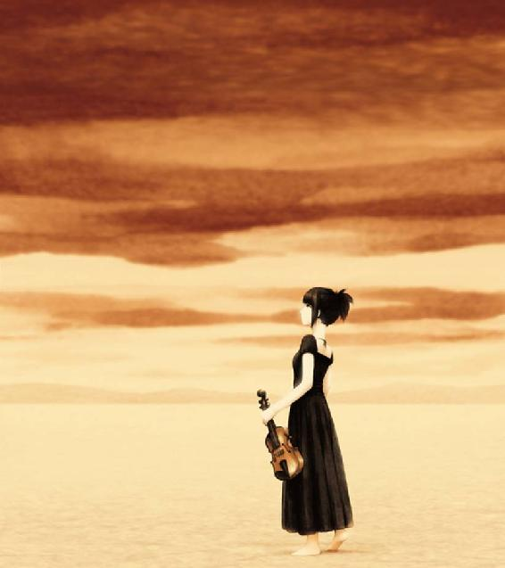

| まのまな 甘い友情・憂鬱な恋 1 | |
| 松野胡桃 | |
| UNKNOWN (2017) | |
父を亡くし、母と二人で落ち込んでいた愛菜(まな)は寂しさから男友達を持つ。得意なはずのピアノもサボりがち。それはちがう、不自然だ。私らしさを取り戻したいと気持ちを切り替える。男を捨て、音楽に身を投じれば寂しさなんて感じないはず、自分らしい高校生活を取り戻せるはず。愛菜は高２にして自分らしさを取り戻すために転校し、一人暮らしを始める。
そこにでは久々に女友達を持つことも出来たし、明るさを取り戻すことができた。理解してくれる憧れの先生、優磨も居れば無二の親友、真音(まのん)と出会えた。
星見音高では開放的な楽しい学生生活が確かにあったが......。優磨の優しさに心を開きかけた愛菜は、妖艶な亜里沙に優磨を盗られたように感じる。これをきっかけに父の死の真相を思い出して愕然とする。間が悪く起こしてしまった火事は真音の宝物、ヴァイオリンを焼いてしまう。塞ぎ込んだ愛菜は真音との友情も続けられないと決め込む。
ハイライト
真音は目を開いて愛菜の頭上を見ていたと思うと、視線を愛菜に落として無表情から微笑みに変わる。そして、目を閉じる。
その視線を合わせては静かに微笑む真音の愛らしさが音に絡み付いてうつろな心をほの明るくしている。いい演奏ってこういうことなんだ。真音はこんなに可愛い人なんだと、思い知った。ただ、いつもの無表情から、ほんの少し口元を絞めてほんの少し首を傾げるだけで――
小野信二は大学生だ。幼少をアメリカで暮らしたせいもあって女性の扱いがスマートで心地よかった。はずだ。
いつもそうしてくれるように、店員より先に彼は椅子を引いてくれた。
「ありがとう」と、北原愛菜はそこに掛ける。
「で」と、信二は向かいに掛ける。「君はココアだったな」
「うん」と、俯いている。
「ココア２つ、砂糖無しでね」
だが、愛菜はなかなか話を切り出さない。
窓の外には雪がちらついている。信二はコートを脱いで隣に置いて待つことにした。運ばれたココアをすすり、それが半分になると助け舟を出さざるおえない。不本意なことだった。別れ話に決まってる。
「好きだよ、僕は」
「え、そんなこと言わないで」
「元彼がそんなにいいのか。僕とは正反対だとか言ってたよな」
「うん、シンジはとてもいい人。だけど、私は必要な人じゃない。私を好きなのは本当かもしれない。でも、私が居なきゃいけない人じゃない」
「このまえのこと怒ってるのか」
信二と愛菜が並んで歩いてるところに女子大学生三人組と出くわした。三人は信二の知り合いらしくシゲシゲと愛菜を見た。
「信二の彼女にしちゃ若くない、高校生？」と、一人目。
「お、弟みたいなもんさ」と、罰悪そうにしている。
「そんなこと言って純潔でカモフラージュしてもダメよ」
「この子に失礼だろ」
「私たちは妙子の味方なんだけど。このロリコン！」
「三つ下なだけだ」
「あんたカッコばかりつけてるけど、レディに失礼なのはアンタだよ」と、二人目。「もういいよ、行こうよ、妙子も」
愛菜をチラッと見てスネて俯いてる三人目が妙子なのだ。
そのことで気まずくなったのは事実だ。そして次のデイトがこれだ。愛菜なりに考えた別れ話だ。理由は２つある。妙子のことではなく江藤勝志という不良高校生、元彼への想いが募っていったからだ。理由の２つ目はその理由......彼が愛菜を必要としていると言ってくれたからだ。
「妙子さんのこともあるかもしれない」
「馬鹿な。ああ、嫌いじゃない。君以外の子をみんな嫌えって言う気か」
「あんなふうに言われるんだから、デイトとかしたんだよね。あの人は絶対、シンジが好きだよ。それにシンジはもてると思う」
「あいつは固まるんだ」
「え？」
「二人で会ってても、黙ってしまって、楽しいのかつまんないのかすら判らなくなる」
「女の子はそういうこともあるよ」
「そうだな、愛菜もさっきフリーズしてたしな」
「あ、うん、だって......」
「ちょっとレディファーストするから勘違いするのさ。このスタイルは変えられないが」
「いいと思う。ちょっといい気持ちになれる。だから、みんなをいい気持ちにさせてあげればいい。嫌味じゃなくて、そう思う」
「みんなを......。愛菜、本当のこと言えよ。僕のせいにしないでほしい」
「うん。本当のところはよくわからない。ただ、カツシは私が居ないとだめ。他の女の子は寄り付かないみたい」
「僕に言わせれば、そんなやつのとこに戻る意味が判らない。まぁ、必要とされることは悪くないのかもしれないがね。なぜ必要なんだろうね、そこんとこ見てないと、勝志ってやつが愛菜を要らなくなる日が来たとき、後悔するよ」
「先のことはわからないよ。ごめんなさい。シンジはいい人。私にはもったいない人」
「そう、僕はいい人だよ。いい人ってのは自分の望みが叶わないんだ」
愛菜は出て行くしかなかった。私にもったいなくない人が勝志だとしたら勝志はいつまでも悪びれた小男のままなのかもしれないと思った。
一人で歩く３月の街は寒かった。風が強いということは春になろうともがいている証拠だと昔、父に聞いたことがあった。
『女子高生よ、三流の進学校に入って三流大目指して勉強する。同志と楽しく人生の春を乗り切ってゆく年頃。何をくすぶってるの、私。お父さんなんて引きずらないで、お母さんの悲しみに引っ張り込まれないで、生き生きと、楽しく、この一日一日に血を通わせなきゃ。そう、だから、だから？勝志でなきゃ、ダメなの？』
公園のベンチにはカップルやおばあさんが掛けていた。気持ちの整理しなきゃ、と、見回すと、ブランコは空いている。愛菜はそこに掛けると、一息つく。
『勝志を彼氏、そう、恋人にするという実感は持てていない。男を振るなんてことじゃない、ただの遠慮だ。まだ高１なんだから、ちゃんと冷静に進むべき方向に進んでるのか、分からなくていい。いま、一番幸せなことに身を投げれば良い』
女の子がもう一つ空いているブランコに向かって走って来る。愛菜と目が合うと、一瞬止まったが、サッと残る一つに乗って、ゆっくり漕ぎ始める。小学生だろう。一人なのか、連れは見られない。
愛菜は下を向いた。『今、幸せなこと......』
フッと、笑いが起こる。『小学生の頃から、本当は何も成長してない私なのよ』
土曜日の授業が終わって、みんなが帰り支度をしているとき、愛菜は四年生だった。
「まりちゃんとこ行こうよ」と、言ったのはゆみちゃんだった。いつもの三人が集まることになったが、気を遣って「ねぇ、まなちゃん」と、誘ってくれた。私は寂しがりであっても孤独を愛していた。『そう、その頃から、私の幸せはみんなの幸せと食い違っていた』
「私、ピアノがあるから、遊べない」と、断ることが始まったのだ。
愛菜は本当にピアノを毎日、特訓していた。父の熱の入れようが半端でなかった。当然だろうか、愛菜の父親は水町家が経営する宇都宮音楽大学のピアノ講師の一人だった。水町家一族では異端な奏法、一族の反対を押し切った、音楽関係者でない女との結婚。これが破門に近い音大の出先ピアノ教室にまわされることになった理由だ。その父が亡くなると、残された母子は水町を名乗ることができなくなった。愛菜にとって何がそれほど気に入らないのか理解できないが、それほど一族から母が嫌われているのだと思うしかなかった。そのときは――。
愛菜は父、水町時雅が亡くなる少し前のことを思い出していた。「まりちゃんとこいこうよ」の誘いは、もし、父がその日、仕事に出ていなければ、「二時間だけ行かせて」と、父に頼んだに違いない。しかし、あの日は父が居なかった。だからこそ、愛菜はレッスンを口実に友達と行動を共にしなかった。
練習がサボられるチャンスだったからだ。家に帰ると、鞄を置いて、すぐに遊びに出る。
「お父さんが居ないからって、練習サボっちゃだめよ」と、母が言っているのを背中で聞いて「後で！」と、叫んで出てゆく。
行き先は小学校に併設されている幼稚園だった。そこにあるブランコに乗るのだ。その乗り物は囲いも扉も屋根もないが、ちゃんと移動してくれる。自分だけのドライブに走らせてくれるのだ。
自由に、しばし、ピアノの練習も忘れて、もちろん、何も聴かずに音と戯れることの出来る時間が持てるのだ。愛菜はこの頃から魔界に入ることが出来た。思いっきり油断して心を遊ばせればすぐに魔界に入られる。
魔界には音があふれ、ショパンでもリストでも何でも聴けた。心で沢山の音を反芻できる自分だけの空間が魔界だった。
「私の一番幸せなことに、身を投げるって」と、つぶやいた。嫌なことは６年経っても思い出せる。
あの時、ハッと気が付くと、愛菜はブランコをとめた。ゆみちゃんたちが不機嫌な顔して立って見ていた。愛菜も見返すしかなかった。
『私と一緒より一人でブランコのほうがいいのね』という目は愛菜に、友達より魔界を取ることの覚悟を迫っていた。
何度となく、こういうことがあるまでも、決して友達が要らないわけではない愛菜は、音楽に心をむさぼられる時間によって友達作りに消極的になるしかなかった。この日から、愛菜はプライドと意地で、「友達は要らない」と、決め込んだ。そんなものだから、中学時代も学校で話せる友達は居ても、プライベートタイムを友達と共有することはまったくなかった。
父、時雅は五年生のときに事故で急死して、レッスンと言う意味では解放されたはずだ。しかし、愛菜は学校で誰にも弾けない曲が弾けるという、孤高の孤独に身を置く事で、少しの憧れの目を向けられることで、「友達は要らない」という意地を張れた。
隣の女の子がブランコから離れると、別の女の子に向かって駆けてゆく。「遅いよ」と言いながら。
三流進学校に通い始めても、勉強ばかりしている人以外は中学校と似たようなものだった。あえてピアノが弾けるとアピールしないし、一部の我利勉塾オタクの様にクラブ活動などせず、目立たない暗い付き合いの悪い少女というレッテルに甘んじていた。居心地の良さに何を犠牲にしているのか不安はあった。どのくらい『変な子』になっているのかの不安。
「私は......暗くなんかない、明るいのが好きだし、楽しいのも好きだし、元々、絶対、暗い子じゃない、みんなを笑わせたり、いじめっ子に立ち向かったり出来る子供だった」と、つぶやく。愛菜は自分の本性と現実が一致していないことにも不安があった。不自然な自分......。
ブランコを降りて、歩き始める。「だから、信二じゃなくて、勝志？...意味わかんない。――信二......勝志......魔界......」
コンビニの仕事を終えてＪＲ線に乗った優磨は、いつもと違ってほくそえんでいた。何しろ給料を貰っただけではない。もう明日からはコンビニへ行く必要がない。優磨は職を得ることになったのだ。
銀行に振り込まれる給料より少しはましな安定収入が期待できる、しかもリスクの少なめな仕事だ。
連絡は一週間前に入った。趣味で作曲していた『淀風』が数少ないクラシック部門での公募で特賞になった。無駄だと思い込んでいた優磨はそれが最新の日本映画に採用されることすら知らなかった。
もう音楽というものを人生から切り離して何か道を見つけようと困惑していたところだったため、優磨としては実際に道を探すにしても大いに自信になった。この自信が生きる上では絶対必要だったと気が付いた。しかし、それだけではコンビニは辞められない。曲の選考会の一人に星見音楽学校の学長が居た。優磨が無職だと知ったからだろう、そこからオファーがかかった。
「教務長の井上です」という人が面接に当たった。五十歳位のカッターシャツに青ネクタイの痩せた男だった。冷たそうな細い目に緊張しないようにせねば。
「履歴書には遠州音大出とありますが、就職しなかったのはなぜなんですか？」彼は履歴書を持っている。というより、他には何も持っていなかった。メモもペンも。つまり、面接はこの人の独断で結果が出るのか？と優磨はさらに緊張する。
「本当は御菓子工場に就職したんですが、営業にまわされまして、若気の至りといいますか、それを嫌がって出てしまいました。以後、就職活動中に知り合いがコンビニを紹介してくれまして。フリーター状態です」
「つまり、お菓子作りがしたかったんですね」
「そ、そうですね、音楽の仕事は出来ないと思ってましたから」
「どんなお菓子が作りたかったのですか？」と、妙なところで身を乗り出す。
「作ってたのはスーパーなどに出荷される廉価版の和菓子だったんです。僕は味はどこも似たり寄ったりだから見た目とか歯ざわりとか研究したいと思いました。でも、お菓子作りを勉強してきた人やデザインセンスのいい人が居て、はじき出されました」と、マイナスを主張しても仕方ない。
「僕は何でもいいから人を喜ばせるようなことをしたいと思っていました。お菓子作りがうまいわけでもなく、その思いだけでは現実味が不足してたんでしょう」
「音楽ならその手法を知っていたというわけですか」
「はぁ、そうですね。今、僕にできることは音符を並べることだけだと思って作曲をしてた」
「年齢も年齢ですが、大学の成績証明書は見させていただきます」
と、細い手を差し出す。優磨は鞄から封筒を取り出して渡した。
「ほう、封を切ってませんね」
「今さら知りたいとも思いませんし」
井上もすぐには封を切らなかった。
「で、それ以外の音楽活動はしていなかったのですね？」
「現代音楽の論文なんかを雑誌社に投稿して２度ほど掲載された程度です」
「その論文なら、学長が知ってますよ。実はそのことも気には留められてますがね。アマチュアが作った『淀風』に感心されてます」
「そうなんですか、見てる人が居るものですね」
井上は優磨に生活態度とか現在の人間関係とか家族関係まで質問をした。それでも、一切メモは取ってない。
「営業は人相手ですよ。なぜ嫌だったんですか？」
「......人を喜ばせたいと思うことの裏で、傷つけることを恐怖していると思います。このお菓子は栄養価が高いとか育ち盛りにいいとか言って売り込むのに、違うじゃないかと言われることを恐れたりする。仕事だからできると割り切れる部分と、人の反応が怖い部分が同居してます。自信のなさが垣間見えるんです。だから演奏家になろうという発想はありませんでした。音で喜ばせる自信が持てないから。うまい質問をされたものです。――これはきっとマイナスですね」
「特賞は取り消せない事実です。それでいいじゃないですか。何をもって自信としますか？それと、学生は一人前じゃない。学生という生き物とでも思ってください。だから、一人前扱いしては学生が障害を受ける。学生は学生扱いされる時代を過ごしてちゃんと人間になってゆくんですよ。さて、ざっくばらんに言います。望んでらっしゃることはわかりました。音楽短大では教務が事務を手伝うことや担任業務を遂行、つまり、学生の面倒をみたり、およそ音楽とは関係ない仕事もかなりあります。その上で、お考えください。休みは土日祝日ですが、短大では休み無しで学校を開けます。土日片方だけ休んでる現状を打ち明けておきます。一通り書類を渡しますので、今週中に署名して提出してください。教務としては短大の理論と作曲になります。で、何を教えてくださいますか？」
その質問には参った。優磨は自分に何ができるのかと考えてしまう。
「音楽の考え方でしょうか。押し付けになりますが、指標になればいいと思います」
「いいですね。それでいいと思うよ。みんなそこで固まってしまって黙ってしまう。何かをして下さいと言えば、ハイと答える。がんばりますとも言う。でも、何をしてくれるのか尋ねると何も言えない。最近、多いんですよ」
実際、書類提出日、即、採用の知らせが有った。１ヵ月後から出勤することになる。ただし、一年もの試用期間があり、ボーナスは一年間ない。そう多くはない賞金は優磨の住まいを移動させて、勉強時間と本で費えていくことになる。入院費も必要になるとは夢にも思わなかった。
フリーターから脱する、少なからず責任がある職につく、社会にようやく組み込まれる初々しい期待に酔いながら、いつもは降りない大公園脇の駅で下車してふらふらと散歩気分で歩いていた。冬が終わり夜も寒さを凌げた。肌寒さはあったろうが気持ちが高揚していた。普段飲まない缶ビールを開けていた。
二十五にして遅ればせながら社会人になる前夜祭のイメージだった。すぐあとに、災難に遭うとも知らずに。
二十二時を回れば大公園周辺はかなり人寂しい。そもそも、住まいは一人暮らしのアパートであり、ここからだとかなり東へ歩くことになる。ＪＲで乗り換えるのが当たり前だったものの、疲労がまったく感じられないため、こういうときに運動不足も解消しようと思った。
フリーターでも優磨はいつもブレザーを着ていた。着るものはまともでありたいと思っていた。お洒落ではない。ただ、着るものはナンパにしたくなかった。それ一着しかないというのも哀れだが。
それが災いしたのか、暗がりで金持ちのおじさん風に見えたのか。優磨は駅からの細道を東に出たあたりで通り魔に逢った。
後方からバイクが近付いたと思うと、走り抜けるのかと思いきや背中に衝撃が走った。何が起こったか考える前に、前のめりに倒れるしかなかった。
二人の少年と思しき男はバイクを止めると、手にしていたパイプのようなものを振りかざした。何度か足や肩や打たれる。もう一人も腹など蹴ってくる。親父狩りか？
単車に残ってた女の子も降りてきてナイフをかざしたりしている。その動きはこういうことに慣れてない戸惑いが見て取れた。彼女は結局、ナイフを向けることなく、「やめなよ！」と叫んで男に抱きついている。
優磨はとりあえず、尻ポケットから財布を取り出すと、数メートル先に投げた。「金ならあれしかない！」と叫んでいた。
「ねぇ！」と、男に抱きついてとめに入る少女は振り投げられた。
「女の子に何するんだ」と言うと、男は「うるせー！」と言いながら財布へ走り、拾い上げるとバイクに跨った。もう一人も別のバイクに跨ると、パイプをおいたまま発進した。少女はそれが当たり前のように後ろに乗って男にしがみついていた。
おそらく、１分程度の出来事だったと思う。が、あちこちの痛みを確認しながら起き上がって、十分はパイプを見つめていた。まぁ、殺してまで金品を奪うやからが居るんだから、そうでないレベルなら日常茶飯事の出来事なのかもしれない。自分が被害にあうとは思っても見ないものだが、自分でやらかした事故のようにありえることが納得できる。そのことが恐ろしいと思った。
ふと見ると、手帳が転がっている。自分の手帳は投げ出してない。拾い上げると、学生証だった。学生証携帯の不良グループか。見ると、市内の高校生、北原愛菜なる子のものだ。さっきの女の子はこんな感じだったか。写真ではまったくわからなかった。
とにかく、痛み始めたあちこちが心配になり最寄の病院へタクシーで連れて行ってもらうべく、大通りを目指して歩いた。そこまで２百メートル程歩くと、『乗車拒否されないように』とばかりにふらついた身を立て直した。
投げた財布には札入れだったため銀行で降ろした２万円と領収書などが入っていた。カード類は入れていなかった。カードがあればとりあえずタクシーには乗れるはず。足の内出血と手の捻挫が痛むと、思いきや『あれ？』と、周囲が揺れた。まさかと思う間もなく、優磨は倒れてしまった。
――
優磨は真っ赤になって涙ぐんでいた。小学６年生の優磨は担任の女先生に手を引かれていた。みんなも一緒だ。みんなで映画館から徒歩で帰っている。映画館での映画鑑賞の日だ。『禁じられた遊び』を見たのだ。優磨は感動して泣いていた。ギターの調べが効果的だった。幼い子供の話だが、十分に感動できた。しかし、映画館を出ると、誰も感動に心穏やかでない人は居なかった。優磨は同級生は感動しないのか？とは思わなかった。やはり、自分が特別なのだと思った。特別だから、みんなに合わせて澄ましてなきゃいけないんだと思った。それでも、クラスの女の子が指を差して笑うくらいに取り繕えなかった。先生は優磨の手を取って歩き始めたのだった。
「梅川君は感動しやすいのね」
「僕は変です」
「あなたは、ある意味、大人なのかもね」
「こどもです」
「禁じられた遊びはね、大人が感動するように作られたお話よ」
優磨は目を開けた。古い夢を起きざまに見ると、その頃から後の記憶が消えているんじゃないかと心配したが、病室に寝ている理由は分かっている。窓の外は明るかったが何時頃かは分からなかったし、すぐに知りたいと思わなかった。しばらく、ぼんやりと、昨夜の病院での治療の痛みなどを思い出していた。肩と膝と手が痛むはずだ、それ以外はたいしたことは無い。と、首を動かそうとした瞬間、頭に鈍い痛みが走った。
「ウ」
「あ、優ちゃん」と、姉の聡美が覗き込む。「私、わかる？」
「ああ、浴槽で眠って２回溺れかけたバスルームの女神」
彼女は指で優磨の鼻を弾くと柔らかに「大丈夫そうね」と言う。
「姉さん仕事は？」
「これだ、呑気ね。優ちゃんの一大事よ、自分では分かってないかな、目を開けなかったらとか、開けても私が判らなかったらなんて色々心配したのよ。でも、全治二週間らしいから、田舎には慌てて来ないでいいって電話しちゃった。だから余計、目を開けてくれるまで心配だったよ。......それで、何があったの？」
「記憶が確かなら親父狩りに遭った」
「親父？...」
「僕は救急車で運ばれたのかなぁ」
「みたいよ。あ、気が付いたら看護師さん呼んで来るんだった」と聡美は出て行く。
優磨は精神的にも落ち着いていた。『そうか、治療中に肉親の方はと訊かれても何も言えなかった気がする。なるほど、携帯電話が窓際に置いてあるのは連絡先を見られたのか。それで来てくれたんだ』
姉が先、僕が続いて田舎から都会に出てきた。１時間もあれば会える距離に居て今年は正月以来会ってなかった。
さて、あの件だ。怒りは収まらないが、身が無事だったことでホッとした。しかし、この状態では出歩けないだろう。どうしたものかと思った。当然、警察に届けておくべきことだと思ったが、少年だ、実際に犯人が留置されるってことは無いのだろうか。でも、社会的な懲らしめは必要だ。次もやるに決まっているからだ。北原愛菜に聞けば犯人の身元は判るだろうから動けるようになるのを待つしかない。
――
信二に別離宣言した愛菜はまた、勝志と付き合い始めた。
そもそも、彼の暴力的な態度や、甲斐性も無いのに『俺について来い』的な言動、俺の女なら俺に口答えするなという日頃の態度にとうとう我慢できずに、一度は彼から逃げたのだった。
その頃声を掛けられた小野信二と何となく付き合い始めたのだが、日常の生活に女友達が居ない愛菜にとって、信二と付き合うまでに時間を要しなかった。信二はとても優しくて気も遣ってくれたが、愛菜は少しずつ信二との釣り合いに疑問を感じ始めた。何か不満があるのだろうかと自問しても分からない。だからと言って勝志の男っぽさが好きだったことに気づいたなんてことは絶対にないと思った。
勝志は基本的に寂しがり屋だ。母親に家出されて父と子二人の生活はばらばらになっていった。その父親からは小遣いだけは沢山もらっていたため、特に反発することも無かったようだが、実際は家に帰ることすら少ない家庭の無い生活をしていた。
「母親ってのが居たら、家庭があるってことだよな」と、勝志は言ったことがある。そういうことを聞くだけでも、自分に聞かせてくれるだけでも勝志の彼女だと自覚できたのだった。
愛菜は父親を亡くしている。しかし、母との間が疎遠になるなんてことは無い。いまだに辛そうなときがある母を鬱陶しいと思うが、それ以上に可哀想に思える。
「俺、留年が決まった。そんな彼氏なんて、かっこ悪いか」
「いいよ、二年生のままのカツシもカツシだもん」
愛菜は驚かなかった。そうなんだと思っただけだ。私は彼についていればいいと思った。
「お母さん、カツシねぇ、留年するんだ」
愛菜の母は仕事から帰ると仮眠して掃除洗濯夕飯の支度をする。愛菜は勉強しなきゃいけないからと手伝いをさせない。だから、おのずと夕飯までに宿題はする。お陰で成績優秀ではないが、遅れてもいなかった。少しは家事の勉強もしたいのだと思い始めていた。
「そう」と、ジャガイモをむく手は止まらない。
「悪い子とは付き合っちゃダメって言ったよね」
「そう、だめですよ」
「カツシは悪い子じゃないよ、お母さん出てってぐれてるんだよ。まじめになってくれるよ」
「そう。ならいい」
母は甘い。こんなだったか。お父さんが亡くなってから変わったのかな。愛菜はこれを無関心だとは思わなかった。母は好きなことをしてゆくのが一番幸せだと言ったことがある。自由に好きなことをすることが苦労でも幸せだと言うのだ。苦労が好きか？私には判らないと思ったものだ。
でも、あのとき愛菜に芽生えた気持ちがあった。「ならいい」と言われて愛菜は自分の責任ということを感じ始めた。
『ありがとう、私はお母さんにそう言ってもらえるようなこと、したんだろうか。私はカツシに付いていただけ。カツシを良くして行けるように何かできたんだろうか』
留年した彼氏なんて、かっこ悪いに決まってるじゃないかと、怒れないのはなぜだろう。それは私がカツシのことを想ってないのだ。私が寂しかっただけなんだ。愛菜は子供だったと感じた。
しかし、勝志は自棄的になってゆく。
コンビニの駐車場に単車を止めると、二人傍で腰を下ろした。春休みの初日を何もしないで過ごすことになりそうだった。また勝志は力なくぼやき始める。
「金がない。お前とどこかににしけこむこともできない」と漏らす。
「いいよそんなの。じゃなくて、ホテルとか行かないからね」
「ちぇっ。なんで俺についてきてるんだお前、来年も留年か退学かになるぜ」
「だめよ、ちゃんと勉強して就職して、ちゃんとした大人になろうよ」
「まじめに仕事できると思うか俺が。貧乏には慣れてないし。人にミスをガタガタ言われながら仕事なんてできるわけないんだ。就職したってよ、きっと続かない。お客とかに頭下げるのも御免だ、作業着着て工場で働く？規則を守って事故も起こさず喧嘩もせず毎日無遅刻......なんて無理だ。親父に寂しそうな顔して小遣いせびるのも限界みたいだし」
「みんなちゃんとやってるんだよ。生きるためだもの」
「小遣いってのは女囲うのに必要だって意味なんだ。親父はお前のことを幻滅だって言った」
「え？」
「女の力が男にやる気を起こさせるとかね。俺が良くならないのは女がそもそも悪いからだと」
「私が......」
「だから小遣いやっても意味がないんだと。言ってやったさ、お前が親だろって」
「私のせい......そんな気はするかも」
「馬鹿言うな。逆だ、俺はお前をだめにしてるんじゃないか......」
「そんな......私は友達も作れない、学校の人たちとは話も全然合わないから逃げてばかりの変な子だもん。話しかけてくれたんだもの。救われてる」
「太一遅いな」
「太一君来るの？」
「親父は再婚を考えてんだ。真っ当になるなら一緒に住んでもいいとか言い出してさ。俺が出てゆくように仕向けてるのさ。出て行くんだろ、自分で食えるように稼げだと。女に食わしてもらうなだと。殴る代わりに鞄投げつけて出てきた」
「それって、真っ当にならないってこと？」
「ああ、なれないね。女作って幸せ紡ごうなんて思ってるやつを引き摺り下ろすさ」
「だめよ。私も引きずるってことでしょ」
「一緒に引きずられてくれよ！」と、俯いて「だめなのは分かってる。死にてぇよ」
「だめ......ああ、死にたいなんて...」
「俺たち、話合ってるか？学校の友達が作れないからってよ、俺とは話、通じてるか？」
「通じないね。ただ、一緒に居るだけ。カツシが寂しがってて、私が寂しくて。だから私はお父さんにダメ女って言われるんだね」
「そうか、親父は屁理屈こねてお袋をダメ女呼ばわりしたに決まってる。逃げられてざまぁみろだ」と笑うと、「いい子じゃない俺も捨てられたんだけどよ」と俯く。
「ちがうでしょ、お父さんが幾らかお金持ちだからでしょ。お母さんは置いて行きたくなかったって、前に話してくれたじゃない」
「親父から聞いたんだ。お袋じゃない。――愛菜は親父が死んだんだから、仕方ないんだ。家族が壊れたんじゃないのはある意味、救いだ。でも、それなら、もっと真っ当でいいんだ。本当は、お嬢さまだろ、ピアノ習ってるんだろ。俺とは合ってなんかないんだ。時々イヤホンで聞いてる音楽もすげえ違うし。何でかな......俺はお前のために真っ当になろうって気がしないんだ。それは合ってないからなんだ。いつでも逃げられる女。また、どうせ、逃げるんだ。今、たまたま隣りに座ってる女......だから、俺は男になろうって気持ちにならない」
「......ダメ女だからね、そういうところを、お父さんは見抜いてるんだ」
「違う。絶対にちがう。お袋はダメ女じゃない」
「あ......そうね」
「真っ当な娘になれるのによ、お嬢様は貧乏でもお嬢様だろ。だから、俺の女になれって言えない。お前のために男になるとも言えない」
「そんなことないよ。お母さんに苦労させて、呑気に遊んでる不良娘だよ。ピアノはお父さんの形見だし、教室に寄付してその代わり弾かせてもらってるだけ。だから月謝とか払ってないし」
「形見、手放していいのかよ」
「仕方ないよ！アパートでは......」
「大声出すなよ。お父さん好きだったか」
「分からない。たぶん変な子になったのはお父さんのせい。ピアノばかり弾いて、なんにもできない子になっていった。そのくせ、全然うまく弾けない。ただの変な子だよ」
「そうか、嫌いなのか」
「そうじゃない。自分のことが嫌いならお父さんも嫌うことができる。でも、そうじゃないから」
「そうか、俺は親父は嫌いだ。ああ、金がない。何もできない。家にも帰りたくない。飢え死にしたい――って言って見ても、その前に盗みでも何でもするようになるのさ」
「そんなことしたら私、別れる。今度こそ」
「好きだとか言いながら、がんばろうと思えない。また俺の前から居なくなると思うとな......でもよ、俺は付いて来るなとは言えない。声を出せば付いて来いと言ってしまう。だから、俺を見て、自分で決めてくれ」
「カツシ...」
「金の切れ目だ。どうせいいめさせられねぇよ俺。――太一だ」
その男は中学を卒業して働いている勝志の友達だった。少しは稼いで単車を買ったのはいいが、ローンが終わる前にクビになってしまった。だからこの春はバイトで忙しいと聞いていた。単車でやって来ると二人に右手を上げて引きつるように笑う。
「女と一緒ってのはどうかな」
「死なばもろともだ」と、勝志は太一に言う。愛菜のほうは見ない。
「抜かすな、死んでたまるか。連れてくのか」
「愛菜はなにもしない。くっついてるだけさ。あれは隠してあるな」
「ああ」
「何？」と愛菜は勝志を見る。が、勝志は見ない。
「あれって何？死ぬって何？」
「アッハハ。太一が変な事言うから怖がってるぞ」
「お前が言ったんだろうが。ちったぁ金持ってる。晩飯買ってとりあえず大公園に行こうぜ」
おにぎりだのをコンビニで買うと、２台の単車はいつもと違ってゆっくりと走った。二人の男の妙な緊張感が気になった。でも、何か訊いて教えてくれないことはいつものことだった。ただ、山の上から夜景を見るときでさえどこに行くのか訊いても無駄だった。
大公園に単車を止めて貧しい食事が終わる頃、愛菜は意外と遅くなったのが気になり、公衆電話で母に電話した。『十時には寝るからそれまでに帰ってくるようにね』と言われただけだ。
「これ、預けとくよ」と、勝志は愛菜にカバー付きのナイフを渡した。「そんなもん使わないからな」
その夜、勝志と太一は不良少年のマークのようにマスクをして走り始めた。愛菜はそういう顔隠しのファッションがそういう連中に流行っている程度に思っていた。途中、太一は草むらから棒を拾い上げると勝志に渡した。
喧嘩だ、喧嘩が始まる。と愛菜は思ったが、単車の後ろで勝志にしがみついているしかなかった。『死なばもろともって』と、頭をかすめたが、そんな大喧嘩するつもりなのか。今日の勝志はいつもより殺気立っていたような気もする。私は何をしたらいい？と、愛菜は考えた。喧嘩なら勝志が必要としたらナイフを返すのか。自分の護身に使えと言うのか。でも、逆に犯罪を犯すようなときには勝志を刺してでも止めるのが自分の役目なのかもしれない。
しかし、彼らがしたことは通り魔だった。お金という確たる目的があった。男を後ろからいきなり襲ったのだ。お金など持ってなさそうな若い男だった。馬鹿だ、こんな男襲って罪だけは一人前に背負って。失敗に終わらせようと愛菜は預かったナイフを抜いて単車を降りて勝志に抱きついた。勝志は振り払うと、パイプのようなものを振り上げている。ナイフで勝志の足を縦に刺せばダメージは少ない。が、そんなことを考えてできるものじゃなかった。そうこうしている内にパイプは何度か振られていた。愛菜はナイフを使うことを諦めて勝志を両手ごと後ろから抱いた。
「やめなよ！」が、あっさりと払い飛ばされてしまった。
男は賢明だった。財布を投げたのだ。目的がお金だった二人は速やかに拾い上げると単車に跨った。愛菜も急いでしがみついた。
十分も走ってようやく財布の中が確認された。二万円だ。一万ずつ勝志と太一で分けた。
「まぁ、あった方だな」と、勝志は冷静に見えた。その落ち着きが愛菜には異常に怖く感じていた。
「やべぇ仕事でこれだけかよ。ターゲットが失敗だったな」
「俺のせいかよ。後ろからじゃ無理だ。次はよ、前からいっぺん見ておいて決めようぜ」
「駅から何時頃にどんな親父が出てくるのか調べてからってのもいいな。愛菜ちゃん協力してくれよ」と、太一。
「愛菜は無理だ」と勝志は言った。「警察に垂れ込まれないだけでも協力ってもんだ」
愛菜は一心に逃げたかった。自分では何とも出来ない大きな力で勝志は勝志らしくなって行っていると思うしかなかった。付いていけないという思いだけではない。母に申し訳なかった。これ以上は母を裏切られない。もう限界だ。
「同じとこでやったら張り込みに遭うよ」と、愛菜は言って『何言ってんだろう。私までおかしくなる』と思った。
「ほぅ、可能性はあるな」と、太一は感心した。
「カツシ、送って」
「判った」と、勝志は真剣に見つめた。
『そんなことしたら私、別れる。今度こそ』と愛菜は心で言った。
太一と別れて一台になった単車はゆっくり走った。静かだった。
前も後ろも声を発しなかった。
『どうして、せっかくシンジと別れてカツシの元に戻ったのに。私のことも好きだって言ったくせに。どうしてこんなになっちゃうの？今度は別れないって思ってるの？試してるの？』愛菜は思った。
『俺を見て、自分で決めてくれ』そうだ、勝志はそう言った。勝志は私が『真っ当な娘になれるのに』と言った。それは違和感のようなものだ。私は......自分の本性と現実が一致していないのだ。不自然な自分......。
単車は愛菜の母の待つアパートまで五十メートルという所で止まった。愛菜が「止めて」と言ったのだ。
「私はお母さんが好きなの。だから、迷惑掛けられない」
「判った。俺は......お前が好きだからな。それは変わらない」
「帰るね」
五十メートルの間で愛菜は信二の事を考えようとして止めた。
「この寂しがり屋」と、愛菜は自分に言った。「結局、心から誰のことも思ってない、ただの寂しがり屋で、それを認めたくなくて、勝志が私を必要としているとか思い込んで。勝志を嫌だと思ったらまた信二のこと考えたり、何がしたいのよ。もはや魔界だけでは生きていられない寂しさにもがいてるだけ。女の子と話が合わないんじゃない。ただ、私が意地を張り続けた。その結果を、もう一人も友達が居ないことを認めるのが怖い......」
すべてをリセットしよう。リセットさせてもらえるなら、父が交通事故に遭う前まで。私に甘くなってしまったお母さんが教えてくれたこと、好きなことをするのが幸せなら、私の意志で好きなことをしたいと言おう。そして最後のわがままを聞いてもらおう。愛菜は思った。このまま何も変わらなければ、きっと勝志に出会う前の暗いだけの少女に戻ってしまう。そうなったら勝志のように自分が嫌になってゆくだろう。そして父を嫌になって、生んでくれた母も嫌になるだろう。
愛菜は帰ると母に笑顔を見せることなく、部屋にこもった。しばらく膝を立ててじっとしていると冷静になるのだろうか。既に冷静なのだろうか。
「マナ、お母さん寝るからね。御飯食べるのよ」と、扉向こうで声が掛けられた。時計を見ると十時二十分。一時間近く過ぎていた。
「お母さん」と、愛菜は立ち上がって部屋を出た。
「お母さん、とても大切なことだけど、とても急ぐことなの。十五分待って」
「何を待つの？」
「寝るのをよ。話があるの」
卓上に並べられてラップが掛かっている夕食のおかずは焼き魚と玉子焼きだ。それを横目に淹れられたお茶をすすって意を決した。
向かいで母は何も言わず、待っている。固まってちゃいけない。何を言い出すのかと突然怒り出すかもしれない。いや、先のことを考えて止まっていてはだめだ。私はリセットするんだと、愛菜は力む。
「私を転校させてほしいの」
母はちょっと口を開けたままになると、「それで？」と言う。
「ごめんなさい」と言うと、涙が出てきた。「私は気付くのが遅かった。気が付いたときにはカツシはもう遠くに行ってた。もう私なんかではどうにもならなくなってた。悪い子と付き合いました。お母さんを......」
「逃げた方がいいの？勝志君を泣きながらひっぱたく事くらいできた？」
「寂しかっただけ。それでくっ付いてただけ。そこまで出来る勇気も私が生きてゆく力も私の中に無い」
「愛菜......私がいけないんだよね」と、母。
「どうして？私が嘘を言ったのよ」
「私はあなたをひっぱたいてないもの。気持ちがあれば、それくらいできなきゃいけない。久しぶりに見たよ、愛菜の涙。それが精一杯よね。若いんだからもっとぶつかりなって言いたい。でもね、いつも塞ぎ込んでて、元気が無くて......そんな愛菜を私が元気付けてやれなかった。ただ、お父さんが自由を求めたように、貴女には自由にさせてやろうって思ってた。私の精一杯で」
『ごめんなさい。私はお母さんを元気付けることなんて少しも考えてなかった。交通事故の被害者の顔して、一番の被害者だったお母さんに甘えることしかしてこなかった』と思うと、ただ、反省の思いに態度はフリーズした。こうしてちゃだめだ、十五分で終わるつもりで話さなきゃだめだ。決意をちゃんと言わなきゃ。
「リセットしたいの。小学校に入学する前みたいに友達ができるか不安な所から始めたい。私、一人で暮らす。お母さんはここで待ってて。転校する。少し遠いところにしたいの。バイトして何とかやってみる」
「住むところまで変えるの？大した決心だけど、ちゃんと考えたの？思いつきで言ってるんじゃないの？」
「お母さんだって仕事してるじゃない。私は若いんだよね。その力を信じてみる。春休みってバイト探しのチャンス。住む所も探す」
「何だか、生まれ変わる感じね。中学校じゃあるまいし、学校って簡単に変われないでしょ」
「ま......雅敏兄さんに、お願いしてほしい。お母さんに頼みたいのはそのこと」
母は今日一番びっくりした顔で固まった。父、水町時雅が水町家の次男、雅敏は父の弟で三男、宇都宮音大の教授。父、時雅は水町家から縁切り状態になっていた。父亡き後、本家から水町の名を語るなとまで言われた母は旧姓、北原を名乗るようになった。愛菜は小学六年生からずっと北原愛菜だった。
「私ね、星見音高に行きたい。でも、今の学校の推薦では無理だし」
母は固まったままだ。
「編入が出来ないと、一年生からでもいい。入学金のこととかあるけど、奨学金が取れれば......当たって砕けたらそのときは考える」
「ピアノ弾きになるの？」と母は怖い顔で見る。
「ただ、木島先生みたいに、子供たちにピアノを教えて食べて行けたらいいと思う。お母さんが水町に電話なんて絶対したくないのは分る。わたしがとんでもない無理を言ってるのは......」
「木島さんとこに預けたピアノを持ち出すの？」
「あれは置いておくしかないと思う」
「愛菜！」と、怖い顔のままだ。
「はい」と、気圧される。
「電話する。善は急げよ」と、母は玄関にある電話機へ向かうと、いきなり雅敏へ電話する。
「遅くにすみません、北原春香です――」ずっと前にメモされた雅敏の携帯電話番号が初めて使われた。
愛菜は母の力に恐れ入った。雅敏は次の日には星見音楽高校に掛け合ってくれたのだ。その雅俊の力も絶大だった。一部返済の義務は負ったが奨学金は了解され、２年生からの編入は実技テストのみとなった。愛菜の選曲で構わないのだ。
愛菜はモーツァルトの十四番ソナタ第一楽章をなぜか最近無性に練習していた。モーツァルトなんて元々合わないと感じていたのにどういうわけか。一年ほど前に夢を見てからだ。まだ小学生の愛菜は全然うまく弾けずにモーツァルト嫌いになりかけていた。前の楽譜や鍵盤を見ていて父を見ていないのが残念だが、そのとき、父が後ろに立って少し前かがみに愛菜に言ったことを憶えている。
「モーツァルトは軽やかで無表情で目を瞑って弾いてもそれなりに聞こえる。だから、あいつの要求を憶測しても無駄なのさ。あいつが何考えて作ったかじゃなくて、愛菜がどんなふうに聴かせたいかだ。気ままに料理して聴かせてくれ」
夢の前後は判らないが、この声を思い出してからは挑戦したいと思った。
「え？それでいいのか？」と、電話の向こうで雅敏が言う。
「あ、はい。最近に練習してたから」
フッと雅敏が笑った。「いや、時兄は子供の頃、モーツァルトが大っ嫌いだったからね。じゃあ四日後の十時に雀橋駅で待ち合わせだ」
「うん。雅敏兄さん」
「何だ」
「いろいろありがとうございます。突然の我がままで」
「我がままってのは治らないらしいぜ。こんなことがあるとは、本当に、びっくりだ。ずっと気にしてたよ、アパートに訪問したらいっつも『帰れ！』って一蹴されて、相当、嫌われてると思ってね」
「す、済みません。水町は好きになれない。でも、ずっと小さい頃から私たちを見ててくれたのは雅敏兄さんだけでした。お父さんのピアノが好きだって言ってくれるのも雅敏兄さんだけ」
「できるだけのことはしたよ。あとは愛菜ちゃん次第だ」
病院の自動販売機コーナーには円卓が五つほどあり、ウェイトレスでも居たら喫茶店と見紛う雰囲気があった。頭に包帯の優磨はカフェオレ入りの紙カップを二つ置いた。
「どうぞ」と、一つは橋野深雪の前に。
優磨は向かいに座ってぼんやりと着物姿の深雪を見ている。
「退院ですってね」おっとりした声は変わらない。
「順調なら、明後日」
「何考えてるんだろうね。お見合いなんて」
『したくないの』とも訊けない優磨。
「まだ二十三よ。結婚なんてね」
『結婚したくないの』とも訊けない優磨。
「こら！」と言ったのはいつの間にか傍に来た聡美だった。「こんなとこに居た。それにしても、いらっしゃいませミユキさん。優磨に紹介してもらった時よりすこし大人？お見舞いに着物だからかな？艶やかでよろしゅうございますわね」
「あ、これはその...お見合いを」
「実家に連絡したら、病院だって言われて来てくれたんだ」と、優磨。
「まぁお見合いなの。ユウマのためじゃなかったか」
「姉さん仕事は？」
「早終いよ。モテない弟に差し入れしようと思って」と紙袋を持ち上げる。
「あの」と、深雪。「ごめんなさい、私、そのまま飛んで来ちゃったから」
「判ってるよ。姉さんは邪魔だから病室に行ってて」
「ここに座ってようと思ってたのに――いい加減にして上がってきてよ」と言いつつ、聡美は離れてゆく。
「二年ぶり？サトミさん。大人な感じになってる」
「二十八は普通大人だ」
「すぐに帰らなきゃいけないんだけど。ユウマさんには言わなきゃって」
「そう。学生生活に疲れたって、中退して帰って行くし。仕事は続かないし。危なっかしいから親からしたら心配なのかな」
「だめなの。ボーっとしてないと、今でも私は窮屈になる。ユウマさんは判ってくれたけど、でも、どうにもならなかった」
「僕は医者じゃないんだ。どうにもならないのは、どうにかなろうとしないからだよ」
「そういうのも、めんどくさいの」
「君が居なくなった大学は詰まんなかった」
「何度か行ったね、天竜川。あの川原でボーっとしているのは有意義ではあったけど寂しかった。ユウマさんが一緒にいてくれるまでは。私が居なくなると、ボーっとする親友が居なくなったから、詰まんなかったの？」
「......うん、そうさ」
「......それ以上にはなれなかったね」と、小声になった。
『親友、以上......か。僕ではダメだ。君は大人と結婚しなきゃダメだ』
「こんなんじゃ奥さんも務まらないね。ユウマさん、就職はできた？」
「４月からやっと一年生さ。音短の講師」
「え、音楽じゃない、よかったね」
「月給は安いけどな」
「でも、よかったね。私は音楽あきらめたし。ピアノ売っちゃったのよ。だって、お見合いの人んち、グランドピアノがあるんだって」
『それって、結婚するつもりか。僕の給料が上がるまで待ってくれる気は、ないんだよな』「へ、ピアノ弾きとか？」
「全然。ピアノはインテリア。弾き手知らずらしい」
「じゃぁ金持ちか。そういうゆとりが君には合うかもな。メイドさん付きなら尚良い」
「そうね。何もしてないのに、まだ若いのに疲れちゃってる」
「大学１年のときから疲れた感じだったよ。フルートも下手だし、ピアノも下手。なのにオケ部に入って頑張るし。頑張ってるなと思いきや疲れたから都会へ帰るって。生まれつきの自由人だな」
優磨は中腹に痛みを覚えていた。まだ打撲があったのか。今更、後遺症か。
「大学時代は寮生活が大変で...お布団上げたり、お箸を持ったり、アイロン掛けたり、何にも出来ないまま歳だけ取ってたことをいっぱい知った。他の寮生はスマートに生活してるのに、私は一人なのに窮屈だった。深雪病はね、中学生のときから。勉強だけは人並みにしたけど、生活に必要なこと、そうね、歩くことすら、ぎこちなくて未だに治らない」
そうだ、つまずいたり滑ったりが絶えない子だった。
「その中学では生徒会長だったんだろ。人気があったはずだ」
「いえ、副会長。生活と関係ないもの、生徒会なんて。学生も。意見の取り纏めができるとか、作業分担をするとか、机上の空論をこねたりは出来ても、実際に何かしてみると何も出来ないし、できるようになろうともしない。流行も知らなければ、女の子らしい物も好きにならなければ、話も付いてゆけないし、深雪病...それはめんどくさがり。私がフルート上手くなるわけないのよ」
「箱入り娘がまた、箱に入るのか。別の箱は窮屈かもよ」
「何か言ってくれることない？梅川先輩」
「フッ」と、優磨は笑った。『先輩は止せ』と言った日から優磨さんと呼んでくれていた。それにしても中腹の痛みは思考を停止させるほどになっている。
「もう、行かなきゃ。厄介よね、こんな人は」
『待っててくれないか。待たせてどうなる。厄介はいい。耐えられないのは深雪じゃないのか。僕は幸せに責任が持てるのか』「お、大人になったよ、深雪」
「そう。そうかな。......元気で、仕事頑張ってね。あの頃に帰られるって、素敵な仕事ね」
深雪は駐車場へ行くべく正面玄関を出る。
「ここでいいわ」と、戸口で言う。
「君の車があるの？」
「ええ。軽の安物」
「免許取れたんだ。日本の水準も地に落ちたのか」
「私の水準が人並なのよ。じゃあね」と、深雪は歩いて行く。優磨はあぶなっかしいお嬢様の後ろ姿を心配げに見送った。
エレベーターで上がり、重い足取りで病室に向かった。深雪とは友達として、ある意味理解者同士として深く付き合えた。特に深雪は変わった性格だったから、周囲も教授等も手を焼いていた。優磨は自分でなきゃ深雪を幸せに出来ないとすら思ったこともある。だが、現実は就職も儘ならず、かなりの包容力が必要な深雪の相手、自分がご主人となって面倒看る事は非現実的だった。深雪も優磨の自信喪失を感じ取って疎遠になっていった。恋人同士と違い、別れるという明確な宣言はお互いに発想しなかった。
「そんなに急いでたの。――で、ミユキさん、何を言ってたの？」
聡美は和菓子のようなものが入ったパック容器を開けてひとつ摘んでいた。
「お見合いの報告だよ。お見合いして来たって」ベッドに掛ける。
「それで、優、何て言ってあげたの？」と、聡美は立ち上がって優磨の前に立つ。
「お、大人になったねとか...」
「はあ？！んもう、バカバカバカバカ」と、右手が上がった。
殴られると思ったが来なかった。
「負傷してなきゃ容赦しなかったのに。モテないくせに何強がってるのよ。『どんなやつか知らんがヤメトケ』とか言いなさいよね。あんた好きだったでしょ深雪ちゃん」
「そんな無責任なこと言えないよ」
「いつなら無責任でなく言えるのよ。若いんだから無責任はみんな承知のことよ。せっかく就職も決めたのにバカバカバカ。お見合い直後に駆けつける彼女の気持ちが判らないの？！」
「判ったから何なんだよ。姉さん怒り過ぎだし。何かあったのかよ」と言うと、また聡美の右手が上がった。「うわっ」と、構えたが来ない。
「忌々しい、包帯取れたら覚悟しな。帰る！」聡美は空いたパックの分だけ自分の鞄に入れてさっさと戸口に向かう。「色々はいってるから、適当にね」紙袋を指差すと、「退院のときまた来るね」と言って出てゆく。
しばらく、優磨はそれどころじゃない中腹の痛みに耐えながら横になっていた。これはウイスキーを飲んだときに覚えた痛みに似ていると、思った。これは事件とは関係ないという事でないと、退院が怪しくなる。その痛みは半時間ほどで和らいだ。
優磨は聡美の怒りがもっともなことなのかどうなのか考えていたが、深雪が決められることなのだ。何か期待したとしても、優磨は今の優磨としての反応しか出来ないと思うしかなかった。
次の日、優磨にはすることがあった。あらかじめ外出の許可は取っていた。
「じゃあ、ちょっと出てきます」と、優磨は外科詰所に声を掛ける。
おば様看護師が顔を向け「あ、梅川さん、無理しないでよ。退院が延びることない様に。３時にはお帰りくださいよ」と言う。
優磨は出足を挫かれたようだったが、遅ればせながら高校へ北原愛菜を訪ねるのだ。学校は面倒なことを嫌うだろうから、当然、事前に連絡してから訪問するより、不意打ちに限る。優磨は警察には行かず、とりあえず、学生証の返却と傷害事件の犯人調査の一端として学校へ向かうことにしたのだ。怒りは少しずつ薄れかけていた。
その古ぼけた公立高校の受付窓口は病院のそれとは違って誰もいなかった。ガラス戸を開けてこんにちは！と呼ぶまで誰も来ない。
「はいはい」と、白カッターの男性がやってくる。
「五日前、通り魔に遭いまして」と、学生証を見せながら話し始めた。
応接間に通されると、二人の男が対応した。
「私が北原の担任をしていました」と、若い男が言う。「頭の包帯もそのせいですか」
「はい」と、優磨。「僕を襲って来たのは男子高校生くらいの二人です。彼女はむしろ止めようとしたと思います」ナイフを持っていたことはここでは言わないほうがいいと思った。
「そうなんですか、少しはほっとしました。ということは、そのとき一緒だったやつのことお聞きになりたいと言うことですか」
「そのために来たんです。同じ高校の子なのかわかりませんが、犯人を知っているはずですから」
「梅川さん」と、年配の方。「彼女は部活もしておらんので、四月の準備登校まで来ないんですよ」
「あ、シマッタ。春休み中なんですね」
「それに」と、年配は続ける。「北原君は転校の意思を連絡して来ています。受け入れ側が決まれば手続きに登校してもらいますが、現時点では未定です。だからと言って保留にするのも何ですので、こちらで調査してもよろしいんですが。内部調査して、犯人が校内に居れば対面して確認の上、示談ということで。もちろんその折には病院の治療費などの書類が必要ですが」
「はぁ。校内に居なければどうなりますか」
「本件はお返しします。つまり、警察に届けられてもられなくても。処理はお任せします」
「お預けしても、転校されればややこしいことになりますね」と、優磨は考える。「あの、この件はまだ僕が持ってます。学校さん関係無しで僕が先に話を聞いて連絡が必要ならそうします」
「そうですか。それではどうされますか？」と、若い方。
「僕の住所と電話番号書いておきます。と言っても今日は病院に帰りますが。北原さんの住所と電話番号を教えてください」
「そうですか」と、二人は顔を見合わせている。と、若い方が立ち上がって名簿を取りに行く。
「わかりました。個人情報は口外されないように。それと、失礼ですが、事実関係を病院に確認をさせていただきます。梅川さんの勤め先の電話番号も書いてください」
「あ、そうですよね。学生証は誰かが拾って届けたってことで、僕のことは伏せといてください。――えーっと、実は四月から勤め始めるんです」と、差し出されたレポート用紙に渡されたペンで書き始める。
「あれ、星見音短ですか」
「ええ」
「あの、北原君とは会ったことはないんですよね事件のとき以外」
「もちろんです」と言うと、「そうですか」と、そのまま顔を見ていた。
優磨は学校を出ると小さい鞄から地図を取り出す。手帳と見比べて場所の確認だ。
次は公衆電話からの電話。携帯からだと番号表示の場合、要らぬ怪しさを買って出てくれないかもしれない。だか、メモしていた電話番号に掛けても誰も出ない。仕方ない、時間的に先送りすべきでない。優磨はたずねてみることにした。
電車から降りて二十分も歩いてそのアパートに着いた。一号室ってことは一階の一番手前か。モルタルの築５０年は経ってるか。と、人が出てきた。北原愛菜だ。間違いない。昼間見ると手帳の写真のとおりだ。出かけるなら仕方ないか。と、優磨は身を隠した。
愛菜は手提げを手にキビキビと歩いて通りに出て、どんどん行ってしまう。何となく優磨は後を付けた。間はどんどん離れてゆくが、見失ってもいいと思った。今日は日が悪かったか。
しかし、愛菜は玄関のインタホンらしきものを操作して、その家へ入ってしまう。優磨はとりあえず、そこまで歩いて行った。
『木島ピアノ教室』と掲げられている。
「あいつ、ピアノ習ってるのか」優磨はぼんやりと佇んだ。何が聞こえてくるか期待したのだった。
いきなり鳴り始めたと思うと、流暢な調べだった。
「おお、けっこうやるじゃないか。モーツァルトか。しかし、何だこのざわめいた感じは」
優磨は途中で曲が止まるまで聴き入った。
「荒い...荒いよそれは。もっとスマートに滑らかに...」
何度か同じエピソードを繰り返し練習している風だ。
「これがモーツァルトでなかったら...例えばラヴェルなら。なぜそういう風に思うのか不思議だ。それなら受け入れられる。そう思うと、かなり貴重なモーツァルトだ。誰に教わったんだろう。この木島って人か」
気がつくと、二十分も立ち尽くしている。とにかく、今日は無理かと、引き返した。が、北原のアパートに灯りが見えた。まだ３時前で天気もいいが、確かに灯りが見える。保護者が居るなら愛菜さんのことを話してもいいと思った。犯罪者と付き合っているのは不本意のはずだ。病院の外出時間切れは承知のうえだ。
「北原さん」と、戸口で呼んでいた。
中は片付いたむしろガランとした感じだ。愛菜の母、北原春香は落ち着き払ってお茶を出してくれた。
「今日は仕事が早く終わったので買い物してさっき帰ったばかり。それでわかりました。あの子が慌てたわけが。災難でしたね。よくない子とお付き合いしていたと言ってました。それでも、少しでも生きてる気持ちになってほしいと思って、好きなようにさせてました。ちゃんと叱って、友達付き合いも指導してやるのが親です。それで嫌われて辛い思いをするのが親です。親としての自信があれば出来るんでしょうね。お父さんが亡くなってから愛菜も私も気が抜けてしまって生気がなくなってしまってたので、男友達の素行がどうであれ、生きてる気持ちになっていてほしかった」
「そうですか。――学校で転校するとか聞きましたが、僕が襲われたことに関係あるんでしょうか」
「だと思います。きっとそうです。犯人を突き止めて学校なり警察なりに報告されるんですか？」
「そのつもりです」
「男の子たちがどんな子かは知らないけど、愛菜が報復されるってことはないんでしょうか。仲はよかったはずですけど、縁が切れるってことはいろいろありますからね。子供だからと馬鹿にできません」
「エ？あ、そういうことですか。『さすがは親だ。親とは娘のことを第一に考えているものだな』つまり、犯人の素性を知っているということですね。縁切りは怨恨を残す事もあるんでしょう」
「新しい学校に行くことを楽しみにしているんです。きっぱりと切ってあげたいんです。引きずるものをなくしてやりたい。梅川さん」
「はい」
「あなたが来たことも無かったことにさせてくれませんか。治療代のいくらかはお支払いします。あの子も犯人一味です。困ったことに。――止めようとしたってことは、とても救いなんですが」
「彼は思わず愛菜さんを突き飛ばしたけど、びっくりして単車のほうに戻ってろって言う代わりだったのかも知れない。彼女は顔隠しマスクもしてないから大人しく乗ってろって意味だったかもしれません」
「まぁ、そういう解釈が本当なら愛菜は少しは救われますかね」
「不器用な男が居ると言うより、男は不器用なもんですよ」と、大人ぶった発言にテレがあった。『深雪、僕も不器用なんだ。お見合いなんて、びっくりしてしまっただけなんだ』
春香はお茶を注ぐ。
「あ、どうも」優磨は愛菜が持っていたナイフは自分を襲うつもりだったかもしれないが、刃が自分に向いたことが無い以上、攻めの材料にはならないと思った。
「それで......いや、病院代はいいですよ。犯人を野放しにするのがとても残念ですけど。転校って、お母さんも一緒にここを引払うんですか？」
「ただ逃げるだけじゃなくて、いろんな意味で生まれ変わりです。一人暮らしもするつもりですよ。だから、私はここでお留守番」
このおっとりした雰囲気が愛菜にもあったとするといきなり意気込んで一人暮らしなんて大丈夫なのか。しかも旧友を捨てて新地を天地にする力が湧く人なのか......深雪みたいなことにならないのか。
「それはそれで心配ですね。お母さんも内心、ご心配でしょう。いや、心配のはずです」
「あら、梅川さんにそう言っていただくのは恐縮です。でも、愛菜には私に遠慮しないで頑張ってほしい。毎日でも覗きに行きたくなるでしょうけどね」
「デリケートなんですよ。女の子は意外と。僕が言うのは変か。でも一人暮らしは甘やかされた子には大変です。新しいとこで緊張の連続なんてのも、きついかもしれない。いや、言いたいのは、だからこそ引きずるものを無くすのには賛成です。だから、仰るとおり、僕は忘れることにします」
「ほんとですか、ああ、よかった。ありがとうございます」
「実は愛菜さんのピアノ聴いたんですよ。木島教室の前で。あそこに入る彼女を見たもので、つい。あ、僕は見られてないですよ」
「そうでしたか。小さい頃はピアノが好きなのかどうかわからなかったけど、中学１年の頃から唯一の精神安定剤みたいに夢中で弾き始めて。でも上達はしてないでしょうね」
「一つだけ訊きたいんですが、あそこでモーツァルトを習ってるんですか？」
「習ってるんじゃなくて、名目は待合室の防音室にピアノを置かせてもらってまして、そこに弾きに行ってるんです。ここには置けませんから。でも、アドバイスくらいはしてもらってるかもしれないですね」
「町のピアノ教室で教えるには斬新だったので......」
「斬新？」フフッと笑う。「失礼しました。たぶんモーツァルトが大っ嫌いなのかも」
「いやあ自信に満ちて荒い...いや、ピアノの専門家でもないので。ただ、僕は好きになりました、あの音。ちゃんと目の前で聴く機会が欲しかったと思います。入場料払って」
「まぁ、それはそれは、ありがとうございます」
「これで僕の気持ちもリセットです」
雀橋駅北口に愛菜は立っていた。水町雅敏を待っていた。
『水町の家なんて大嫌い』と言ったのは二年前。何度か雅敏がたずねてきたときの最後だ。音楽の世界に愛菜が入ることを嫌った祖父が間違っても音楽学校を受験するなどしても閉め出すと雅敏を通じて宣言した。音楽の世界なんて日本では狭い世界だから誰かの支援がないとその道のプロには成れないのが実態だ。宇都宮音大の学長である祖父が閉め出すと言えば理不尽でも閉め出されると言うのだ。
愛菜もプロに成るという目標を持っていたわけじゃないし、そこまで上達する見込みは無いと思っていた。しかし、父が亡くなってからも敵意をもったままの水町家には不愉快だった。
あの日、雅敏は伝書鳩として来たのではなく、何か力になれればという気持ちを持って来た。何もしてもらうことはなかったから気持ちだけ頂いていた。雅敏は時雅のピアノが好きだったと言う。そう言ってくれる人は信頼できる気がしていた。
「早いね」と、雅敏が階段を下りてくる。「分からないかと思ったけど、全然子供のまま変わってないな」
「いきなり失礼な。でも許します。お世話になります」と、愛菜は頭を下げる。
「うん、あえて僕もぶっつけ本番で聴かせてもらうよ」
「お父さんみたいにうまく弾けないですよ」
「当たり前だ」と、二人は歩き始める。「でも、ＤＮＡに期待するよ。よく、音楽に進む気になったね」
「進むなんて、前向きじゃないんです。ただ、音楽があると少しは気楽な学生生活が送られるかなと思っただけ。逃げ場みたいに。全然音楽業界に出るなんて考えてません。だから、心配しないで雅敏兄さん」
「心配って何？」
「水町の名前が汚れるわけでは御座いませんので」
「あ、そういうことは心配してないよ。実際、僕が支援したと言うのは内緒だけどね」
「でも、何かズルみたいな......保護者ではなく兄さんの同行を条件にされるんだから。受かったら兄さんのお陰です。何かお礼考えなきゃ。落ちたら私のせいよね」
「兄さんは照れるな。もう三十九だしな。君は僕の肉親だ。大したことできないけど、やっと役に立てそうだよ」
「ありがとう御座います。――そうかぁもうおじ様なんだ。結婚はまだですね......」
「お、ああ、君はそんなにお喋りだったかな。人見知りされてた気がしたけど」
「兄さんだけは別です。水町は嫌いだけど」
「水町家は君等を嫌っているんじゃなくて、自然な感情なんだよ。分かれとは言わない。ただ、あんまり意識すると、むしろ、君の為に良くないよ」
「私のため？」『愛菜は音楽の世界では水町の名が役に立つ』というような感覚でこの言葉を捉えた。しかし、やがてほんとうの意味がわかるのだ。
「嫁さんなら世話してくれよ。同級生とか」
「まぁ、ロリコン？――でも、モテなくはないでしょ、一流大の教授様だし」
「......」
「あれ、ロリコン図星」
「大人と見込んで言うと。好きな人が居て、諦らめられないんだ」
「あ、れ、そ、それってどうつっこんだらいいやら。子供だから分かりません」
「なんてね。まぁ、いまの調子でリラックスして弾いてくれ」
校門は意外と狭いものだと思った。門構えも古めかしいレンガ張りのデザインだ。『星見音楽短期大学 高等部』愛菜はいよいよ来たのだ。
グランドピアノの前には椅子が６つあった。井上教務長、田辺高等部長、竹村ピアノ教授、雅敏、愛菜が掛けて、一つ空いていた。
「星見音楽学校は高等部全学年二クラスと短大部全学年三クラスがあり、一クラス三十名未満の少人数制です」と、井上。「客員講師には宇都宮さんの講師の方々や教授も来られ、昔から毎年、短大の卒業生が編入させていただいております。水町先生が御推薦とあっては、ご縁もありますので前向き検討させていただきます。前学での成績証明や内申書、担任推薦、健康診断書などは問題ありません。まぁ奨学金も前向きに考えさせていただきました」
「学長遅いな」と、田辺。
「殆どがピアノ専攻ですから、今の学生のレベルを基準に判断させていただきます」と、井上。「学長が編入生の試験に立ち会うことはないのですが、先生がお見えということでご挨拶したいと」
「こういう場は彼女が慣れてないので緊張してしまいますよ」と、雅敏。
「これは学長の指示なんですが、このピアノを弾いている間、この部屋は受験者だけにします」と、井上が言い終わると同時にヒョロリとしたネクタイ男が戸のガラスの向こうに立った。彼は会釈をするとさっさと入ってきて、雅敏に握手を求める。
「奥井です。お久しぶりです」
「こちらこそ。ご無理申します」
「彼女ですね」と、愛菜を見る。
愛菜は立ち上がって一礼。声は出せなかった。
「リラックス」と、雅敏は笑ってくれた。
「すぐに始めてください」と、学長は言うと、部屋を出る。それで、愛菜以外続いて出て来る。井上が「落ち着いたら始めて下さい、外で聴いてますから」と出ざまに愛菜に言って、戸を隙間を空けて閉める。
「廊下で立って聴くのが好きでしてね。時々、練習棟をゆっくり回るんですよ」と、学長が言う。
５人は立ったまま待った。中から「始めます」と、愛菜の声。「モーツァルトのソナタ十四番の第一楽章です」
優磨が聴いたあの音が鳴り始めた。しばらくは黙々と五人は聴いていた。流れるような感じではない、引っかかるような荒っぽさがある。
雅敏は『兄ちゃんの音だな、ちゃんと生きてる』と感じていた。と、周囲を見る。
竹村教授は井上教務長と悩ましく顔を見合わせている。田辺は俯いて難しい顔になっている。学長は遠い目であらぬ方を見つめている。曲はおよそ上品とは言えないモーツァルトの調べのまま終わった。
「技術は？」と、奥井学長は竹村に問う。
「弾けていますので高等部の合格ラインです」と、渋い顔で言う。
「井上君、これは誰の曲か判らない......と思って聴きましたか？」
「あ、なるほど。先入観で聴いてしまいました」
「北原さん！」と、学長は愛菜に呼びかける。「ベートーヴェンの『エリーゼのために』はどんな曲だと思いますか」
「あ、あの...確か４０歳くらいのベートーヴェンが１８歳のテレーゼに充てた曲なので、しっとりとした大人のムードではなくて、そこのところはちょっと悩ましい短調の特性に任せて、基本は可憐で可愛いく弾くことで幼かったり大人びてたり悲しかったり不安だったりが......えっと...交錯した、ベートーヴェンの中のテレーゼが浮かんでくる曲だと思います」
「ほう、では、そのとおりに弾いてみてください」
返事はなかった。が、すぐにその曲は始まった。比較的速めの滑らかな抑揚のある音だ。
「ああ」と、竹村が漏らしてほっとした顔を学長に向ける。曲は流れているが、終わりを待つまでもなく、井上も田辺もほっとした顔を向ける。
「僕はＯＫです。井上君に任せますので、あとはよろしく。水町先生、格段に上達したら、宇都宮は受け入れてくれますか？」と、学長。
「既に高校２年になるんですよ、これからの２年で格段にと言うのは...。本人にはウツ音進学の意思は無いようですし」
「いや、先生の気持ちをお聞きしているんです。上達するかどうかはあの子の問題です。でも、上達したら当然、引き取られるはず」
「鋭い質問ですね。ええ、気持ちは引き取りたいと思います」
「聞いたね、井上君」
曲は終わっていなかった。このとき愛菜は星見音高２年生として４月から通うことが決まった。
――
愛菜は忙しくなった。学生寮は満室だったため、不動産屋へ行っては家探しをして回った。と言っても、苦労せずして安い、学校から自転車で十分のアパートが見つかった。古いと家主は言ってたが、母と過ごしたアパートより新しいし、最近リメイクしたという浴室もまぁまぁ気に入った。星見の学生なら割引してもらえるのもいい。ただし、自転車を購入する必要はあった。
バイト探しはあてを見つけていた。自転車で学校とは反対側へ五分、そこにあるレストランはいつもウェイトレスを募集している。そもそも、星見に行くというのは突然思いついたのではない。数ヶ月前から漠然と母に頼りきりは良くないと思い、携帯電話だのインターネットだの好き勝手させてもらって、消費に徹している自分をどこかで恥じていた。やりなおすなら星見に行きたいと思ったことがある。ならばここだとバイト先を見つけていた。やはりその大衆レストラン『木陰』は募集していた。他を探す前にまずそこだ。愛菜はボーっとしていた日頃の自分とは明らかに違う自分を見つけていた。自分から希望したことをすることの熱意に驚いていた。活動的で、人見知りもせず、正しいかは別として、自らの細かい判断で生活の場が固められてゆくのだ。別人になったのではなく、これが私であり、私らしいということなのだと思えた。
「七時ですか」と、園山店長という人が困惑の顔。「学生でもね、できれば早目にかかってほしいんだけどね」
「済みません、ギリギリまで学校に居ないといけませんので」と、愛菜はテーブルの向かいに掛けている。そこは、レストランのお客様テーブルの一つだった。午前十時半は比較的空いている時間なのだそうだ。
「バイトするのであれば、部活は切り上げてもらわないと。６時からということで決められないかね」
「部活ではなくて、練習が......私のわがままですけど、音高では遅れている方だと思いますので」
「音？君、星見の学生かね」
「あ、はぁ、４月から編入ですけど」
「そう。んじゃ仕方ない。七時から十一時閉店まで、それでいい。で、経験はないと言ってましたが、とりあえず不足しているのはフロア。キッチン希望ですか？」
「フロアは苦手かもしれません。贅沢言ってられませんけど」
「四月一日より、フロアとキッチン、両方そのとき次第ということでいいですか？この場合、キッチンの時給は先ほど言ったフロアと同じになります。フロアの仕事は、お水やお絞りをお出しして、ご注文を間違いなくお受けして、お料理や飲み物を丁寧にかつ迅速に間違いなくサーブして、間違いのない伝票をお渡しして、正確にお金を頂く。片付けは遅れることなく、おかわりやご要望には気が付くように、また、割り込みなどで忘れたりしないように。こういう当たり前のことを当たり前に整然とこなす事です。キッチンであっても、爪を短く切って、髪は染めない。香りのする化粧水やヘア用品、アルコール臭のする除菌消臭剤や化粧品、タバコの臭いもダメです。まぁ、見たところ、そういう常識的なところは合格ですがね」
「あ、会っただけで判るんですか、すごいですね」短時間に色々観察されたのか。
「一流の店長のつもりだからね。うちは小規模チェーンの本店、私がオーナー兼店長だから厳しくしますよ」
『厳しいのかもしれない......いつもバイト募集してるのは......』と、愛菜は緊張した。
「七時はね、誰かと交代じゃないけど、一番忙しいときだ。いきなりだと大変だと思うので、２日前の昼から練習に来て下さい。２日間トレーニングということで。初日は時給外でね」
「採用ですか？」
「どうなんです？君は七時からの要求しか言ってない。だからそれを認めた上で言ってるんだがね」
「はい、私やります」
元々、愛菜の荷物なんて沢山はない。母から買ってもらっていたノート型パソコンはじめインターネット器具一式はちゃんと持って来た。小さな本箱と音楽関係の本とＣＤが荷物の殆どを占める。
一人暮らしを始めたばかりですぐに準備及ばずの実体が見えた。布巾、缶切、流しコーナーや生ゴミ入れ、シャンプーみたいな安い物から、トースター、パソコンを使うための延長電話ケーブルなど。そういう気付きは生活感が湧くようで微笑ましいと愛菜は思った。
『木陰』には二時に入った。二日目だ。今日はキッチンの仕事をトレーニングされる。
「店長補佐の阿部です」という絶対に三十過ぎていると思える背筋の真っ直ぐな女性が付いてくれた。
「キッチンは難しい仕事ではありませんが、フロアが出来ないからキッチンへと考えるのは危険です。キッチンは熱と戦いながら素早い動きとノーミスが要求される裏方です」
愛菜のイメージとは全然違っていた。三月ならまだいいのだろうが、湿度と暑さが極度に嫌いな愛菜はきっと夏場は発狂するだろう。と確信した。
暖めたレトルトから出して盛り付けるだけという甘い思い込みもまるで違った。実際に作らないといけないし、マニュアルどおりにきちんと盛り付けなければならない。
「調理、盛り付け、加熱、カウンタと分かれていて、調理さんは焼いたり味付けしたり炒めたりします。湯煎する料理も多いので水蒸気が熱いのを覚悟してください。包丁を使う人は別に訓練が必要ですから、北原さんがするとしてもノンカットのみです。盛り付けは皿に盛ったりカウンタさんが用意したお盆に乗せたり、フロアさんに取って行かれるように決められたところに準備します。また、から揚げなどのタイマの監視をします。さらに御飯をよそったりスープやお味噌汁をお盆に乗せることもします。ここはタイマに気を取られたりするとすぐに盛り付けの間違いやお漬物忘れなんかに繋がるので...」
話の内容を聞くよりメモ取りで精一杯の愛菜だ。
「...カウンタさんは盛り付けられたお料理を置くお盆を用意して、フロアさんが間違えないように決められた配置に気を配ります。また、オーダーを見てアイスクリームやヨーグルトなどの冷蔵物やサンデーなどの盛り付けをします。そんなとこでしょうか」
「あ、あの、もう少しゆっくりとお願いします」と、愛菜はメモ取りに必死。
結局、愛菜は何もしてないのにクタクタになって帰宅した。キッチンは甘いものじゃないという実感が今更湧いた。むしろ、フロアがちゃんと接客さえ出来れば楽だと思った。しかし、接客のこなしは経験がなければどうしようもない。臨機応変なお客様への対応なんて絶対に出来ない。かといって常に別のフロアさんに臨機質問というわけにも行かないと思う。レストラン自体が向いてないなと思った。
こういうとき、帰って母にぼやいてたことが今更判る。学校で嫌なことがあったり、ピアノが弾けずに苛立ったりすると、ストレートでないにしても何かをネタに母に話しかけてぼやいていた。
今日に限っては少し贅沢しよう。たぶん、よく聞く一人暮らしを始めた人が陥るストレス肥りとはこういうことだといきなり判った。
『アンジェ』のケーキはそのうち買おうと思っていた。『木陰』にあるケーキより高い。
「あの、オレンジクリームの夢、二っつ」と言って、愛菜は千円札を出す。
小さな美しい箱を受け取った愛菜は自動ドアから出るとすぐに溜め息を一つ。「馬鹿だな、一つでいいじゃない」
誰かと食べる見栄だけじゃない。一つだけではお店に申し訳ないのだ。こういうのがいけないと思った。たとえ一つでも笑顔で箱に入れてくれるはずなのだ。その笑顔の代償にひとつでは申し訳ないと思うのだ。この、えらそうな私らしさは捨てなきゃいけないと愛菜は思った。
「あ、ごめん、うん、買ったよ」と、携帯電話しながらケーキを手提げに入れながら『アンジェ』から出てきた女の人が愛菜の横を窮屈に通り、小走りに去る。「そうそう、四つだよ、足りないって何よ......」電話は続いている。その女の人が颯爽とした美人に見えたため動作が遅れたのだが、彼女のに違いない財布を足元に見つけた。拾った愛菜は、すぐに走った。
『うわぁ、何だかズッシリしたお札入れだこと』暗いが、街中だ。
彼女はすぐに見つかった。
「あの......」さて、オネェサンと言うのは変か。お嬢さんでは尚。
追いついて前に回るしかなかった。
「これ、落としましたよ」改めて見ると確かに理知的な美人だ。背も高くてカッコいい。
「あ、私の。ありがとう」と、彼女は受け取ると深く頭を下げた。
「あ、いえ」と、愛菜も頭を下げる。これはいけない。私は頭を下げる立場じゃない。軽く『いいえ』なんて言って去れればいいと愛菜は思った。
そのことと、ケーキの味ではストレスは鎮まらなかった。根源は明日七時からの『木陰』戦争を怖がっていることだ。
ネットだ、チャットサイトに行こう。愛菜はパソコンを起動した。
いつも行くサイトがあるのだ。それはダークなサイトではある。
『死にたい人は誘ってはいけません。そういう人は見付け次第コメント禁止にします』というタイトルページを見てから入るサイトだ。
そこに入室してもさらに『死にたいはＯＫですが、死のう、死ねは禁句です』と、最上部に表示してある。
架空のチャット部屋にはルーム仲間が二人入っていた。誰も居ないこともよくあるが、五人も居たときには話にならない。今日はいい具合だ。
『ＭＭさんがお入りです』と、表示される。愛菜はここではＭＭと名乗っている。単純に水町愛菜のイニシャルだ。
オケイ：今晩は、１週間ぶりかも
ケンジ：気持ちが平安だったのさ。な、ＭＭ
ＭＭ：こんばんは。明日からバイト本番、大丈夫かな。練習だけで馬鹿みたいに疲れた。
オケイ：前に言ってたレストラン？
ＭＭ：エプロンとかかわいいけど、きついよ、可愛いポーズでき続けるフロアさんは天才。私は無理。
ケンジ：友達がファミレスでバイトしてたけど、バテバテに疲れるらしいよ。くそ暑いらしいし。それ聞いてやるのやめた。
ＭＭ：んもーアドバイス遅すぎ、役立たずはシね。
ケンジ：あれ、ストレス発散された。
オケイ：きっとそれも禁句だし。
ＭＭ：私は今は前向きだから、怖がってるけど戦うよ。オケイが支えてくれてると思って。
ケンジ：俺も支える。
ＭＭ：ちゃんと支えろ！。
ケンジ：うわぁ、若干平安でない。
『ＱＰさんがお入りです』
オケイ：今晩はＱＰ、五日ぶりかも。
ＭＭ：こんばんはＱＰさん、生きてましたね。
ケンジ：こんばんはＱＰ
ＱＰ：今晩は。ＭＭさんバイトするんだ。すごい、一人前じゃん。
ケンジ：一人前の定義は？
ＭＭ：転校したよ。リセット。ワクワク。新しい世界
オケイ：ＱＰは病院に行ったのかな。
ＱＰ：行った
ケンジ：いいなぁリセット
ＱＰ：転校かぁ、何かが変わるといいね。ってか、変わってる感じ。私は精神科行ったよ。鬱病予備軍らしいよ。薬はくれなかった。ああ、リセットっていいよね。
ＭＭ：転校生だよ、一人ぼっちからやりなおし。
オケイ：ＱＰ、リセットは死ではないぞよ。変化。脱皮。病気に甘んじるな。
ＱＰ：何でも病名を付ければ病気になる。患者になって病院の信者になる。只それだけよ。
ケンジ：鋭いネェ。薬もらってる俺は信者だな。
ＱＰ：ケの字、あんたは薬を美味しく頂いてなさい。それで安心でしょ。
この調子で時間が潰せるのは実は今日くらいだ。これから毎日、この時間はバイトだ。このサイトは時々見ていた。インターネットと言っても、平和で無責任に心を置けるこのサイトくらいしか利用していない。一人だけの家ではかなり有効なこの世とのつながりに思えた。
明日は準備登校日だ。それもストレスの要因ではある。友達が出来て、バイトもこなせれば万歳なのだが。
とにかく、早く寝て備えようと思った。テレビもないし、脳内の反芻で流れる音楽を聴きながらいつの間にか眠ってるパターンで眠ることにした。
愛菜が元居た学校は共学の普通校で、比較的進学率が高く、愛菜も入学時には大学受験を覚悟して勉強に励もうと思ったものだ。しかし、愛菜には音楽への憧憬が捨てられなかった。ますます増幅されてゆく音楽を嗜好しようとする気持ちは勉強を手付かずにした。
木島ピアノ教室に置いた水町時雅のピアノは学校をサボってまで弾かれることが多くなった。
コンパクトディスクを一週間に二枚買っては学校でも休憩時間でも通学時間でも聴いて覚えていった。友達との会話より、どんな享楽より音楽が愛菜を夢中にした。そのせいで人寂しくなることを自覚すると、その思いを殺す必要があった。友達を作れば友達のことを思い、そのために尽くすことも必要だ。しかし、友達が自分のために何ができるのかと思うと、愛菜はあまりにも自分の世界に入りすぎていると思った。ピアノも曲を覚えることも、自分に向かって課せられた自分にしかできないことなのだ。人に助けられる内容ではなかった。
放課後はすぐに教室を出て川原に行ってはボーっとすることも多かった。ブランコが実在しなくてもよくなっただけだ。街には車の音や、商店街のＢＧＭや人の声や、およそ音のないところがない。
川原は貴重な場所だった。そこで覚えたはずの音楽を反芻しては心で聴きなおしていた。
音の数が多いオーケストラの曲を好んで聴いたが、どんなに聴いても分からない『大地の歌』第六楽章にはまっていた。
何故感じられないのだろう。『人間が作り得る最高の曲』と評する人が居るのに自分には分からない。まだ知らない感情、感覚があるからだと愛菜は思っていた。音楽に巣食われているような体ではなく、受け止める能力のある体になるべきだと思った。
愛菜は人が何をしているのかに興味を持つべきだと思った。音楽を聴くのは人間だからだ。恋に悩み、ゲームに興じ、勉強に励み、友達と食事を楽しんだり、およそ、高校生が日常していることのほとんどの感覚は理解できているつもりだった。しかし、人寂しい思いが実は人間皆んなにあると理解していなかった。女友達やドラマや小説や漫画などともっと接していれば分かっていた常識だ。
目覚まし時計はいつもの音だ。母と一緒のときから変わらない。この音で目覚める習慣がついた以上、ほかの音では寝坊が心配だ。
愛菜は簡易洋服入れから濃い目のアイボリーの制服を出して纏う。今までなかったリボンを絞めるのに洗面所の鏡で手間取る。三十分前には自転車で校門を入り、この前確認していた自転車置き場に入れればいい。早すぎるが、その後をどうすればいいのか全くわからなかったから遅刻しても駆け込むところが判らない。
「ちょっと」と、背広の男に自転車置き場への途中で制された。
「はい」愛菜は早速何をやらかしたか覚悟した。
「学校の証明がないよ。いつもの自転車じゃないのか？」
「証明......」
「ほら」と、他の自転車の後ろに留めてある金属の番号札を指差す。
「あ、初めてなので知りませんでした。編入生です」
「ああ、そうなのか。じゃあ担任に言って帰るまでにもらっときなさい」
「はい。あの...担任は誰なんでしょうか」
「ん？あそこに学生が集まってるだろう。校舎の横、クラスと教室番号と担任の名前が書いてある」
愛菜は自転車を留めると、その、まだ少ない人だかりへ向かった。
校舎横の掲示板――『高等部２年１組...担任田辺...201教室...??27北原愛菜』とある。「ええ！」と、声を出した。３年生は１組２組共にびっしりと?ｎ＊ｼが書かれいてるのに２年は私だけだ！そこで初めて『２年になる時はクラス変えがない』のだとわかった。
下には座席表があり、そこには席位置と?ｂﾌ対応が書かれている。
それによると２年は１組が２７名、２組が２６名だった。
「あ、お別れよ茜さん。あなたは２組」と後ろから聞こえる。３年生か。
『何よ、私だけ顔見知りグループに入ってゆくのか。リセットは私だけなんだ』と、愛菜はハンデに少しがっかり。『しかも??27って最後に付け足しだし』「すみません」と、振り返ると「２０１教室ってどこですか？」と言う。
そこは二階の端だった。下駄箱から階段を上り、隣の２組の前を通って次。さらに奥側の戸を開けておずおずと入る。
中には男子が１人に女子４人が居た。愛菜は『おはよう！』とは叫べずに、一礼して入ってすぐ、廊下側の一番後ろに掛けた。
一瞬、話し声が静まった。こういうの嫌だなと愛菜は思いつつも仕方ないことだった。
「あの、北原さん？」と、女子の一人が愛菜を見ている。
「はい、よろしく」と、生気のない声に愛菜自身あきれた。
「うん、よろしくね」と、その子は言ったきり、元のグループ会話に戻る。あとでその子が沢木文枝だと分った。
その後は続々と入ってきては愛菜を見るのだが、そのまま声をかけることはない。
しばらくして７０％程入ると、隣に男子が掛けた。
「あれ、北原さんですよね。僕は藤田洋次」と言う。
「あ、はい。よろしく。北原愛菜です」と、愛菜は澄ましている。
「ピアノ？」
「うん」
「ピアノで何弾いたの？」と、別の女子が割り込んできた。「試験受けたんでしょ」
「あ、うん、モーツァルト十四番ソナタを。よくなかったみたい」
「すごいじゃん、私は苦手、モーちゃん」と言って戻る。
前にも男子が掛ける。
「へぇ、男子って多いのね」愛菜は洋次に言う。
「そんなことないって」答えたのは前の席の男子。「俺、吉村隆文。男子は２年で５名。みんな１組だけどね。――おはよう、音美ちゃん」
「吉村君、間違ってない？ここは２年生の教室ですわよ」と彼女は通りざま愛菜に微笑んで会釈。彼女は手をつないでいる女子を引っ張るように奥へ向かう。引かれたその子も愛菜を見る。愛菜はそのハッとする冷たく空ろな目に何の反応も出来なかった。あの子とは友達になれないと思った。そして『私はあんな感じなのかも』と、自問した。きっと私があんなんだから普通に友達が出来ないんだと愛菜は思えた。こうやって話しかけられてるうちに何とか心を開こうと思うのだった。
「あらぁ北原さんてあなた...」と、明るい声を上から注がれる。
見ると、あれ？知っている人だ。「あ、昨日の」女の人は同級生？この信じられない大人っぽさの差は何だと愛菜はびっくりしていた。
「それにしても、教室で１番空気が澱んだ最悪の環境ね」
「何だよそれ」と、隆文。
「吉村君、藤田君、この方は私の全財産を拾って届けてくださった恩人ですの。苛めたら校舎裏に顔貸してもらいますことよ」
「学級委員たるもの、穏便に...じゃない、苛めるわけないし」と洋次。
「西村香澄です。ちょっと席離れてるけど、危険なときは叫んでね、駆けつけるから」
「はい」愛菜はようやく笑えた。「お慕いします。カスミ姉さん」
冗談からではなく、本当に新天地に導いてくれる姉貴分に見えた。学級委員からして延長なのか。だとしても適材だと思った。
愛菜は思い違いに気付いた。みんなが初めての顔合わせならば余裕がない。今日のように既に他の人が顔見知りなら、その上で私に少しでも興味を持てるのだ。よかったと思うべきだった。
担任の先生は変わるようだった。
教室に入って来た白衣のおじさんは『田辺 勇』と、黒板に書くと、「田辺です」と言う。「今日から君たちの担任です。前任の後藤先生から細かい引継ぎは受けていますが、私の場合、君たちの進路にかかわりますので、より、細かいことを知っておく必要があります。早いうちから進路について相談に乗りますので、進路指導室に限らず、教官室など私を捕まえて気軽に話しかけてください。就職は三年生からでもいいでしょうが、他の音楽学校への転校や留学などの計画は二年生から対策を考えてゆくべきです。２年生になりました。留年者０、退学者０で何よりでしたが、実は早々に、退学者が決まっています。花井音美さん、起立」
「はい」と、愛菜の前の方の女子が立ち上がる。
先程、吉村隆文に音美ちゃんと呼ばれてた子だ。クラスが小さくざわめく。
「彼女は、五月にはアメリカへご家族ごと移動します。つまり、アメリカ人になるということです」
さらにざわめく。
「アメリカの音大に備えて、英語からマスターする必要もあり、卒業を待たずして渡米されます。そのときは前で挨拶をしていただきますので、みなさんは『ありがとうございます』と言われるに値する友人として変わることなく接してあげてください」
愛菜は、この妙に立ち入った発言を意外に思った。どうせ次は私だ、何か言って下さるのだろうかと微妙に期待した。
「着席。――それから、編入生として、メンバーに加わった北原愛菜さん、起立」
「はい」愛菜は今日、一番の美しいハイが言えたと思った。
「前の学校では普通科でした。音楽に傾倒して、本学に落ち着ける環境を求めて編入を希望したのです。前学校についての下種の詮索は禁物。本学の、このクラスのよさを君たちのほうから語って、居心地のいい場所にしてあげてください。ほら、ちゃんと振り返って見てください」
みんなの視線をさらに深く感じた愛菜だった。
「よろしい。――北原さん、何か言っておきたいことありますか？」
「あ、あの、ここのこと何も知りませんので、いろいろ教えてください。音楽のことも遅れてると思います。よろしくお願いします」
「聞いたね、みんな。では、着席。――授業時間割と年間スケジュールを配布します」
優磨は職員室に通されると、そこで待っていた岩田という三十歳ほどの男に引き渡された。
「岩田です。こっちですよ」と、優磨は一番奥の窓際の席を示された。「窓際ですが、一番明るくて一番暖かい。夏向きじゃないですがね」
優磨が席に着くと、岩田は隣に掛けた。
「いろいろ判らないことは訊いてください。七日から短大の理論ばかりなめていってもらいます。時間割です」
優磨は渡された表を見た。講義に入るのは小休憩含んで一日約、三百分だ。昼休み挟んで一時から午後の講義。四時限目まであり、最後の講義が終わるのは四時十分。練習室関係の管理や教務は基本的にない。試用期間だから短大二年生副担任業務があるが殆ど単純作業だ。練習棟の施錠は六時だが、実際は熱心な学生を追い出せず、最悪七時になるらしい。
「あ、井上さんが前に立った。これは朝礼の合図です」岩田が起立し、優磨も起立。室内の面々は速やかに起立し、井上教務長に注目。
「お知らせです」と、元気そうに腕まくりした井上が話し始める。
「今日は四月一日です。今日から塩見先生の補欠として教務で二名の増員をしました。みんな知ってると思いますが、改めて紹介します。松田君、梅川君こちらへ」
優磨が出るともう一人も出てきた。背の高い男前だった。お互いに見かけていても同期だと知ったのはこのときだった。
「松田光良君は声楽、合唱関係の実習、和声理論をお願いします。竹村先生に面倒看てもらいますのでそのつもりで」
「はい」と、竹村の返事。
「梅川優磨君には理論、和声対位法、編曲・作曲についてです。とりあえず岩田主任につけます」
「了解です」と、岩田。
優磨と光良は竹村に連れられ、職員室を出ると、短大棟という校舎に入った。短大生は一クラス約三十名で一年二年共に三クラス。などと、竹村から説明を聴きながら校舎を回って、ホールも見た。昔はオペラの演出まで科目にあったらしい。舞台照明技術まで音短でやってたらしい。
「高等部にも練習室は別にあります。短大の練習室より小さめではある。で、二人はピアノは？」
「弾けません。専攻のフルートもあやしい」と、梅川優磨。
「僕は」と、松田光良。「音大に行ってから練習したくらいですから」
「そうかぁ、ピアノ専攻の面倒看られる人がほしかったなぁ」
「竹村さんはピアニストでしょう？」と、優磨。
「ピアノで食ってるんじゃないよ。学校の給料で食ってるだけで個人的には何も。ファンが付くとか売れるとかとは無縁の世界に居る」
「ちなみに師事したのは？」と、松田光良。
「地元の有名どころでは、水町一雅氏。僕はウツ音だから客員講師や公開レッスンへ走るまでも無かった」
「真っ当な血統ですね」と、光良。
「ああ、次期ウツ音の学長とかの......」と、優磨。
「でも、百番弟子程度とかね。本学には僕程度で間に合うのさ」
ポンポン、とピアノの音が聞こえているが、曲ではない。練習棟の二階の一番奥のそこを覗くと、岩田が何かしている。
「岩田さん！」と、優磨が大きめに呼ぶと、中の彼は疲れたという表情を作って見せると、また作業にかかる。
「調律ですか」と、優磨が竹村に言うと、首を縦に振って中に入る。
「よぅ、松竹梅トリオじゃないか」と、岩田は手を休めない。「やれやれ、結構、時間かかるもんだね」と、岩田は続ける。
「松竹梅ですか？松田竹村梅川はハマってるじゃないですか。――これは塩見さんの仕事だったのになぁ」と、竹村。
「あ、塩見さんて人、辞められたんですか。プロの演奏家になったとか」と、松田。
「あ、まぁ、家業でも継いだんじゃないの？」と、竹村。「ねぇ、岩田先生」
「あ、ああ、楽器店だったっけ」
「そう言やそうです」と、竹村。
何だか歯切れ悪いなと優磨は感じていた。
その日、短大の準備登校日に備えて当日販売する教科書のセットを作り、配布物のセットを作り、最後に軽く清掃までする。確かに雑用は多い。帰りは午後七時をまわった。
松田光良、竹村一郎、梅川優磨は雀橋駅へ向かって歩いた。駅まで行ってしまうと光良と優磨は遠回りになるが、電車で帰宅する竹村に付き合った。三人とも一人身であったため、竹村の言う安くてうまい洋食屋で夕食を済ませることで合意した。
『カトリーナ』という可愛い名前とはまったく似合わない白髪のおばさまが給仕をしてくれる店だった。古びた建物からして長いことコックのご主人と夫婦でやってきた感じだ。
「他の人とは来ないんですか？」と言うと光良は大きなエビフライを頬張る。
「来ないなぁ。時々事務所の人も来るみたいだけど、一緒ってのはない。やっと気の合いそうな若手が入ってきたって感じだ」と、竹村はビーフピラフ大盛りを掬う。
「岩田さんとか来ないのかな。駅からのはずだし」と、優磨はチキンを切る。
「岩田さんは苦手だから、あまり会いたくないな。って、言っても判らんか。悪い人じゃないけど、嫌ってる人多いんだよね」
「じゃあ、僕が一番近いからそういうエピソード体験するんだ」と、優磨。
「現時点ではまだ、人間関係とか全然見えない」と、光良。「要注意人物とかいますか？」
「まぁ、表面上は和気藹々だけどね。塩見さんの後がまで短大部の次長になった田崎さんとかは大勢に従わない派かな。強いて学長に傾倒する派閥があるとすれば、その中には入らないはみ出し者か。若いんだよ三十くらいかな。で、もっと若い子にお熱なんだ。楽器店併設のピアノ教室で教えてるんだよ。おっと、これは内緒だよ。そこに十八歳のお嬢様が通っててね」
「学生くらいじゃないですか」と、優磨。
「そうだね。で、学長派の若手は石川主任。これは二十六歳で主任職だから学校のために頑張るパフォーマンスが得意なんだな」
井上教務長が酒飲みで酒のにおいに気を遣って出勤していること――ドイツ語の苗葉瑞希先生二十五歳は既婚なのに谷本昇先生三十一歳はゾッコン――学長の次女、奥井亜里沙先生二十七歳を密かに石川主任が狙ってるが相手にされていないなど、値打ちのわからない情報を得た新入りだった。
三人は『カトリーナ』を出ると竹村だけが駅へ向かった。
光良は実家から徒歩で通う唯一の職員らしい。殆どが電車であり、そうでない者は優磨の様に単身で借家住まいだ。
小さな繁華街が終わると、会社ビルや民家のならびにコンビニや喫茶店がある。突然ある大きなビルは市役所だった。そこを過ぎるとすぐに『スナック小枝』があった。喫茶店のような造りの扉のガラスを無理やり不透明にした感じだった。
「ここ？」と優磨が言うと、光良は首を縦に振る。「どう見ても元、喫茶店だな」
「やっぱり判りますか。ここは店で二階と隣に住んでるんだけど」
「わかった。まぁ、客で来ることはないな。おごりならいいけど。カラオケが聞えないな」
「カラオケはない。ピアノが置いてあるけど」
「誰が弾くの。松田先生か」
「誰も弾かないよ。妹が時々弾いてたけど、もう嫁いで行ったし」
「何処に？」
「いやいや、近いんだけどね。隣町さ」
「そうか。ジャッお疲れ様。僕の家はこのまま東に向かって百メートルかな。プレハブ２階建ての名前だけは浅田マンション」
――
店長補佐の阿部はカウンタを担当しながらキッチンとフロアを交互に見ている。山場を過ぎてホッとする頃に失敗が起こることがある。不器用かもしれないと思っていた北原愛菜はフロア初日をソツなくこなしていた。サーブよりも食器回収がメインの仕事となっていたが、七時に入ったのでは結局、何でもこなす必要に迫られた。
愛菜は回収した食器を洗い場に戻すと、一息ついて、阿部を見ている。
「また？」と、阿部は自分を見ている愛菜を逆に覗き込む。
「あ、何でしょうか」
「ここに帰るとすぐに私ばかり見てるけど」
「愛菜ちゃんは怖いんだよ」と、同じフロア担当の倉田美紀が言う。
美紀は愛菜より少し年上に見えるショートヘアのスレンダーな女性。美紀目当てに来る客も居るとかで、店長の受けがいい。「阿部さんの顔色でしかうまくやってるのかダメなのかわかんないのよね」
「あ、はぁ」愛菜は当たってると思った。
「私がそうだったもの」と、美紀。
「赤鬼青鬼扱いね」と、阿部。「北原さん、私の顔で評価を気にするのは失敗の元よ。自分の評価の前に、気にするべきはお客様」
「はい」と、愛菜が言うと、呼び出しのチャイムが鳴る。「四十二番、行きます」と、愛菜はフロアへ出る。
「なんだかすごく頑張ってる感じ」と、美紀は愛菜を見送り気味にフロアへ数歩出る。
「今日一日じゃないんだから、あの肩の力の入れようが見てて辛いくらい」と、阿部。「明日は私、居ないからね。代わりに八時まで多摩さんが居る。二人は閉店までお願いね」
「はい」と、美紀は愛菜を見ている。
『お水はセルフになってます。ドリンクコーナーの右側に...』と、聞こえてくるのだが、要求した婦人は傍にステッキを立てかけている。美紀は飛んでいって愛菜に並ぶ。
「すみません、お水ですね」と、美紀はグラスをとると、愛菜に微笑みかけて「いいのよ」と言う。
愛菜がバイトから開放されたのは十一時二十分頃だ。美紀と共に駐車場端に出ると、留めていた自転車に乗る。
「お疲れ様でした」と、美紀に告げると、彼女とは反対方向へ疲れた足取りで漕ぎ始めた。と、すぐに止まって、携帯電話を掛ける。
「もしもし、愛菜よ。ごめん、遅くに。......終わった、たった今、すごい疲れてる。もうバッタリ倒れたい。お風呂入るのも面倒って感じ。......おかぁさんは？......一人分の御飯は難しいね。家は冷蔵庫ないから作り置きできない。あ、晩御飯はね、今日から木陰で頂けるからラッキーです。......うん、大丈夫。学校もバイトもそこそこ乗り切った。友達できそうよ。全然いい感じの学校。......え？寂しいって、ストレートに娘を困らせる親だこと。......また遅いかもしれないけど電話する。おやすみ」でも、母に寂しいと言われると、心が暖かくなった。
愛菜が風呂から出てパジャマを着た時点で日付が変わった。登校日までしばらく休みだ。その間にバイトと登校を両立させる訓練をしておこうと思った。そのためには夜更かしと寝坊は厳禁だ。
パソコンの画面に『ＭＭさんがお入りです』と、表示される。愛菜はそのチャットサイトではＭＭと名乗っている。
オケイ：今晩は、１日以上ぶりかも。
ＭＭ：こんばんは。オケイさんだけだね。
オケイ：バイトちゃんとできた？
ＭＭ：足が棒。明日もだし、ずっとだし、だらだらしてた自分がわかる。緊張しっぱなしでへとへとだし、運動神経もトロくて。年寄りになってた。
オケイ：でも、できたんならいいよ。発作は？
ＭＭ：発作って知らない人が見たら何だと思うじゃない。出なかった。緊張してたからよ。
オケイ：音が湧き出して陶酔の世界に入り込んで思考も動作も停止するんでしょ。何かが起こるんじゃなくて、止まるんだけど、まさに発作でしょ。
ＭＭ：それは出ない。コントロールできてるみたい。オケイさん、学校は？関東の大学ですよね。登校日とかは？
オケイ：内緒だよ。でも、ちゃんと二年に進級した。
ＭＭ：おめでとうございます。私は高２になりました。まだ大学とか全然考えてない。進路とか考えるまでにはもう少し落ち着かなきゃ。
オケイ：私もバイトとかして仕事体験しないと社会人になれるか心配。
ＭＭ：元気を出さなきゃ何も出来ないと思った。でも、頑張れそうでよかった。ああ、眠い。もう寝なきゃ。落ちます。
オケイ：またね、おやすみ。
――
北原春香は愛菜を一人暮らしに出して、当然、自分も単身生活になっていた。時雅はともかく、愛菜まで居なくなると、思っていた以上に生気を奪われるものだと知った。
買い物して帰るものも一人分の夕飯だ。何かを作ると言う気力もなくなる。ついつい、手が伸びるのはジャガイモや玉葱や牛肉ではなく、パックのいなり寿司やコロッケやレトルトのカレーだ。
レジ袋を提げてアパートに近付くと、家の前を誰かうろついている。近付くと、高校生位の少年だった。
「北原ですが」と、春香は言ってみた。
彼はオドオドしたような顔で、見ていたと思うと、「愛菜は」と、つぶやく。
「愛菜？あなたは？」
「江藤」
「カツシくん？」
「そ、そうだよ。愛菜はどこ行った？」
「出て行ったわよ、あの子」と、春香は鍵を開けて戸を開ける。中に入ると、とりあえず、手提げや袋を置く。「だから、判りません」
「家出したのか？」
「ええ」
「嘘だろ」
「カツシ君」春香は真顔で見据える。「通り魔、まだやってるの？」
勝志はちょっ驚いた風で目をそらすと「ちぇっ、お喋りだなあいつ」と言う。「言わないと思ってた」
「愛菜は言ってないのよ。身元がわかる落し物をしてね、被害者の方がここに来たの」
勝志はますます驚いて春香を見る。
「その人は愛菜をたずねて来た。でも居なかった」
「それで、警察に言ったのか」
「愛菜にあなたを売らせたくなかった。逆恨み買ってもどうかと思って。それで、悪いことだと思うけど、忘れてくださいって言った」
「それで......」勝志は戸口から中に入る。
「忘れるって言ってくれた。でも！」春香は勝志を睨む。「一度きりでなかったとしたら、私のしたことは間違いよね」
勝志は目を逸らして口元を引き締める。
春香は溜息「そう、間違ってたのよね。あなたも愛菜のことは忘れて」
勝志は体を外に向けると、じっとしている。「愛菜......」
「愛菜に会いたいの？......でもね、愛菜には荷が重過ぎるのよ。あの子は弱い子だから。あなたを引っ張って立ち直らせる力はないの。あなたに引っ張られるわけにも行かない。......わかるでしょ」
勝志は振り返ると小型のナイフを持っている。「愛菜はどこだ！」と、近付いて来る。
「出ていったの。わかりません」
「嘘だ」
「それに、当たり前のこと、あなた、わからないの？」
「？」
「刃物で脅かすような、そんな危険な人に娘の居所を教える親は居ないのよ」
勝志はナイフを下ろすと、溜息。ナイフを仕舞うと戸口まで行って「親ってのはそうでないといけないよな」と言う。
「被害者の方が言ってた事だけど、不器用なのかもね。いい子だよって演技して愛菜の居所聞こうとしなかった。それほど悪い人じゃないってことかもね」
「不器用か、いい言い方だな」と言うと、サッと出て行ってしまう。
春香は戸を閉めて鍵を掛け、手提げとレジ袋を持ってテーブルの上に置くと電話機に近寄り、受話器に手を付けた。『ダメダメ、私が慌てたら愛菜が落ち着けない』と、受話器は取らなかった。
――
アメリカ行きが決まった花井音美は星見の制服のまま台所に立っていた。ハンバーグとキャベツ千切りたっぷりを皿に乗せる。切るのに使った果物用の包丁は鞘にしまって鞄に仕舞い込む。
「もう帰らなきゃいけないの。一緒に食べられなくてごめんね」
テーブルに着いて黙って座っている暗い目の少女は空ろに楽譜を見つめていた。
「マノン」
湯川真音はその姿勢のまま黙している。
「編入生さぁ、どんな人だろうね、ちょっと気になってるんだ」その皿をテーブルに乗せようとする。「ほら、仕舞って」
真音は楽譜を閉じると、皿を置くべきスペースを空ける。音美はフォークを出してやって、御飯をよそう。
真音は「ありがとう」と言ってハンバーグをフォークで切って一口食べる。
「何言ってるの、焼くだけのハンバーグよ。ちゃんと一人で作って食べるようにしてね」
真音はフォークで御飯を一口食べる。
「次は登校日。それまで元気で居てね。と言っても、四日後だね」
「もっと早く、言ってくれたらよかった」と、真音。
「あ......十分早いよ。一ヶ月あるもの。ふくれないでよ」
「もともとふくれてる」
「んもう、ごめんなさいを言わせたいの？」
「ちがう」と、御飯を一口。
「悩ませないでよね、もう決まってることだから。アメリカなんて行きたくないよ。でも、まだ家族と別れる自信ないし。マノンに言われなくったって弱虫、治ってないし」
真音はキャベツに醤油を少量掛けて、フォークで掬う。音美はじっと見ている。無表情に食べるその顔で、満足しているかどうか分かるようになったと音美は思った。
「やっぱり言っちゃう。ごめんなさい」
「オトミが居ないと寂しい」
音美は驚いて見開いた目にフッと湧いてきた涙をぬぐう。
「なによもう、珍しいこと言ってくれちゃって。そんな弱音、思っても声に出さないの知ってるぞ。寂しいなんて言ってもらうと、音美は幸せで泣くんだから」
「バカ」
「あ、そんな追い討ちされたら......」と、音美はシクシク泣き始めた。
真音はフオークを置いて音美の小さく動く肩を見ていた。
暫くして「ありがとう。マノンの前で泣けてよかった」と音美は言う。「真音と音美の音音コンビ、やっと息が合い始めたのに。......じゃぁそろそろ帰るね」
「うん」
音美は壁際の鞄を取ると玄関へ歩く。真音が立ち上がると、「食べててよ」と、ドアキーを見せる。
「オトミ、私は大丈夫。だから、心配しないでいい」
「わかってる。大丈夫でない人はここにいる。じゃあ、バイバイ」
『星見音楽学校高等部入学式』の看板はホール前にある。優磨は長半紙をはずして巻き取る。式は校内のホールで執り行なわれた。
「岩田さん、はずした紙もホール横の倉庫ですか？」優磨は２０メートルほど先の岩田に言う。
「そうです。折り目つけないようにね。っておい、看板はそのまま置いとくんですよ。紙だけ変えるんです」
優磨は抱えた立て看板を元に置く。
「中、手伝ってもらえる？」と、ホールのロビーから顔を出したのは奥井亜里沙。
「これ貼ったら行きます」と、優磨。
巻いてある長半紙を伸ばすと、『星見音楽短期大学入学式』と書いてある。いい加減くたびれた感じの半紙だ。亜里沙は優磨のところまで来ると半紙を押さえる。
「ありがとうございます。丁度風が出てきたから押さえてもらえると助かります」
「『淀風』すごい曲ですね」
「あ、いや、あれ、９ヶ月くらいかかって作ったものだから。プロはすごいですよ、いい曲を量産できるんだから。お嬢様に言われると自信湧きますけど」
「お嬢......そう呼ぶ人は居ないわね。歳も似たようなものだし、亜里沙でいいですよ」
「あは、冗談でも口にした途端、親衛隊に睨まれます」
「あれ、内気だと見たのに、面白いこと言うじゃない」
「内気ですよ。歳は二つも下だし」
「あら、情報がお早いこと」
岩田が来て「まだか」という。
「これ、使いまわしなんだ。毎回書いても知れてるでしょうに」と、優磨。
「じゃあ、梅川先生、書いてくださいよ。その誰かがすればいいってのが前提でしょう。誰も余計な労働はしたくないのさ」と、岩田。「中行ってるよ」と、ロビーへ入っ行く。
「嫌味ねあの人」と、亜里沙。
「そうかなぁ。よし、じゃ、中手伝います」
中は舞台の準備が色々あった。校旗、演台、会議机、椅子、マイクロホンなど。
若い石川主任が「松田先生はＰＡお願いします」と言う。光良は椅子を並べる手を止めて石川を見る。
「開始までのＢＧＭなんかも高等部とは違うのを考えといて。今日は学長挨拶でハウリング起こって恥ずかしかったから明日は気をつけて。音専門の学校だからね」
「了解です」『ＢＧＭかぁ』
「ＰＡとは重大な仕事だな」と傍の優磨。「抜擢の理由は何だろう」
「僕が趣味でコンピュータ演奏とかしているのを教務長に言ってたからかな」
「ほぅ、メカに強いんだ」
「ＢＧＭは『田園』の第二楽章だな」と、光良。
「着想はいいかもな。音量の起伏もないし」と、優磨。
「それは葬儀の待合室で聴いたがな」と傍に居た岩田は言い残して離れてゆく。
「あれが嫌われる理由か」と、光良は機嫌を損ねている。
入学者の教科書セット作りや印刷物のセット作りは優磨と石川主任で行った。
「学生会作ろうと思ってます。高等部には生徒会があるように」
「短大の生徒会活動って......何かありますか？」
「今、やってるこういう仕事とか、入学式の世話とか、クラブ活動のまとめや学校祭や卒業式の世話や、やってほしいこといっぱいある。僕はさらに各クラブ活動に参加して学生の生活を監督兼、盛り上げまでやってる。過労気味です」
「出世頭なわけだ」
奥井亜里沙が近付いてくると、石川は「奥井先生、手伝ってくれるの」と言う。
「まさか、乙女はおハシより重いもの、持てませんわ」
「さっき、長机かかえてた事は忘れます」と、石川。「で、呑みに誘ってくれる話ですか」
「ちがいます。心理学の話です」と、優磨を見て「後で質問したいことがあるからデスクまで来てね」
「あ、はい、お嬢様」
「もぅ、それはやめなさい」と、去ってゆく。
「あれれ、梅川先生、デートに誘われるのかな」と本気で心配気。
「まさか、石川主任を差し置いて」
しかし、実際、仕事を終えて亜里沙のデスクまで行くと、安マンションの場所を教えろということだった。車で迎えに行くから食事しながら話をしようと言うのだ。
そして、実際、八時には一般的セダンが安マンション前に付けられた。
優磨は短大の授業が始まるまでにはスーツを買おうと思っていたが、その時点では学校だろうが普段着だろうが決まりきった濃紺のブレザーだった。
『食事をしながら何の話だ。奢りだろうか』
亜里沙は大人っぽいスーツから一転して少女のようなジャンパースカートに変わっていた。『どこで着替えたんですか』と、言いそうになって止めた。
――
それはチェロの音だった。緩やかなメロディに静かにクラリネットやヴァイオリンが加わる。そのしめやかで安心できる音の流れは少しずつ和音を豊かにしてゆき、それでいて強い音にはならない。うっとりする曲なのか単なる音なのかそれとも思いだけなのかが愛菜の思考を奪っていた。そこにトントンと、扉を叩く音。
「愛菜ちゃんまだ？」の声。
愛菜は鏡の自分の顔を見ていた。見ていたのに、何も見えてなかった。「はい、只今」と、従業員トイレを出る。そこには同じフロア用エプロンの多摩仁美が居た。
「ごめんなさい多摩さん」
「謝らなくてもいいのよ。私、もうすぐあがるからね」
愛菜は壁の時計を見て気を失っていた時間が３分程度だと分かってホッとした。「もう少し忙しいの続きますね。頑張ります」
入り口付近で『いらっしゃいませ』と、聞こえる。出ると、倉田美紀が対応している。
「お二人様ですね」美紀の言う向こうにはカワイコぶりっ子気味のお姉さんとその後ろに男一人だった。「こちらへ」と、美紀は二人を誘導する。愛菜は何か引っかかるものがあった。が、知らない人のはずだった。
美紀の案内したテーブルに着いたのは奥井亜里沙と梅川優磨だった。美紀はすぐに注文をとりに来た。亜里沙の注文は決まっていたからだ。男性は女性が先に決めるとすぐに決めてしまう傾向にあると教えてくれたのは亜里沙だ。
「今日は奢り。今日はよ。私はいつものキノコクリームスパ」
「そうなんだ。僕はたらこスパゲティ」
美紀が注文の確認をして去ると、優磨はブレザーの前ボタンをはずした。
「しょっちゅう来てるんですか」
「そりゃまぁ、地元ですから」
「近くなんですか」
「知らなかった？学生寮の敷地内よ、奥井家は」
「寮も知らないんだけど」
「梅川君とこと学校を直線で結んで学校から４分の１、北へ二百メートル位かしら」
「学校まで歩いて十分くらいですね。寮生はそのくらいでも離れてたほうが世間と接触できていいかも」『道理で着替えしても十分時間があったんだ』
優磨は「水、持ってきます」と、席を離れる。ドリンクコーナーの左端、セルフサービスの水を冷水器から注ぎながら美貌の美紀を見るつもりでフロア係を目で追う。と、目に付いたのは別の子だった。優磨はとっさに見たことがあると思った。『誰だ？』
カップを変えて注ぎながら、持ち帰りそこなった食器の回収に行く彼女の後姿を見て『あ』と、実際に声が出ただろう。木島教室へ向かう姿と同じだ。優磨にはそれが北原愛菜であると分かった。
カップを手にさっさとテーブルに帰ると、顔を上げないようにした。
「あの子、知ってるの？」と、亜里沙は鋭い。
「だ、誰？」
「とぼけるとこ見ると、かなりお好みのタイプ？」
「いや、見てたのは、知ってる人に似てたから」
「そう。心理学者相手にごまかしはどうかな。――ね、音の心理学について色々と研究中なの。作曲家は心理学を学んで無くても心を制御する音が作られる。このあたりの話を聞きたいんだけど」
「制御するんじゃなくて、感動する音作りをしてるから......」『あの子はこんなとこでバイトか？あのアパートからは遠すぎる』
「芸術という方向性はあっても、表現にはあらゆる精神状態を聴く側に起こさせる技術が必要だと思うけど」
「たとえばこの音だと眠くなるとか、興奮するとか、怒るとか、そういうことを分析的に知っていて調合するみたいなこととは違うと思う」『僕は気が付かれてなさそうだ。リセットの一環か。てことは、単身生活開始？』
「どうちがうの？」
「調味料だけでは料理にならないんだ。甘さや辛さや酸っぱさのもたらす効果が単に交じり合ってもそこに効果があるだけで感動する料理にはならない」
「なるほど、作曲する人の話は実がありそうね」
「暗い言葉や明るい言葉の羅列より、詩にした方が感動を含むし、情景が浮かぶ。小説になるとより複雑な表現ができる。でも、何のための表現かと言うと感動のためであって、何らかの効果じゃない。それが芸術なんだと思います」『ってことはこの街に引っ越したってことか？』
「技術の上でのことでしょ。技術一つ一つは効果なんじやない？」
優磨はちょっと考える。コンビニバイトしてた頃は論文など書いたとしても、こうやって音楽や芸術を語ることは全くなかった。そういう相手もいなければ、専門雑誌でもそういう場があるわけでもなく、専門家の一方通行の記事があるだけだ。
「久しぶりに音楽の話ができて頭の回転が遅くなってるのに気が付いた」
「作曲家に話を聞く機会もなかったし。偉い先生には近寄り難いし」
「作曲家じゃないけど、とりあえずお手ごろですかね」
「色々と実験材料にさせていただこうと思って、今日はエサをまいてるの」と、亜里沙は微笑む。
微笑みの演技力にちょっと感動して「か、解剖はしないでください」と、優磨は水をゴクゴク飲む。
「つながりを見つけてゆくのが音楽的芸術なんですよ。音楽と言うのは一次元の信号でありながら、聴く人の心で情景が見えたりするすごい芸術です」
「そうね、フフッ」と笑うと「お酒にしたほうがもっと滑らかに聞けそうね」
「今のうちに言っときますけど、アルコールは禁止です。体調崩すもので」
「あらそうなの、つまんないな。――歌のように言葉になって無くても聴く人に情景を思わせるとこなんか純粋な芸術って感じはするね」
「つながりって言うのが実に面白いと思います。言葉の定義をするような部分、定義された言葉を組み合わせる部分......いい曲のいい部分を切り取って貼り合わせてもいい曲にならないですからね」
そこに愛菜が近付いてくるのが見えた。優磨は俯き気味に顔を逸らす。が、愛菜の目的地は優磨だった。
「お水入れます」と、愛菜は優磨のカップにポットから注ぐ。
愛菜は入れながらブレザーを見て思い出した。下のボタンが取れかかってる濃紺のよく見ると縦縞があるブレザー。溢れこぼれる寸前でポットをあげると、俯いた彼を見た。頭には絆創膏が見える。
愛菜はさっさと戻ると、『何で？』と心で叫んだ。『私のことはばれてないよね』
「十九番、上がってるわよ、お願いね」と、倉田美紀が言う。
「十九番はだめ、お願い、わけは聞かないで、会いたくない人なの」
「え、ずっと引っ込んでるつもり？」
「あそこだけは行けない。他は行きますから」
優磨はレストランを出ると亜里沙に送られてうちへ帰った。亜里沙の音楽心理学コースまたは単位科目化の話は真剣に聞いてみたかった。就職先の充実や世間のニーズについて共に調査してくれる人がほしいと言う話でもある。が、愛菜に気を取られてあまり身が入ってなかった。学長の娘ってのは学校のことを考えてるもんだなと思った。石川主任の学生会は見劣りするけど、何も考えない自分よりはましだと優磨は思った。
帰るとすぐに北原のアパートの電話番号を記した手帳を探した。新しい手帳に転記すべきことからは外れていたし、別の住所録などに書いたわけではなかった。ついこの前の引っ越す直前まで使っていた手帳に書きなぐったのだが、その手帳は見つからなかった。
優磨は愛菜の母親に電話して事情を説明してもらおうと思った。なぜなら、リセットしてこの街に来たとしたら、愛菜にとってこんな所で一度は刃物を向けたかもしれない相手に遭うなんてさぞかし脅威だろうと思ったからだ。
愛菜は愛菜で、あの後の仕事は覚束ないし、乱れた精神は収まりが付かなく、裏口で美紀と別れて一人になると余計に不安が襲って来る。暗い夜、帰っても一人と言うことを毎日思い知っていたが、今日は耐えられないと愛菜は思った。それでなくても緊張の糸が切れて疲れと共に空白の時間を持ってしまったその日なのだ。
携帯電話を出して、電話を掛けようとしたが、手を止めてしまった。寂しいと言ってた母にここで何を訴えようと言うのだ。不安をぶつけて困らせるだけの旧愛菜と同じことはできない。通り魔のことから話して今日のことまで話して何が解決するだろう。愛菜は電話を仕舞うしかなかった。
パソコンの画面に『ＭＭさんがお入りです』と、表示される。愛菜はそのチャットサイトではＭＭと名乗っている。
オケイ：今晩は、毎日だね。ＭＭ
ＱＰ：いらっしゃい、ＭＭちゃん
ＭＭ：何で何で何で何で何であいつが居るのよ。
ＱＰ：あいつ？
ＭＭ：リセットする前の関係の人。みんな捨てて新しい街に来たのに。今日、バイト先の店に来た。
ＱＰ：会いたくない人に会ったんだ
ＭＭ：ショックだよ、何のためのリセットか！！！！お金も掛けてもらって、親戚の世話にもなって、引越し手伝ってもらって...
オケイ：リセット無駄になったの？
ＭＭ：まだ分からない。気が付かれてるかも。また来るよ絶対。
オケイ：とりあえず、決定じゃないのね。気付かれたくなかったらバイト止める？
ＭＭ：きついけどやってゆけそうなのに。明日からビクビクして仕事することになる。救いは私のこと憶えてない可能性もある。でも確かめられない...やだやだ、せっかくいい学校なのに。
ＱＰ：落ち着いて、悪い人なの？
ＭＭ：その人は全然悪くない。友達がひどい事したの。私はその友達から逃げたんだけど。だから、その人は友達のこと私に問い詰めて警察沙汰にするか訴えるとかするのか、考えたくないよー。
ＱＰ：穏やかでない話ね。でも、不安がってても時間の無駄。成るようにしか成らないんじゃないの？その人に自分から話して納得してもらって解決しないかなぁ
ＭＭ：無理よ。私は全然傷つけるつもりじゃなかったけど、友達に預けられたナイフを握ってたの。説明しにくいけど刺してでも友達を止めようと思ったけど、あいつから見たら共犯者なのよ、私。ああ、いまさらすごく後悔してる。
オケイ：わかりにくいけど、大変そう。でもね、ＭＭの居所分からないんでしょ、だったら、気づかれたときか、気づかれそうな不安を打開するためにはＱＰさんの言うようにしてみるのも手ね。
ＱＰ：やだやだって言ってても時間の無駄。
ＭＭ：それにね、今日は発作が出た。
オケイ：あら。精神安定してる？前みたいに死にたいなんて言わないでよ。
ＭＭ：さっきまではそんな感じだった。でも、話してちょっとだけ落ち着いたかな。
――
しかし、愛菜は失敗を連発した。積極的に入店客を出迎えないことで店長に注意されると、出来上がったスープを手を滑らせて落としたり、エプロンを汚したまま接客したり、余所見をして料理をこぼすこともあった。
「ドンマイ」と、奥から声を掛けるキッチンの大学生。「グラタンは両手で必ず持つんだよ、慣れないうちは」
「ありがとう」と、愛菜は答えるが、それでもグラタンをこぼさないようにかばって軽く火傷をした。その『アッ』と言う声にまたも店長が叱り付ける。
「北原さんどうしたの？昨日から変よ」と、倉田美紀。
「やっぱりダメなのかしら、疲れが溜まってて、ぼーっとしてしまうし」と、愛菜。
「何やってんだ」と、店長に殴られる大学生。愛菜はそれを見てすっかり怯んでしまった。
「倉田さん、私、辞める。仕事してるんだか迷惑掛けてるんだか」
「そういう時もあるわよ。私だって...。早まらないでよ、私が迷惑するのよ、この時間」
愛菜はしかし、その帰り道、母にバイトをやめたいと告げた。『やっぱり弱い子ね』と言われたが、急には強くなれないのだと思った。『代わりの人が居ないとご迷惑ですよ』と言われたが、それより、愛菜には生活費や家賃のことがどんよりと襲い掛かっていた。
「いつもバイト募集してるわけが分かった。長続きしないのよ」と、言ってみたものの、自分が続かない一人になるのは残念でもある。
そもそも、あいつが現れたからだろうか。ショックがやはり大きかったのか。連日の疲れが取れないのか、魔界に飲み込まれるという発作が連発するのは心から起こる強制的な逃避なのか。
その逃避は最初の授業で起こった。苗葉先生の英語の授業で、黒板を真面目に見ているときのこと。フッと目を閉じてしまうと、曲が流れていた。ブラームスの第四シンフォニー。ファーストムーブメントが微かに風のように鳴っている。しかし、夜の海のような、森をざわめかす風のようなはっきりしない、落ち着かない情景が展開する。
クスクスと小さい笑い声。誰か居る...。
「北原さん」
「はい」と目を開けると、傍に立っていたのは苗葉先生。クスクス笑ってたのはクラスの何人かだ。
「気持ちよさそうなとこ悪いんですけど、私の心象を悪くしないでね、北原さん」
愛菜は一気に顔が赤らむのを隠すように俯いて「ごめんなさい。寝てませんでした」と言う。
「寝ぼけてますね、寝てました、でしょ」
愛菜は確かに眠れない夜を過ごしていた。バイトで失敗したのは久々の落ち込みをもたらした。だが、居眠りではなく、例の発作だ。しばらく無かったのに、バイトで疲れ始めてから毎日起こることだ。
その出来事で『眠れる森の愛菜』と暫くは呼ばれた。なぜなら森の中にでも居るような夢心地が外野からは伺えたからだ。
「愛菜ちゃんすごいよ、寝てませんでしたは名台詞よね」と、休憩時間に早速、西村香澄が寄って来た。
「私が沢木文枝です」と、寄って来た女子は愛菜の口元を見て、「よだれまでは出てないようね」と言う。
「出てませんよ、文枝さん」と、愛菜。
「でも、居眠りは良くないから、みんなにも先生にも分からないようにしなきゃ」と、隣の藤田洋次。
「だめだめ、居眠りは厳禁」と香澄。
あの暗い目をした子が無表情に寄って来ると、握手を求めた。どうやらその後ろから花井音美が促している様。愛菜は思わず握手して「何ですかこれ」と言うと、彼女は「『眠れる森の美女』同士」と言う。相変わらず無表情だが、他の人たちにはなぜかウケがいい。
「マノンちゃんは居眠りの常習犯だったのよ、去年の春」と、文枝。「あら、握手しちゃったからその病気うつっちゃうよ」
「沢木さん」と香澄。「その発言は湯川さんに失礼。ちょっと顔貸しなさい」と、文枝の腕を掴んで、すぐ後ろの戸から出て行く。すぐに文枝のもだえ苦しむうめきが聞こえると、上気したヤツレ文枝と澄ました香澄が戻る。
「絞めといたからね、マノンちゃん」と香澄。
なんだか羨ましい和気藹々振りにいやなことを忘れそうな愛菜だった。『私も絞めて貰えるくらい仲好しになりたい』と、思わないではいられなかった。
学校はこんな感じだから過ごしやすいと思った。昼休みは特設売店までパンを買いに行く。このときも沢木文枝が付き添ってくれて美味しいのやら、早く支払いできる列の並び方やら教えてくれた。
昼食後は花井音美が『眠れる森の愛菜』の真相を聞きに来た。
「音美って名前はきついものがある。演奏のときも練習のときも、名前負けしてないかが気がかりで」
「それじゃあ愛菜は平凡でよかった」
「『眠れる森の愛菜』、本当はどうだったのかききたいの」
「美女が愛菜に置き換わってるから、タイトル負けしてる」
「そこじゃなくて、寝てませんでしたって言うのが気になってるの」
「ああ、私の勘違いかもね。本当に寝てたのかも」
「そうなのかなぁ、私には寝てたのじゃなくて、ぼーっとしてたように見えるんだけど。頭を上げたまま寝られるかなぁ、その場合、コックリ、時々ゆれてもいいんじゃない？」
「うーーん、そ、そうかもしれないし」『何者なの？なぜか鋭い』
「何を考えてたの？」
『観念しよう』「これは発作なの。私は悩んだり疲れたりすると意思とは無関係に勝手に休憩に入るの。体は制御できるつもりだけど、頭の中はだめ」
「ストレスを遮断するってことね」
「音美さんて何かの専門家ですか？」
「ちがうちがう。私の後継者を探してるの。と言っても、選ぶほど人も居ないし。愛菜さんとは友達にもなれてないし、私は五月に居なくなるのに、一生のお願いしないといけない」
「な、何か荷が重そう」と、苦笑い愛菜。
「ちゃんと話さなきゃいけないけど、逃げられるのが怖いから、そういうこと考えると私の弱虫が私を引っ込ませるけど。だから、絶対にお願い聞いてね。じゃ、また」と、音美は離れてゆく。愛菜はきょとんとするしかなかった。
愛菜にとって、この日はもっと驚くことがあった。それは放課後、初めて愛菜が練習室でピアノを弾いた後だった。練習はしばらくしていなかったし、家に無いのだから学内で腕を伸ばすしかなかった。
とにかく、訛っているだろう指の動きを取り戻すためにバッハを弾いた。楽譜に忠実に、そればかりを念じて、修行のような気持ちで同じ曲を弾いた。あっという間に五時になり、バイトは辞めると言ってしまったし、許可されるぎりぎりまでやろうと思った。
「間もなく閉めますよ」と、まわってきた竹村先生に言われたのが結局七時前だった。
楽譜を仕舞い、鍵を閉めて教官室に鍵を届けると、バイトのことがいきなり気になった。どんよりとした気持ちでゆっくり靴を履いて校庭に出ると、二人の先生らしき男が十メートルほど前を横切って行った。手前側の人は向こう側の人に話しかけていてそのまま通り過ぎたが、その手前側の人は間違いなく、あ・い・つ、だった。そのショックはしばらく続き、自転車置き場まで行く気力は『早く帰りなさい』と、後ろから誰かに言われるまで途絶えていた。
愛菜はバイトしている時間をチャットに使っていた。どうしたものか、考えるのを明日に引き伸ばす悪い癖が出ていた。
オケイ：毎日だね、ＭＭ
ＭＭ：あいつがいた、学校に居た。もうバイト辞めた。
ＱＰ：辞めるのなんかすごく早くない？あいつって、昨日言ってた人ね。
ＭＭ：学校に居た。もうだめ、逃げられない。
オケイ：ええ？学校なら学生だったの？って高校生？
ＭＭ：たぶん先生。年齢不詳だけど。先生って堅物で中途半端に正義感あったりして、きっと私は捨ててきたものを拾うことになる。だって、ナイフを持ってた女の子が自分の学校に編入したって思われたら...ああ、考えたくない。
ＱＰ：その人はＭＭさんを憶えてるのかな？レストランでも学校でも向こうからアクションが無いんでしょ。
ＭＭ：分からない。今日なんか私の方を見てたわけじゃないから。
ＱＰ：学校で見られないようにするのは気持ち的に疲れるね。いっそのこと、堂々と、何気なく、正面に出てやればいいのよ。
ＭＭ：えええ？
オケイ：それで相手が何も反応しなかったら、問題ないじゃない。
向こうが何か話しかけてきたら、正直に気持ちを訴えて、わかって貰ったら？
ＱＰ：どんな事があったのかは知らないけど。収めてもらうってことね。オケイ
ＭＭ：許されないよ。犯人知ってるの私だけだし。私も一味だと思われてるし。自分のこと本当の事言っても、私だけいい子になろうとしてるように思われるだろうし。警察に行って、みんな集められたら...リセットの意味なくなる。
ＱＰ：聞くほどすごい事件みたい。
ＭＭ：あまり話せないけど、分かりにくくてごめん。バイト行くとか、別に探すとか全然手につかない。チャットしてる自分も情けないけど、ここで話して一時の安定を求めてる。
ＱＰ：まぁ、みんなそうなんだけどね。でも、あたって砕けろ。学校でまでビクビクしてるわけには行かないよ。友達作って楽しまなくちゃ。
オケイ：このままだとリセットでなくなるからね。
ＭＭ：ごめん電話落ち。
愛菜は携帯電話をとると、番号を交換したばかりの人から掛かっている。
「もしもし」
『北原さん？美紀です』
「ごめんなさい、大変ですよね」
『八時まで多摩さん居てくれるけど、後は私一人だし。明日来てくれる？』
「だって私、辞めるって言ったし。もう来なくていいって言われたし」
『ここの社長も社員さんも厳しいけど、従業員教育がしっかりしてるのよ。ここでバイトしてた人は他のファミレスで社員になったり店長になったりしてるのよ。それだけ厳しいの。だから辞める人も多いけど、他の店に行ってしまうのもあって、いつも求人してるの』
「私、自信ないんです。会いたくない人も来るし」
『私の願いでもだめなの？』
「ダメじゃないけど、バイトのことは今は考えたくない。何日分かのバイト代は貰えないのかもしれないけど、だったら余計、次のこと考えなきゃいけないのに、今は考えられない。ほかに考えることがあって」
『そう。社長は嫌っては無いのよ、分かってね。あなた次第よ。私は待ってるよ。新しい人が決まるまでに来てくれると信じてるよ』
「ありがとう。わたし、すごく悪いことしてますね。こちらからまた、掛けます。今日はごめんなさい」
愛菜の前を通り過ぎた梅川優磨は隣の松田光良に用事があるからまっすぐ帰ると言い、校門を出ると実際、光良と帰る道より近道を走る気持ちで帰った。
着ているものが同じだと生々しいか、と、カーディガンだけ羽織って出てゆく。七時４０分には『木陰』に着いた。暗い外から中を見ている分には全く愛菜の姿は見えない。それでも、優磨は入り口から入ってゆく。
が、誰も対応しないと思うと、「おまちくださぁい」と、多摩仁美が笑顔で手を振る。大忙しだ。話ができる状況でない。
「お待たせしました」と、対応したのは倉田美紀。ハッとする美人だが、彼女も『あ』という顔をする。見とれたのがいやらしかったかなと優磨は思ったが――。
「あの、北原さんは」と優磨は言ってみた。
「今日はお休みです。と言いますか、この前おいでになったときから彼女、様子がおかしくて、迷惑してます」と、言葉とは違ってにっこり顔美紀。
「はぁ、そうでしたか。やっぱり。人が少なくなるのは何時頃ですか？お話しなければいけないことがありますので」
「でしたら店長が九時過ぎに来ますので、そのときにでも」
「分かりました。出直します」
優磨は帰って一旦、炊いていた御飯と適当なおかずで夕食を済ませた。ファミレスとはいえ薄給の身ではそうせざるを得なかった。
それにしても奥井亜里沙と来たときから気が付いていたとは、女性の目はごまかせないと聞いたことがあるが、全くすごい記憶力だと思った。美紀だけじゃない、愛菜だって優磨のことがわかったのだから......。
優磨は九時五分に再び『木陰』に着いた。やはり倉田美紀が同じ笑顔で迎えた。成るほど、混みみ具合は緩和している。
「まだ店長は帰ってません」
「コーヒーだけ貰えますか」
優磨は案内されたテーブルに付いて、何からどう話そうか考えた。
美紀はすぐにコーヒーを運んで来た。
「実は、店長補佐宛に北原さんから電話があったんです」と、美紀は小声。「ここを辞めると言ったらしいんです。でも、それだけでバイト代のことも何も言ってなかったようです。店長に告げたらこっちから縁切りだとか言ってたようで......ちょっと叱られただけで落ち込んでたみたいだったから、みんな経験してることだから気にしないでって言うつもりだったけど、いきなり来ないとは思わなかったし。できれば説得していただけたら。すみません、御関係を知らないで話してますね」と、わざと子供っぽく美紀は一礼して去る。
店長と言う人はそれから五分程度で来た。園山と名乗る私服姿の男が優磨の向かいに掛けた。
「お時間とります。北原さんが辞めると言ったとか......」
「ええ、うちの者から知らされてます。意気込みもあって、緊張した仕事振りは阿部から聞いていい印象を持ってたんですよ。ただ、ここ二日ほどミスが多くて叱ったりしました。そういうことが原因だとしたらうちもあまり歓迎できません
愛菜は学校でそのまま過ごすことすら嫌になったがリセット後の学校を嫌になるわけには行かなかった。それに、確かにあいつが憶えていない可能性が大だと思った。たった二人のウェイトレスを見ていないことはないだろう。きっと私を見ても気付かなかったのだと愛菜は思いたかった。だからこそ、ＱＰの言うようにやって見ようと思った。職員室の入り口あたりで何気なく張っていればいいのだろうか。この授業が終わったら昼休みだ。パンを買うよりも、何よりも真っ先に職員室へ向かうべきなのだ。結構、勇気が要るのかもしれない。今は何でもないことだと思えるのに、実際は体が動かなかったりするんだろうか。
「北原さん」と、声が掛かった。気がつくと愛菜は顔を上げて前方をじっと見ていた。そこには数学の谷本先生が居た。
「私はイケメンかも知れないけど、練習問題をして下さいと、皆さんに言ってるんですが」と、谷本先生。
また教室内の数人をクスクス笑わせてしまった。
「す、すみません、先生でなく黒板を見つめてました」
これでそこら中が笑った。愛菜は花井音美に今度こそボーッとする癖を確信されたと思った。実際、前方の音美は愛菜に向いて人差し指を立てて見たぞという仕草をした。
昼休みになると愛菜は誰ともなしに『職員室行かなきゃ』と、宣言して飛び出した。足取りは鈍ることなく別棟へ渡り、職員室付近まで身も心も簡単に行けた。行かなきゃとは言っても、そのあたりであいつに偶然のように会うだけなのだから、目的が何時達せられるのか判らない。とにかく、そわそわキョロキョロしてるしかなかった。
授業を終えた先生方が次々に帰ってくるのだが、中々あいつは来なかった。既に中に居て弁当とか食べてたら馬鹿みたいと愛菜は五分も経たない内に腐り始めた。
「先生」と、声が聞こえると、それは短大の女子で、あいつを呼び止める声だった。あいつは彼女に向いて愛菜からは斜め後ろから見られる状態になった。手に教科書らしきものを持っていて、やはり授業からの帰りだろう。
「お払い？」と、優磨。
「ええ、悪いものじゃないけど、したほうがいいと思います」
「はぁ、また唐突だなぁ。何が何でそうなるのか聞きたいと思うけど、またいつか放課後でも」
「女性運が変わるかも、です」
「おい、内田梨乃君」と、田崎短大次長が彼女の後ろから声を掛けて並ぶ。「また新人に変なこと言ってるのか」
「思ったことを御忠告していただけです」
「知ってるぞ、女性の生霊が付いてるから、悪い霊じゃないけど、お払いしたほうがいいんだろ」
「あ、そういうパターンですか」と、優磨。
「田崎先生には何にも付いてませんのでご安心を」と、彼女は一礼して去る。
「まだまだいろんなのが居るから、いちいち付き合わんことだね」と、田崎も職員室へ急ぐ。
優磨が溜息をついて歩き出そうとすると、目前に何気なく立っている高等部の制服。それは北原愛菜だった。
愛菜はあいつを目前にして目を泳がせた。その間、二秒、彼は目を逸らさなかった。知ってるのか......と、思うと、ゆっくりと反転して歩き出す愛菜だった。
「あ、ちょっと」と、あいつの声。愛菜は勝負に負けたと思った。賭けは完全に敗北だ。そう思うと、歩く早さは加速していった。
「まってくれ」と、あいつはやはり追ってくる。もう確実だ。
愛菜は小走りになり、校舎を出ると、高等部の校舎へ向かうが、彼は確信を持って追って来る。
「北原！」
とうとう名前を呼ばれた。観念するしかない。愛菜は止まって腰を前に倒して両手を膝に当てた。目はコンクリート地面を見ていた。
『私は問いただされる。カツシの事を言うことになる。カツシは前科者になる。私も同罪にされるかもしれない。母に私も悪い子と思われることになったら...。一人いい子になろうとした私は恨みを買うのか。私が捨てたものを拾わせる人が学校に居たなんて』
優磨は横に着くと、肩に手をやって「大丈夫か」と言う。
『警察だろうと裁判所だろうと......カツシとのつながりが復活しないで済むことと、私がナイフで襲うつもりじゃなかったことが分かってもらえることを祈ります』
「ごめんな、びっくりしたよな」
『勝手なお願いでも、するしかない』愛菜はゆっくり腰を正した。
「知ってるんだね、僕のこと」
『知らないって言ってみたいけど......』と、首を縦に振る。
「音高に入れたのか。そりゃよかった。個人的には君のモーツァルト、好きなんだよね。木島ピアノ教室の外で聴かせてもらったのさ」
「え？」
「君にお願いというか、命令があるんだ。でも、その前に言っておくけど、僕はもう事件のことは忘れる」
何を言ってるんだろうと愛菜は思ったが、とりあえず肩の荷がスッと軽くなるような気がした。
「お昼は、弁当？」
「パンです」
「じゃあ、買いに行こう」と、あいつは肩をポンポンと叩く。一緒に特設売店へ向かう。
「僕は音短の講師で梅川優磨。君と一緒で四月からの新人だ。不思議なもんだね、こんなとこで......」
「ウメカワセンセイ......あの、忘れるって」
優磨は学生証のこと、北原を訪ねたこと、木島教室で聴いたこと、北原春香に会ったことを話した。
パンはアンパンと数点の不評なものだけ残っていた。優磨は今日だけと、愛菜の分も買った。多くの学生は教室で食べるのだが、売店横に七つあるテーブルも使える。いわゆる学食はない。自販機で買ったパックのコーヒーも含めてあいつの奢りだ。
「頂きます」愛菜は恐縮していた。被害者が事件を忘れると言っている。『こちらからお願いするまでもなく』
「おっとりした、優しさのかたまりのようなお母さんだね」
「あの、お母さん、びっくりしてたでしょ、その、私は事件のこと言ってなかったし」
「なるほどと合点してらした。その上で、僕にお願いされた。事件のこと忘れて下さい、とね」
「そうだったんですか」と、愛菜は俯く。確認せねばならないことがある。「私がその......ナイフ持ってたの覚えてますよね」
「あ、そうだったね」
「あれは、彼を止めるつもりだったんです。何をしようとしてたかあのときまで分からなかった。ただ、ナイフを預かってくれって言われて、持ってたの。たぶん、彼も思わずナイフを出すようなことはしたくなかったと思う。それで、あれが起こって、私は止めなきゃいけないと思って。最悪、彼の足でも刺して止めなきゃって思ってたけど、体がうまく動かなくて」
「わかった。いいよもう。そう言われれば、そんな感じだったよね、君。覚えてるよ、『やめな』って言ってくれてたよね。何日か、悩ませたね。ごめんな」
「え？」何で優しいのか考える前に、ふっと安心の涙が出そうになって目を逸らした。
「編入試験とか一人暮らしとか言われるとね、守らないといけない気がした。君がしたいようにさせるべきだと思った。星見だと分かってたらもっと早く言えたのにね。お母さんは行き先を言わないからね。君を守りたい一心で。ピアノ聴いたから、余計僕はお母さんの願いのとおりにしたいと思った。僕は憶えてるよ、君が犯人を止めようとしてくれたこと。その気持ちにも応えなきゃね。もちろん、君は友達を罪から守りたかったんだろうけど」
「わかりました。私のわがままは、知らないうちに先生やお母さんに守られてたんですね。ありがとうございます、梅川先生」
「ちがう、君の特権として優磨先生と呼ぶこと。なぜなら僕の弟子にすると決めたんだ。弟子は師匠が聴きたいときに聴かせなければならない」
「ピアノの先生ですか？」
「僕は弾けないよ。聴く専門の師匠ということで」
「そうなんですか。――あ、命令というのはそういうことですか？」
「うん。他にもある。君はバイトに行くんだ」
「は？...はい、探します...」
「違う。君は『木陰』に行くんだ」
「あそこは......」
「僕が店長に説明した。すべて僕のせいで仕事の歯車が狂ったと言うこと。そうしたら店長も君を呼んでくれと言われた」
「ええ？そうなんですか。でも、私のことも話しましたよね。その......」
「君は犯人と顔見知りではあっても、たまたま現場で出くわしたんだ。犯人は君を残せないから連れ去った。その後は僕は知らない。それでいいんだろ」
「どうして、どうして、そんなことまでして下さるんですか？」
「そうだな......。一人で新しい所で生活するってのは、大変なことなんだ。まぁ、人に選るだろうけど。寂しがりに気がついたり、弱さに気がついたり......プラス思考が続かないし、テンションも下がる」と、優磨は脳裏に大学時代の深雪を意識していた。
「はぁ......そうですね。バイト辞めるのも冷静さがなかったと思います。私は自分で思ってるほどしっかりしてないみたいな......」
「命令を聞いてくれないと、頭の傷がズキズキするよ」
愛菜は倉田美紀の頼みを叶える義務があると思った。母に心配掛けない義務もあった。家賃を払う義務も勿論ある。もう一回気を引き締めて『木陰』をやっつけよう。愛菜は暖かい喜びのような勇気が湧くのを感じた。
「優磨先生、何だか、とてもよくしてもらって、ありがとうございます。私でよければ、いつでもピアノ弾きます」
「うん、いい顔になった」
愛菜は優磨と分かれるとすぐに携帯電話を掛けた。
「もしもし、おはようございます。北原です。阿部さんですか、今日は行きます。ご迷惑掛けました。......はい、ありがとうございます。......夕方には倉田さんの携帯にも掛けます。失礼します」
教室に帰ると沢木文枝が寄って来て、何者と話してたのか訊かれる。神妙すぎる態度が気になったから見ていたと言うのだ。まるで取調べのような感じだったとか。なるほど、そうかもしれない、優磨の言う『いい顔』が出るまでは。
「沢木さんていつもパンなの？」と、愛菜は自分の席に着く。
「はぐらかさないの、何者なのよ」と、文枝は前に立つ。
「短大の先生。私のピアノを気に入ったからもっと聴かせろって話」と、わざとらしく自慢げな愛菜。
「北原さんのピアノそんなにすごいの？」
「マニアックなだけ。きっとあの先生、変わってるのよ」
「今度、一緒に練習室入れてよ」
「ダメです。沢木さんて三年生も舌を巻くって聞いてますから」
「私の上手い下手はこの際関係ないの。先生を魅了する秘密を聴かせて欲しいのよ」
「魅了」
「ピアニストは弾けて当然でしょ、でも、魅了して当然とは言えない。ここのところが独演の入場無料と五千円の差よ」
「僕は」と、その席の主、吉村隆文が来る。「沢木さんなら２５０円なら払ってもいい」
文枝は「微妙なお褒めに預かりました」と、立ち退いて席に戻る。
「今日は行っても大丈夫？マノンちゃん」と、後ろでは西村香澄の声。
愛菜が振り向いても居ない。戸口の外側のようだ。相変わらず真音の返事は聞こえない。真音は頷いたのだろう。「よかった」と、香澄の声。
クラス一輝いている香澄と静寂無表情の真音が友達同士なんていいクラスの証拠だと思った。
「ちょっと、愛菜さん」と、花井音美だ。「明日の夜って空いてる？」
「私、水金休みでバイト。へとへとになるのが辛い」
「そうなんだ。じゃあ、晩御飯とか一緒できないね」
「どこで？バイト先に来てくれたらある意味、一緒」
「マノンのうちでって思ったけど。休みの日のお昼なら一緒に食べられるのね。愛菜ちゃんのレンタル、予約入れたからね！」
「アハ、どこに入れるのかな予約は」
「そうねぇ、パンを一緒に食べてた彼氏からってことで。高等部より短大の先生の方が若いんですってよ」
「カレシって......迂闊に先生と話も出来ないな」
その日はバイト先で早く倉田美紀に会いたいと思うと、七時が待ち遠しかった。以前までの辛くて重い足取りに鞭打っての出勤ではない。やる気満々の愛菜だった。
四時五十分に練習室を出た愛菜は廊下を歩いてて呼び止められた。沢木文枝だった。彼女はこれから練習時間だと言う。愛菜は練習室に引き込まれた。そこには音美と香澄がすでに居た。
「私、今日、バイトだから」
「知ってるわよ、七時からでしょ、六時に出ても間に合うじゃない」
「おやつくらい食べてゆっくりしないと身も心ももたない」
「弾くのにどれだけかかるのよ。出し惜しみしないの」
すると、香澄が先に座って、「リラックスして遊びで弾くくらいの気持ちでね。テストされるわけじゃないのよ」と、言うと、短いフレーズを弾く。
「何か耳に覚えのあるモダンな曲です」と、愛菜。
「ダイク」と、香澄。
「第９！」
「第９じゃなくて大工さんたちね」と、文枝。
「そう、カーペンターズ」
「じゃあ」と、文枝も立ったまま高音部で何か弾く。
「歌謡曲じゃない」と、音美。「えっと、星の砂、小柳ルミ子」
「正解」
「それなら」と、音美が言うと、香澄と交代して、なにか弾き始める。
......誰もが悩める顔になる。
「あれぇ」と、音美は無言な面々を見る。「ノーランズよ」と言うが、誰も答えに反応できなかった。
「時間ないのよ」と、文枝は愛菜を座らせて、「愛菜は遊びなし。ピアノ曲でね」と言う。
「んもぅ」と、『乙女の祈り』を弾き始める。
「ストップ！ごまかさないで」
「だって、私、学長さんのリクエストで編入試験のとき『エリーゼのために』弾かされたよ」
「じゃあリクエスト。『革命』を弾いて」
「革命？」愛菜は父の言葉を思い出した。『ダラダラ弾くんじゃない。怒りが湧き上がるように』愛菜は首を縦に振って、弾き始める。
テンポは遅めだが、それほど力む曲かと文枝は思った。流れるような左手はだらしなく流されるのではなく、粒ぞろいで、力むに足る力の支えになっている。そうか、革命は自発的に起こすものだという当たり前のことを表現しているのか。
「忘れた」と、愛菜は突然、手を止めた。この曲はあまりにもちゃんと練習した曲だ。これを聴かせて文枝に差を付けるのはずるいと思ってしまったのだ。うっとりし始めた文枝はすぐには反応できなかった。
「ごめん、これでいい？」
「とんでもない。愛菜さん、誰かのお弟子さん？」と、文枝。
「違うけど......お、お父さんが教えてくれたから......」
「すごい人が入ってきちゃった」と、香澄。「いきなり、私、頭が上がらない」
「それ、大袈裟、香澄さん」
「私」と、音美。「マノンに相応しい才能があると思う」
「へえーっ、お父さんが弾けるんだ」と、文枝。「忘れるくらいの曲でもそこまで弾けたらすごいよ」
文枝は拍手を送った。「ありがとう。まだ聴きたいけど、もう帰るのよね」
「一休みしないと私の場合、気力が続かないの。宿題もあるし、時間があればネットも覗きたいし」
「あ、北原さん、インターネットとかしてるの？」
「ほんの少し」
「私のが調子悪いんだ、見てくれない？」
「無理よ、わからないよ私」
「そうかぁ、誰か見てくれそうな人居ないかなぁ」
「電気屋さん出したら長いことかかって、結局、新品勧めるし。只ってわけには行かないよね。そんな知り合い......あ、あいつ、優磨先生に訊いてみる」
「ああ、あの？」
「どういうお知り合いなのかな」と、音美。
「うーん......師匠と言うことで」と、愛菜は立つとカバンを取る。
――
西村香澄は『アンジェ』からケーキの袋を提げて出てきた。『今度は財布落とさないぞ、愛菜ちゃん』と、カバンにしっかりと財布を入れる。遠回りまでしてそのケーキを買う必要があるのは、一緒に食べる人の好みだからだ。
優磨はコンビニストアに向かって歩きながら、星見の制服が近付いて来るのに気付いた。その香澄とすれ違った優磨は『うちの高等部にもモデル級の美人が居るんだな』と思った。『君、学生でもないのにうちの制服を着るのは悪戯ですか？』と、考えるくらいに大人びて見えた。うっかり、コンビニの前を通り過ぎようとして、あわてて、戻り入る優磨だった。
そこにも星見の制服が居た。湯川真音だ。『ここは寮からは遠いよな』など思った。彼女がレジカウンタに差し出したのは砂糖の袋とインスタントコーヒーだった。
『甘いのは控えないと、そろそろダイエット考えろよ』と優磨は余計な事を思った。優磨が買うのはリングノートだ。彼女の後で支払いを済まして出ると、前を制服が歩いていた。
ほとんどが寮か電車通学のはずだ。しかし、彼女は狭い通りへ右折した。『この辺に住んでるってのか』と、優磨も続く。
『浅田マンション』という実質、二階建てのプレハブハイツが優磨の住まいだが、まさにその敷地に入ってゆく。それだけじゃない、その先にはさっきすれ違った美人も立っていた。
「あ、ごめん、砂糖ないから」と、手前の子が言う。
優磨は二階への階段を登らずに、自分の家の階下、真下に星見の学生が居たことに驚いて見ていた。
「電話してくれたら途中で買ってきたのに」と、香澄は言いながら真音の向こうの静止している男、優磨に視線を返した。それで、真音も振り返った。
二人の視線を受けた優磨はハッとしたが、気の利いた言葉が出ない。
「行こう、変な人に気を付けなよマノン」
真音が一階の端の鍵を開けると、二人はそこに入ってゆく。
二人は中に入ると、上着を脱いだ。勝手知った香澄は壁のハンガーに掛ける。真音は小さなファンシーケースに仕舞う。
「ご飯はまだ早いかな」と、これも勝手知ったように香澄はフィルタを通した水道水をやかんに入れて火に掛ける。
「音美ちゃん来てるんでしょ」
「うん」
「寂しくなるね」
真音がうなずいて俯くと、香澄はいやな事言ってしまったと思った。二人はテーブルに着いた。椅子が向かい合わせに一組ある。
『ここに音美や華凛先輩も座ってるんだ』と香澄は思った。
「マノンちゃんのこと悪く言う子はまだ居る。馬鹿な子達。本当にそう思う。みんな絞めとかなきゃ、ね」
「私も絞められる」と、真音は相変わらず無表情
「あ、絞めてないない。嫌味ね」香澄は笑って流しへ向かうと、伏せてあるコーヒーカップを二つ出す。
「ほんとね、砂糖無いね」と、真音の置いたコンビニの袋から砂糖袋を取り出し、砂糖入れの蓋を開ける。
「つぼみくんなら、何か許せそうな気がする。でも、やっぱり嫌。同じクラスでも吉村君や藤田君とは馬鹿な話もするけど、つぼみ君は意識しちゃう。女の子用の人形に有りそうな、坊ちゃまって感じの美形よね。あんな男の子なら許せるような......てだめ。結局、何も変わってないの。マノンが言ったとおりになった」
香澄はインスタントコーヒーを準備して、お湯を沸かす。
「もうケーキ食べるでしょ。今日も四つ」と、香澄はケーキ箱をテーブルに置く。
真音は開けられた箱の中を覗いて、プリン系のを指差す。
「やっぱりこれか」香澄は平皿を棚から出すとケーキスプーンと一緒に乗せて差し出す。自分の分も取り出して皿に乗せると「いただきまぁす」と言う。
「ありがとう」と真音は言って一口、スプーンを運ぶ。
「わがままって、わかってたらできないものよね」と、ミルフィーユを剥がすように割る。
「バカだとわからない」と、真音。
「ええ、バカだね、私。文枝ちゃんにも言えてないし。二組の冬美ちゃんにも結局、言えてない。オトミに言ってからは自信無くした。だから、つぼみ君に言う方が、簡単かもしれない」
真音はゆっくりと口に運びながら、時々香澄をじっと見る。その無表情が『とても美味しい』と語っているのが香澄には伝わっている。
『音美もマノンと友達になってとても面白かったんだろうな』「私はマノンが強い人だって知るのが遅かった。音美の嗅覚は鋭かったのかしらね」
香澄はゆっくりとスプーンが真音に咥えられ、乗っていたものがなくなったスプーンが戻ってゆく様を見ていた。つくづく、真音を天才だと思った。
「可愛い」と、香澄は真音の後ろに回って顔を出すと、間近に見る。「マノンちゃん、可愛いよ」『美味しいでしょ。何も言わなくったってわかってる。美味しいって言ってる』
「本当に？」
「本当に」
「ロワールの方が可愛いくせに」
冬休みに何人かで行ったデパートの人形売り場にあったアンティーク人形がロワールだ。目を奪われて立ち去ることが出来なかった香澄の姿を真音は覚えていた。
「そうね、あのときからだね、私が来るようになったの。そりゃ、１２万円払って私のものにしたかったけど。怖かったから。人形に魅入られのは、怖い......」
「ペットのように可愛がるか......ペットのように可愛がられるか」
「ええ。私は自分の部屋という居心地のいいところに、ロワールが居たら......怖い。意地悪ね。私はもう、あなたしか見えなくなったの、わかってるくせに」と、香澄は肩から腕をまわして頬をくっつけ合う。「ハァー」と、息を吐くと、じっとしている。真音はゆっくりとケーキを口に運ぶ。
あの日、大晦日でも、真音はここに独りで居た。陽が暮れた冷たい小雨の中、香澄は訪れた。思いつめた顔だった。真音が出迎えると、しなだれかかってきた。少し濡れた髪を拭いていると、香澄がタオルを取って、濡れてもいない真音を拭き始めた。そうしながら「ロワールが欲しい。忘れられない......」と、香澄は打ち明けた。
「私はロワールの代わりでいい」と、真音はじっとしたままの香澄に言って、またケーキを一口。
やかんが白い湯気を吐きながらコトコト揺れている。
「わかってる。マノンがロワールに嫉妬してくれるはずない。マノンはこんな私を好きでない。だからいいの。だから助かってるの」ふと真音の口元に少し付いクリームを香澄は吸うように唇で取る。
ちょっと横目で香澄は見られる。
『わざと付けたくせに。マノンは天才......私を、あなたの人形にして欲しい......でも、弄ばないのよね。あなたは癒すことだけしかしない......。だからいいの。だから重症にならないで済んでる』
香澄は火を止めてカップにお湯を入れる。かき混ぜると、香澄はまたマノンの後ろから首に手を回す。
「心配要らないよ、ここで癒されてるもん。マノンが導いてくれるとおりでいいの」
「導く......私は何もできない。ロワールが泣くほど欲しい女子高生を可哀想だと思っただけ。――そこは食べにくい」
「そうよね」と、香澄は床に座ると、真音の腿の上に顔を乗せる。
「私が遊んでしまうことは、楽しませるのではなく、傷つけることになる」と、真音はケーキを掬って言う。「たとえば、ケーキを口移しで食べさせたり......」
「え？」と、香澄は真音を見上げてると、生つばを飲み込む。
真音はスプーンを降ろして、「アーン」
香澄はゆっくり舐めとるように口に含む。「うん、ありがとう。もう誰にも迷惑掛けないで居る。音美みたいになると悩みが増える。人を悩ませるのは止める。......そうだ、絞める程度にする」
「たぶん、香澄だからじゃない。音美はみんなにそうなのかもしれない」
「そうなの？それを信じさせてもらいます」
――
奥井亜里沙が優磨の席まで来ると、「お話があるんだけど」と言う。
「音楽心理学のモルモットになる話ですか」
「それもあるけど、学長室まで来て。すぐに」
「わかりました」
学長室に学長が居ることはあまりない様だった。自宅に居たり、トップ営業したりというところだ。しかし、そこには学長が待ち構えていた。ソファに座るように促されると、亜里沙と優磨は向かい合いに座った。亜里沙の体が少なからず沈むとミニ丈の太股の間がチラリと見える。優磨はデスクの学長側に目をそらしたが、その様子をきちんと亜里沙が観察していることが視線の端々で分かる。
『魔女心理学者め』と、にらもうと思ったが、妖艶な微笑みに負けそうで止めた。
「梅川君、君に使命を与えようと思ってね」と、学長。
「はぁ、使命？」
「秋には、そう、十月には作曲コンクールがある。また、チャレンジしてくれないかね」
「オケのスコアですか？」
「オペラのオケ編成程度のもので四分程度の曲だ。神奈川放送音楽際のメインテーマ曲は作曲オーディションになる。演奏も込みなら尚良い」
「込みと言いますと？」
「うちの学生とＯＢで小編成ができないかと思って」と、亜里沙。「もちろん、ピアノ版録音でいいと思うんだけど。オーケストラ音歓迎らしいし」
「そりゃ無理でしょう。チューバやファゴットなど卒業生には皆無らしいじゃないですか。四年制音大でも難しいのに」
「そこは亜里沙が協力しますよ」と、学長。「他校の卒業生がどんな音楽活動をしているのか、していないのかなど、色々と研究資料を作るにあたって、いつの間にか外向けに顔が広くなっている」
「自他校問わず卒業生名簿から手当たり次第追いかけて、お茶をおごったりしながらクラシック音楽を続けている人や、別の活動をしている人などの話を聞きながら、音楽にこだわる心理と、社会での音楽の実情を知ることでこれからの学校や指導や心理学的な研究に生かせるように資料作成をしてきたの。だから、社会的というよりは個人的に顔が広くなってる。人員については協力できるかも」
『無理じゃないかな、いや、絶対に無理だ。作曲に締め切りがあれば没頭するしかない。仕事しながらできるわけない。淀風だって何度作り直したやら。絶対に無理だと言え、優磨』「む、無理じゃないでしょうか」
「そんなに深刻な課題ではないと思うんだが」と、学長。
『オケの指導だけでどれだけの纏める力が必要だと思う？優磨、遠州音大のヘッポコオケにどんな曲を弾かせたら聴くに堪えると言うんだ。ましてや短大オケなんて聞いた事ない。時間も自信もないくせにいいカッコするんじゃないぞ優磨』
「どうしました？」と、亜里沙は大胆にも膝先を向ける。
『恐るべし、混乱させて実験している小悪魔、訂正、魔女。こういう優柔不断さと考えを纏める力と......たぶん、経験から来る見通しの立て方を診断している。事実、即答できない自分が情けない』
「梅川先生？」と、亜里沙。
「活動自体に、意味があるのでしたら、時間はともかく、オケの実現は不可能ではないかもしれません」『なんて曖昧で、したいのか、したくないのか、出来そうにないのか、できそうなのか無意味な回答だ』
「私がお手伝いするし、教育面では、他の先生方の協力も呼びかけるわ」
「あ」『あ、じゃないだろ、自分で他の先生方の協力も呼びかけてくださいと希望しろ！そういうところからして先手をとられている。優磨、反応しろよ、自分の考えを言えよ』「無理だと......思います。取り組む意気込みは......あります。でも、ヴァイオリン三十人、集めることなど以上に難しいのは作曲を三ヶ月で終わらせて本来の練習以外にオケの練習を外来者と一緒にやることです。他校や卒業生も含めて二ヶ月の練習で演奏するなんて」
「作曲は二ヶ月、練習は週一回で二ヶ月。行ける筈だよ。予備を一ヶ月見てもね」と、学長。
『希望を素直に素早く言われる。完成度とかはどうなんだ。何をもって課題の終わりなんだ。それ自体が自分の評価になるのか？それから、メンバーの所属意識はどうなるのか？星見ヤングオーケストラなんてダサい名前をつけることがメンバーに許されるのか？』「しかし......その突貫の楽団はうちのものなんですか？」
「言いだしっぺのものさね」学長はあっさり言う。「君の言うとおりだ。活動自体に意味があると思っている。だから使命なのだ」
「音頭は私がとってみる」と、亜里沙。「だから、音楽作りしてみて」
「そうですか。講師の方々の協力は本当にお願いします。各楽器については専門の方の協力が要ります。どんな練習をしたらいいのかも経験者ではありませんし。それに指揮は誰がするんですか」
「それは優磨君でしょ」
「あ、そうなんだ」『そうだろうと思った。優磨くんは職員室ではやめてほしい』「僕の才能を高く買うと損しますよ」
「会社員は社長に損させませんと言うべきだよ」と、学長。
学長室を出た亜里沙と優磨は職員室へ向かう。
「あまり、乗り気でないのね」と、亜里沙は分かったように言う。
「実は、乗り気です」
「そんなふうに見えなかった。学長も快諾してもらってないと思ってるわよ」
「ただ、自信がないのと、責任の重さですよ。協力してもらわないと成せない。でも、八方に力を貸してもらって、結果が出せないってわけにはゆきませんし」
「責任者である必要はないわ。優磨君の性格だと、気にせずマイペースで伸び伸びとね」
「そうわりきれません。それに、『優磨君』は人前では駄目だからね、お嬢様」
「あら、それも駄目よ」
職員室前に愛菜が立って見ている。
「あ、お嬢ちゃまだ」
「何それ」と、言いながら、亜里沙は愛菜を眺めながら戸口から入ってゆく。
愛菜はその観察視に疑問の目で返した。
「ああ、観察癖があるんだよあの先生は。で、もしかして待たせた？」
「いえ、二分くらいです。あまり弾ける曲無いです。期待しないでください」
二人は高等部の練習室に向かうと、アップライトピアノがある部屋へ入る。
「モーツァルト、やってくれる？」と、優磨は入るなり、脇の椅子に掛ける。
「はい。緊張しますから指は見ないでください」
「いいよ。そのかわり、僕は大した先生でもないんだ、けじめが必要でないときは敬語はやめよう」
「はい」と、ゆっくり鍵盤に手を置いて「弾きます」というと、おもむろに鳴り始めた。
優磨は壁際まで下がると、腕組みして目を閉じた。
「これだ。自由なあまりにもリラックスしたモーツァルト」
曲は軽やかに進んでゆく。
『やめなよ』と言ったあのときの声を優磨は思い出していた。バイクに乗って犯人と一緒に去って......そこから逃げ出して、ここに居るんだ。逃げた先に愛菜のピアノを好きだと言ってくれる人がいる意味が重要だと優磨は思った。これまで上手だとは言われただろう。でも、愛菜にとって気持ちの支えになるのは愛菜のピアノの音が良いと本当に思える人の存在だ。編入できているんだから、選考者はこれで良しとしたはずだ。それとも、弾けること自体で合格レベルなのだろうか。優磨は只でこれが聴けることを得だと思った。さて、師匠として何をしてあげられるのだろう。オケ計画にピアノを入れてみるのはどうだろうか。サンサーンスの交響曲のようにピアノが脇役で登場するのも悪くない。
弾き終わると、愛菜は大きく深呼吸した。満足げな感じが伝わってきたが......。
「今のは、どうだった？」と、逆に優磨が訊いた。
「どうでしょう、わからない」
満足げな感じだったが......「あ、僕のことを考えないで、自分が一番偉い審査員だと思ったら？どんな演奏だったんだろう」
「私が一番偉かったら。今日が一番よく弾けた。横で聴かれているのに、緊張もしないで」
「そう。それは良かった。僕は二番目に偉い審査員として、素晴らしいと思う。ロマンチックなそれでも若者向きのモーツァルトだ。信者はモーツァルトを汚されたと思うかもしれないがね」
「よかった。そう言ってもらえて。自分のためだけにしか弾いてなかったから」
「そうか。ありがとうな。じゃぁ、練習を続けてくれ」と、優磨は立ち上がる。
「あの、パソコンってわかりますか？」
「ぱそこん？いや、何しろ今月から仕事で使い始めた程度」
「同じクラスにノート型の調子が悪いって子が居て、見てあげられる人が居たらと思ったから」
「そういうこと。コンピュータ演奏とかやってる松田先生かなぁ分かるのは、訊くだけ訊いとくよ」
優磨が練習室を出て、腕時計を見るとまだ五時前だった。『さて、図書室とやらに行ってオケの指導書でも物色するか』と、戸を閉めて歩こうとしたところに三人の女子が現れた。西村香澄、湯川真音、花井音美だ。
「あ」と言ったのは香澄。三人とも立ち止まる。真音はすぐに二人の前に出て小さく「下がって」と言うと、二人をかばうように両手を広げる。
「私が」と、香澄が出ようとする。
「だめ、きっと香澄目当て」と、真音は制する。コンビニから香澄のあとをつけてきて様子を伺ってた不審人物という想いで優磨を睨むと、「ここは部外者は侵入禁止です」と、言い放つ。
「あれれ、部外者なの？」と、音美は真音と優磨を交互に見る。「愛菜の彼氏は先生じゃなかったっけ？」
愛菜はガラスの向こうの優磨がそこから去らないのを不審に思って戸を開ける。「優磨先生？」と、三人組と目が合う。
「やっぱり二人っきりで」と、音美。
「愛菜の彼氏？」と、香澄。
「先生？」と、真音。
「短大の梅川です」と、優磨が言う。
香澄は「まさか、あの名前だけマンションに住んでらっしゃる？」と言う。
「気がつきませんでした。ごめんなさい」と、真音は優磨に頭を下げる。
「何か変な事吹き込んでない？音美さん！」と、愛菜。
「お富さん？」と、優磨。
「発音に気を付けてください」と、音美。
やれやれ、とんだ勘違いされてたものだと、苦笑いしつつ、優磨は図書室へ移動。『あの子も僕が上の住人だと今日まで知らなかったと言うから無理もない。って、無理ないか？学校の職員には見えないってか？』
図書室は一般の高校のそれより小さいと感じた。さらに、置いてある本は音楽にかなり傾倒していた。利用者は意外と少なく、六つの六人掛けテーブルには一人の女子しか付いてなかった。彼女は四冊の分厚い本を傍らに置いて、さらにひとつを読み耽っている。
「高等部だね」と、優磨。
彼女は顔を上げて起立すると「二年二組、相澤冬美です」と頭を下げる。
「いゃ、硬いな君。座って。四冊を取り置きするのはルール違反だよ」
「す、すぐに戻します」
「いいよ、他に学生も居ないし」と、寄って行って見ると、『カルメン』『ビゼーのオペラ』などタイトルが見える。
「オペラの勉強？」
「はい。内容を分かっていませんと、ちゃんと歌えませんから」
「声楽専攻か、ソプラノ？」
「まだわかりません。ソプラノがしたいです」
「じゃあ、『リゴレット』のジルダのアリア『慕わしき御名』を歌ってみてくれ」
冬美は俯いて悩んでいる。
「どうした？知らないかな」
「はい」と、泣かんばかりの表情になっている。
「え、いいんだ、高校生が何から何まで知ってちゃいけない。今度ね」
「はい、きっと練習します」
「硬いな、力抜いて、君のペースでいいから」
「私のペースじゃ駄目です。いつまで経っても私はオペラも実技も未熟です。だから、だから、ジルダのアリア『慕わしき御名』を練習しておきます」
「うん、じゃぁ、来週のどこかで歌えるときに、僕、短大の梅川に聴かせること」
冬美はノートに梅川と書いている。
土曜日の午後、愛菜は音美から渡された簡単な地図を見ながら自転車を走らせた。そこは多分、五分くらいで行ける真音の家だった。
途中のコンビニで約束の大型ペットボトルのジュースを買うと、そこからはもう一分も掛からなかった。
愛菜は『浅田マンション』の敷地に入ると、一階の一番奥の家を見た。『あれが真音さんの家で、その上が優磨先生の家か......』真音の家の前に着くと自転車を止めて玄関戸のプレート『湯川』を確認した。
女友達......プライベートタイムでの友達......これは実に六年ぶりか。とりあえず、新天地の出だしは先ず先ずだ。優磨を見て恐怖した分、転校の本音を知っている優磨の存在は心強い思いがした。これから、学校外での友達付き合いというものに染まることになるが、音楽を犠牲にすることになれば、私は音楽を取ると愛菜は決めていた。でも、本当の自分を取り戻せるのかという期待もあった。
『私は......暗くなんかない、明るいのが好きだし、楽しいのも好きだし、元々、絶対、暗い子じゃない、みんなを笑わせたり、いじめっ子に立ち向かったり出来る子供だった』という自分に帰られるのか、自分が変わってしまったのか......。
呼び鈴に指をやると、先に扉が開いて音美が顔を出す。「いらっしゃい。三人目は愛菜さん」と言って、奥に「三人目は愛菜さんよ」と言う。
玄関を上がるとすぐに広めのキッチンがあってテーブルに湯川真音と西村香澄が掛けている。
「いつもは椅子が二つだけど、今日は四つだよ。さあ、マノンの向かいに掛けて」と、香澄。「と言っても、私は三時には帰る約束だけど」
「はじめまして」と、愛菜は真音に頭を下げて言うと掛ける。持っていたボトルをテーブルに乗せる。「買ってきたよ」と、流し台でロールケーキを切っている音美に言う。
「ありがとう。香澄さんが買ってきたケーキ切ってるからね」
「初めてじゃない」と、真音は真顔で愛菜を見ている。
「ジョーク、通じて欲しかった」と言いながらなんとなくこの友達を持つことが大変そうに思えた。
「愛菜ちゃんとマノンちゃんが仲良くなってくれたら、いいと思う」と、音美は見透かしたように背中を向けて言う。「音音コンビから真愛コンビ」
「ママコンビって、子供を抱いて漫才でもしそう」と、愛菜。
「...まのまなコンビかな」
「いいじゃない、私はコンビに入れないし」と、香澄は棚からグラスを取って来ながら言う。
愛菜は四人分のグラスにジュースを注いでゆく。
「ところでさあ、上の人とはどういうお知り合いなの？」香澄は覗き込む。
「過去のことに関しますのでお話できません」と、真顔で言うと、「アハッ」と笑ってごまかす愛菜。
「どうぞ」と、小皿に切られたロールケーキが乗っけられ、音美が配る。切るのに使った果物用包丁は鞘に仕舞って、鞄に仕舞いこむ。
「あら」と、愛菜。「その包丁、音美の？」
「うん、ここには包丁無いから持ってくるの。マノンは刃物が触れないのよ」
「左指切ったら大変だからね、ヴァイオリンは」と、愛菜。
「やっぱり彼氏なんだよ」と、音美は話を戻す。「彼氏のコネで編入も出来た。って、冗談だから怒らないでね」
「怒りますっ」愛菜は配られたおいしそうなものを引き寄せる。「私のね、悪友が梅川先生を傷つけたの。傷害事件なのに、私に免じて許してくださった。そういうことです」
席に着いた音美が「どうして、免じられるの？」と言う。
「はっきりとは分からない。正直。ただ、私のピアノを一度聴く機会があって、それが良かったからとか。でも、そうですかって納得できないし」
「愛菜ちゃんが星見を受けたのだって、二階の方が関係してると思うな。何かいっぱい隠されてるかんじ。問い詰めはしないけど」と、音美。
「音美さんはこの前、パンの売店の横でお話してたの、見たでしょ。あれが優磨、梅川先生とお話したの初めてなのよ。だから実際、全然お知り合いと言うわけでもないの」
「その、優磨先生って呼んだのも気になってたけど」
「お知り合いでないのに気安い仲？」と、香澄。
「それは私を弟子にするからって、特別にそう呼べって感じで言われた。いつでもピアノを聞かせろって言われてたから、あの練習室でモーツァルト弾いたの。褒めてもらってホッとした」
「愛菜、気に入られたのよ」と、真音。
「そ、その一言で気持ち的には解決するね」と、香澄。
「じゃあ、惚れられてるって感じなのかぁ、ちょっとつまんないな」と、音美。ケーキを一口食べて、真顔で「あのね、愛菜さんには、もっとここに来てほしいの」と言う。「教室でボーっとすることがなくなるように、ここでボーっとしててほしいの。わかってもらえる？」
「この前、言ってた、お願い？」と愛菜。
「うん。マノンもね、ボーっとしてるでしょ、だから、仲間になってあげてほしいの」
「音美」と、真音は咎めている。
「ごめんね、マノン。マノンは朝が早いって言うか、早すぎるからボーっとなるんだけど」
「ああ、新聞奨学生が音高に居るなんて、偉いと思う。みんな香澄さんみたいなお嬢様方ばかりだと思ったけど」と、愛菜。
「褒められてないわね私」と、香澄。
「私も」と、真音。「お嬢様」
「あ、アハハ、ごめんなさい。でも、私は三時前になんて起きられない」
「よくやってるよ、冬は大変だったでしょうに」と、香澄。
「そらさないで」と、音美。「私が居なくなっても、私みたいにここに来る人がほしいの」
「香澄さんも来るんでしょ、なぜ私を御指名するの？」
「私は土曜か日曜だけだから」と、香澄。
「それに」と、音美。「自転車ですぐに来られるじゃない。私なんか電車よ」
「音美さんはマノンさんとどうして友達になったの？」と、愛菜。
「そうよね」と、香澄。「一年の時、半年くらいは、やさしい音美がおとなしくて引っ込み思案なマノンを元気にしようとしているみたいに、友達になってあげようとしているような。まるで介護しているように見えたよ。愛菜さんそうみえなかった？」
「うん、そう見えた」
「でも、ちがうんだよ」
「それは」と、音美。「私はいつもオドオドして、気が散ってしょっちゅう転んだり躓いたりしてるの。あのとき、入学して間もないころ、雀橋の駅を出たところで転んでしまって濡れた傘を放り投げてしまった。それが前を歩いてた上級生にあたって、彼女は弾みでカバンを水溜りに落としてしまった。とても怒ってカバンを拾うと私にたたきつけてきた。そうやって私の服でしっかり汚れたカバンは拭き取られた。マノンはたまたま駅から出てくる人を待ってたの。私たちに割って入るとね、『もういいでしょ』って言ってくれた。その人は青リボンが音高の一年生だと知ってて、『一年のくせに』とか言って、マノンの服にもカバンをなすりつけようとした。マノンは手ではねよけて『そんなことして、面白いの』って言うの。その人は怖い顔したまま行ってしまった。マノンてさぁ、こう見えて、何かカッコいいのよ」
「どう見えて？」と、真音。
「んー、私と同じだと思ってた」と、音美は愛菜に言う。「私は小学校でも中学校でもいじめられてた。何故だか分からなかった。私は臆病だったから、オドオドしないで、普通に大人しくしてるのがいいと思ってた。どっちが先かわからないけど、苛められたからじゃなくて、苛められ易かったんだと思う。ここに来ても友達作り出来なかったけど、マノンを見て、私と同じだと思ってた」
「そうなんだ。でも、私に声を掛けてくれたときは全然積極的だったよ」と、愛菜。
「少しは自分から卒業できてるのかな。中学の時、私には友達の顔した苛めっ子がいっぱい居たから自分から友達作りなんて......それより、人が近寄らないことを願った。誰かが手を取っただけでびっくりして叫ぶこともあった」
真音と香澄が顔を見合わせる。真音は『ほらね』と言う顔だ。
音美は続ける。「マノンはとても暗い子に見えて強い子だった、私は初めて警戒心なんて持たないで、自分から友達になろうと思えた」
「警戒心か......音美さんはそれを私に感じたのかもね」と、愛菜。「音美さんが正直に言うから、私も言うけど、私も似たようなものだし。苛められっ子じゃないけど、そうなる前に逃避してたかな。死にたいとか思った時期もあるし」
「バカ」と、真音。「バカは死ぬ意味がない」
「バカって、最低な言われ様」
「だめだめ」と、香澄。「もう少し考えてってくらいの意味なのよ。今のを通訳すると、死ぬ意味もわからないでは死に切れないし、死ぬ意味がないと言うことです」
「そうなんだ。バカは死ぬなか......。でも、いじめっこだらけならそういう発想あったでしょ、音美さん」
「そうね。星見音高で暗いマノンを見て、警戒心なくなったし、そのマノンに助けてもらったし......もう、それだけで、私はハッピー。こんな私でも友達にしてもらえるかもしれないって思ってからはマノンに尽くしてます」
「晩御飯作ってね」と、香澄。
「私は夕飯作ったりする。香澄さんはバカの一つ覚えで『アンジェ』のケーキだし」
「マノンのリクエストだからよ。ね」と、香澄。
「うん」と、真音。
「でも、私はアメリカ行くし。マノン自身も寂しいのにさ、素直でないし――寂しいって言わないマノンの寂しさが伝わって来るとね、言われるよりたまんないよ。そして、小さい声で『寂しい』って言われた身になって。もう、愛菜さんの意思なんてどうでもよくて、とにかく後継者にしようとね」
「そういうこと。一生のお願いかぁ」と、愛菜。
「私の意思もどうでもいいのかも」と、真音。
「ほらね」と、音美。「寂しいくせにこんなでしょ」
「う...」叱られた子みたいに俯く真音。他の三人はフッと可愛いと思った。
「愛菜さんもマノンから盗めばいいのよ」と、音美。
「私にも言ったね」と、香澄。「マノンがケーキ好きなの知ってるから、買うのはいいけど、只で振る舞うのはね。だから、マノンのものを盗めばいいって」
「私は警戒しない気持ち...それを盗ませてもらった」と、音美。
「そうかぁ、で、香澄さんは？」
香澄は音美と視線が触れ合うと、「癒し......」と言う。「癒しの天才から盗ませてもらってる」と、香澄も俯く。「マノンに甘えてもいいのよ。そういうのがここで言う友達でしょ、音美」
「マノンママが香澄姉ちゃんばかり可愛がって、わたしにかまってくれないなんてむくれてる妹役も終わる。愛菜さんにバトン渡すわよ」
「天才......なの」と、愛菜は真音を見る。
「私は何も出来ないから、過度な期待はしないでください」と、真音。
「私、見たもの。優磨先生の前に立ちはだかってたマノンさん。だから、音美さんの駅でのことは想像できる。私はカッコいいと思う。そういう人好き」
「ああ、彼氏が怪しまれてたね」と、音美。
「それちがう。――そうかぁ、盗るばかりでは駄目ね。私から何を上げられるかしらね。私は、この学校に入れて新しい自分として生活できてる気がする。前の学校以上にみんな勉強家なのが嫌になっちゃうけど。どうして普通科の人より音高の人の方が勉強するんだろう。授業は息が詰まりそうで時々発作が出るけど」
「発作？」と、香澄。
「眠れる何処かの何とやら」と、音美。
「あ、あれは発作なんだ」
「音楽学校って、勉強が遅れてると思われるし、生徒も思ってる」と音美。「だから反動で勉強家が多いって後藤先生から聞いたことある」
「練習してない時間の言い訳みたいに勉強してたりね」と、香澄。
「一人で暮らすってきっと寂しいと思う」と、音美。「寂しさは人でないと解決できないよ愛菜」
「寂しい、かぁ。いや、寂しいと言うことがこっちに来て分かった。たぶん、バイトしてなかったら、それを紛らすために街を徘徊する危ない子になるかも。土曜日、こういう約束がなかったら、私は一人で何をするんだろう」
「みんな練習抱えてるし」と、音美。「友達になるってことが、足の引っ張り合いになることを恐れてる。音高の学生はそのせいでいい関係を保ててると思う。少ない時間を有意義に友達付き合いに使いたいと思ってる」
「それ！」と、愛菜が身を乗り出すと、三人は注目。「そういうのが友達だと思うの。私はマノンさんの友達にっ言われて嬉しいんだけど、怖さもある。それはそのことなの。私は友達を作ると音楽を犠牲にした」
「私は」と真音。「愛菜の音楽を邪魔しない」
愛菜はその短い言葉を聞くと暖かく安心させられたと感じた。自然に右手を出して握手を求めていた。真音も右手でしっかりと握り返した。
「よかった」と音美はロールケーキを一気に頬張る。
「女の子の友達って、久しぶりなの。まさか、わかって貰える世界があったなんて。大げさでなくて、感動する。音美さん、私はマノンさんに会いに来て、一人じゃないって思う幸せを頂くことにする」と、愛菜は真音に言う。
「うん」と、真音。
「マノンのヴァイオリン聴いてないでしょ」と、香澄。
「聴いたことない」と、愛菜。「弾いて弾いて」
「マノンはここでは弾かない。防音でないし。でもね、とーってもチャーミングでうっとりするよ。大きな音も出るけど、小さい音も澄んでて。期末試験、私が伴奏するんだ。後から代わってって言っても駄目だからね」
「予防線のつもり？そんなすごい音に伴奏する勇気は御座いません」
「早くも期末の話ですか」と、音美。「録音テープ送ってねマノン」
「ダメ」と、真音。
「冷たいお言葉。マノンは自分の音の録音だけは嫌がるのよね」
「アメリカから聴きに来て。私の真の音を」
「え？そんな感動の一言なんていらないよ。わかる？真の音と真音を掛けてるのよ」
「あ、分からなかった」と、香澄。ふと、表に人影が見える。「誰か来たよ」
呼び鈴が鳴るまでもなく、音美がさっさと出迎える。
「いらっしゃいませ」と、聞こえると、「カリンさんですよ！」の報告。
「何人来るの？」と、愛菜。
「四人目で終わりのはず」と、香澄。
「カリンさんて？」
「短大一年の堀江華凛さん。ヴァイオリン専攻のとってもかわいい人」
「香澄さんが言うと二年上の人でも自然だね。さて、椅子がないね」
「あの日マノンが駅前で待ってた人。じゃぁ、鏡台の椅子を持って来る」と、香澄が立ち上がる。
「鏡台があるんだ。負けた。うちにはないし」と、愛菜。
――
雀橋駅の改札を出てきた聡美は優磨を見て微笑む。
「日が長くなったわね」
「そうだな、苦手な夏に向かっている」と、優磨。
「一応、どんなところに住んでるか確認しておこうと思って」
「姉さんの管理はもう必要ないけど」優磨は家に向かって歩き始める。
「管理ねぇ。もう大丈夫なの？」
「もう絆創膏もないし、外見じゃわからないよ」
「大したこと無くて、不幸中の幸いだったかもね。でも、そのことじゃなくて私のしたことよ」
「あ、まさか、大丈夫だよ」
「深雪さんとはあれっきりなの？」
「うん」
「もっと、思ったとおり、伸び伸びと行動したら？」
「してるよ。幸い、学校というところは窮屈な職場ではないし、作曲のノルマったって二ヶ月ももらってるし、出来なきゃきっと後一月もらってもいいんだろうし」
「伸び伸びさせてもらってるのと、伸び伸びするのとは違うでしょ。積極的になってね、女が付いてこないぞ。――けっこう駅前通りは賑やかなのね」
「国道沿いもお店が並んでるし、お金さえあれば便利な所」
「学校はどう、苛められてない？」
「それって、上司に？そんなことないよ。と言うより、本気で言ったの？」
「そうよ、これがいけないんだけど」
「お母さんが逝ってから、姉さん、ぼくのこと一生懸命だったから、感謝しているよ。苛めっ子に苛められたのって小学二年のあのときだけなんだよ」
「そうそう、万引き強要されて、出来なくて、男じゃないとか言われてた。強要した首謀者の名前まで出して、報復されてた」
「大事件みたいだな。報復から守ってくれた逞しい姉さんだけど、その姉さんからボコボコにされたんだよな僕」
「だって、情けないやら...お母さんに合わせる顔が無いじゃない。そうやって、私は優君にコンプレックス与えてきたのよ。強い子になれってことは、まだまだ弱い子だよって暗示してるのと同じ。弱いという暗示は貴方から行動力を奪ったと思う」
「おいおい、そういう反省は要らないからな」
「あなたは泣かなくなった。野良犬のわなにかかって...」と、聡美はフフッと笑う。
優磨は小学４年の頃、野良犬対策のロープの罠にかかって崖に逆さ吊りになったことがある。足がしっかりとロープに絞められ、崖から落ちることは無いが、誰かが引き上げないと自力では困難だ。頭を上に持ってくるまでが精一杯で、そこから登ることは出来なかった。
「たぶん、夕方の二時間くらいは吊られてたな」
「たまたま見つけてもらったから、助かったけど。泣けば、もっと早く誰かが気付いたのに。泣かない子だから。笑わなくなるし、私を怖がるようになるし......」
「怖がってないよ。姉さん、そんなこと考えてたんだ。止めろよ、昔の話。僕はこうして立派に育ったよ」
「私が中学のときね、病院に行ったでしょ、貴方が熱出して。待合室で、私、トイレだったか電話だったか忘れたけど、戻って来るとき、お隣の叔母さんと貴方が話してるの聞いたの。『いいお姉さんね』って言われて、優君、『怖いお姉さんだよ』って言ってた」
「嫌なことなら忘れてください」
「ちがう、そのあと、『でも、大好き』って言ったの。単純に嬉しかった」
「よかった、フォローできてて」
「作文にも書いてたよ、お姉さんみたいなお嫁さんなら結婚してあげてもいいって、ませた五年生。――そういうことを嬉しがってるのは間違いだった」
「間違い？」
「そもそも私は優君が泣き虫だと思い込んでた。泣かなくなったのは良かったと思ってた。でも、優君は泣かなくなっても、テレビを見たり、音楽を聴いたりして、こっそり泣いてた。それは弱虫の涙じゃないのに、私は女々しいと思ってた。優君はドラマを見るどころか、そのオープニング曲が流れると泣いてたこともある。――作曲で賞を取ったでしょ、そのとき、私は大変なことしてしまったと思った。もっとずっと深い感受性とか表現力があったかもしれないのに、私が締め付けてたんじゃないかって」
「......いいよ。僕はこんなもんだよ。ただ、お父さんが少しばかりギターを弾ける程度の血統だよ」姉の肩に手をまわすのは初めてのはずだ。「大変だったね、お母さんの代わりは」
「いっぱしに慰めてくれるのね。ごめんねって言わせて、言っとかなきゃと思ってた。お姉さんみたいなお嫁さんなんて書かせてはいけなかった。ただ、貴方の前に大きく立ちふさがってたと思う。他の色々を見えなくしてた」
「そんなこと考えてたのか。結局、まだ僕のことを考えてるってことだ。それがよくない。早く頭から僕を外して、空きスペースに彼氏を入れなきゃ」
「そういう現象が起こってるのかも。優君のこと外そうとしてるのよ。近いうちにね」
「ええ？......おめでとう」
「ばか、早いわよ」
浅田マンションの階段に差し掛かった。自転車の音がすると、愛菜が乗ったところだった。愛菜は優磨と一緒の大人な女性、聡美に気付くと誰だと思いながら「こ、こんにちは」と硬い。
「ちょっと待て」と、優磨が言うと、愛菜は片足でとまる。
「僕んとこの真下が湯川君という学生の家で、この北原君がたずねて来てたってわけ」と、聡美に言うと、「そうだろ」と、愛菜に言う。
「はい」と、愛菜。
「北原さん、じゃあ、北原愛菜さんよね」
「はい」と、愛菜は怪訝そう。
「この人にはいろいろ話してる」
その女性は「梅川聡美です」と言うと、愛菜の目を見る。
「そうそう、おっかない奥様だから礼儀正しくな」
「え？あ、奥様、お、おせわにな、なってます」と、愛菜は自転車を降りて頭を下げる。
聡美は優磨の頭をコンと叩くと、「優しい姉です。優磨はまだ独りですので、ご安心を、愛菜さん」
「え？な、あ、はぁ...」と、愛菜は本当にホッとしたことを不思議に思った。
――
音楽史の担当は担任の田辺先生だ。愛菜はなぜか社会科の歴史にまったく興味がなかったのに、音楽史は作曲家のことを身近に感じるためにとても重要だと、真剣に講義を聴くことが出来る。ただし、多くの学生は音楽大学の受験対策で興味を持っているようだ。
どうも直接的に興味がもてないとやる気が起こらない愛菜はもっと真剣に音大のことを考える必要があると思った。練習とバイトで毎日が終わるのでは本分である勉強が疎かになっている。真音の家に遊びに行ってる場合じゃない、真音に勉強すると宣言して、あそこで勉強しようと思った。よし、この授業が終わったら真音に宣言してプライドに掛けて勉強するんだ。
いよいよ毎日が同じような日々という展開になるのだと愛菜は思った。少しの努力と労働と支えてくれる友達と愛すべき発作とうまく付き合って高校生の毎日が回ってゆくのだと思った。しばらくは事件も悩みもなく生活できるだろう。だからこその勉強への意欲だ。の、はずだったのに、愛菜は居眠りに入ってしまった。
「おーい！」と、田辺先生の声だ。
愛菜は気がつくと、また、物思いにふけっているではないか。魔界でなくても現実を遮断する癖。これはすでに病的発作だと自覚した。
先生は教壇から降りてこっちへ歩いて来る。と、思った愛菜だが、彼の足は二つ前で止まった。その席は湯川真音。
真音は完全に机に臥せってスヤスヤ寝ていた。
「流石は初代『眠れる森の美女』」と、愛菜の小声が聞こえた範囲ではクスクスと笑いが起こった。
「湯川君」と、先生が言うと、真音は頭を上げる。腕に付けていたおでこが赤くなっている。
「すみません。気にしないでください」と、寝惚け声。
真音は持ち前の天然ボケでここでもさらに笑いを誘う。
「睡眠を許しておくわけにはいかんのですよ。創立以来２２人目の新聞奨学生も無遅刻無休で結構。ただ、居眠りはしていなかったはずですよ。顔を洗ってきなさい。廊下に出たら大きくゆっくり深呼吸しながら歩く」
真音は無表情に立ち上がると、出てゆく。
「みんな高校二年は勉強しなくていいと思っているのか？湯川に限らず、全体的に目が虚ろだぞ、教室の静寂......これは皆が集中してるからじゃない。歴史を睡眠時間にしている者は他にもいるようだし。で、最後にと思っていたが、みんなの目を覚ますために、ここで、ピアノ専攻の特別選抜受講生を発表する」と、田辺先生。「特に目指している音大を一年の時点で担任にあげていた人は外れている。このクラスからは二人」
「たった二人？」と、誰か。
「隣の二組からは一人だ。計三人。ピアノ特選生は日下つぼみ、北原愛菜」
「え？」と、教室中ほどで声を上げた少年はつぼみ。
「え？」と、廊下側後尾で声を上げたのは愛菜だった。
「え？じゃないんだよ、二人はそのつもりで。公開レッスンなども行われる。しっかり頼むよ」
「教授は水町紗代さんですか」と、つぼみ。
「そうだ。宇都宮音大から月に二度程来られる」
『水町紗代......て、誰？ウツ音の教授？』すっかり動転した愛菜は何も質問できずにやり過ごしてしまった。
休憩時間になると、勉強宣言の出鼻をくじかれて二つ前の真音の席までも動けずに居た。
「君ってすごいんだ」と、隣の藤田洋次。
「すごくないですよ」
前の吉村隆文が振り返って「たぶんクラス一はつぼみか沢木だと思ってた」と言う。
「沢木さんは東京音大の教授御指名と聞いてる。そのあたりに肩を並べられるとは思ってない」
前方の席から振り返って花井音美がＶサインを出している。が、愛菜はサインのお返しは出来なかった。西村香澄は日下つぼみの席まで行って「おめでとう」と、言ってる。沢木文枝は遠くの席から駆けつけて愛菜に「おめでとう」と言う。
「お、お目出度くないよ、公開レッスンなんて絶対に向いてない」
「愛菜ちゃんすごーい」と、香澄がつぼみから離れて寄ってくる。
「日下君て上手なんだよね。やだなぁ」
「じゃあ私と交代する？」と、香澄。
「あ、うん、いいよ、香澄さんも上手だし」
「じょ、冗談よ。マノンちゃんの伴奏程度で満足します」
「程度？」と、真音の振り返り冷徹視線。「私、愛菜に伴奏してもらう」
「あ、許してよ、またアンジェ持って行くから」
「うーん、許す」と言うと、真音は「愛菜のピアノが聴きたい」と言う。
「やだよ。でも、...マノンのヴァイオリンが聴けるなら」
「そう、分かった」
「北原」と、突然、後ろの戸口から優磨が顔を出す。
「あ、師匠」
「それはやめろ。放課後、一緒に聴いてほしいものがあるんだ。第八練習室まで来てくれ」
「はい、優磨先生」
優磨がサッと去ると、「あれ、君のピアノの師匠？」と、隆文が言う。
「ちがうよ。何の師匠だか。ピアノ弾けないらしいし」
「色々と」と、香澄。「手取り足取り教えたいんだよ、目付きがオタクだし。練習室覗きに行っちゃお」
「それって何を期待してるのかな」と、愛菜。「でも、どうしよう、特選生なんて本当に交代したいな」
もちろん、その真意を知る者はその時点で誰も居ない。愛菜は即刻、辞退を申し出るべきだと思った。水町と聞いただけで拒絶反応を示しているのはわかる。
愛菜は昼休み、母に電話を掛けてみた。が、出ない。音大を希望しているかどうかも自分自身に未確認なのだし、音楽をするのかも決めていない。音大の教授を講師に迎えてのレッスンで飛躍的に上達する子が居ると言われるのだ、それを望んでいる人に譲るべきなのだ。でも、自分は望んでいないのか？愛菜は高校二年で編入したことを既に遅かったと思った。
放課後、練習室に行くと、優磨もすぐに現れた。戸にもたれて悩んでいた愛菜は「北原」の声で向き直って一礼。北原だ。水町のはずなのに北原が当たり前になっている。
優磨は戸を開けて中に入った。「今日は忙しいんだよな」などと言っている。
「私が聴くんですよね」
「今日はね、声楽専攻の子の歌を聴いてくれ」
「はぁ、私が聴いて分かるのかな」と、言いながら、ひどく落ち込むような気分になった。何だろうと思った。
「まぁ、僕が聴いて分かるかってのもある。アハハ、心許ないから付き合えよ」
「優磨先生って呼ぶんなら、私は愛菜でないとアンバランスです」
「そうか...いや、先生も要らないんだが」
「それじゃ、友達みたいになるから駄目です」『でも、北原は......』
「友達が欲しいんだよ。正直に言うとね」と言いつつ優磨の脳裏に学生時代の深雪の声がよみがえった。深雪は天竜川の川原で振り返って優磨を見ると笑顔で『私たちは分かり合える親友ね』と言う。
「優磨......は無理かな。先生、水町紗代って人、知ってる？」
「ウツ音の講師かなぁ、ピアニストだったっけな」
「そうですか、私はなぜか特別選抜受講生になったんです」と、愛菜は優磨の表情を見る。が、優磨は躊躇なく明るく「そうか、愛菜のピアノがちゃんと評価されてるんだ」と言う。
『知らないんだ、優磨先生は、私と水町の関係を』「こういうのって、たとえば親戚とかそういう人はえこ贔屓になるから選ばれませんよね」
「そうでもないのが音楽の世界だけどね。あからさまってのもあるから。――お、来た」
戸が開くと、相澤冬美が入ってきた。彼女は高等部の別の学生を見て戸惑ったものの、優磨と愛菜にお辞儀をする。「二年二組の相澤冬美です。ベルディの『リゴレット』からジルダのアリア『慕わしき御名』を歌います」
愛菜は立ち上がって同様にお辞儀をする。「一組の北原愛菜です。歌は分らないんだけど、よろしくお願いします」
「例によって硬いな。僕らは、そう、愛菜君も全然、声楽に疎いからね、自信もってリラックスして歌ってくれよ」と、優磨はピアノの前に掛け、「イントロと中間だけだぞ」と言う。
「先生弾けるんだ。オペラの暗譜までしてる」と、愛菜。
「イントロなんて初歩のバイエルで弾けるんだ。暗譜は大げさだ。冬美ちゃんが歌ってくれるから、ちょっと練習しただけだ」
「何か優しいんだ。冬美ちゃんとか呼んでるし」と、愛菜は冷やかしのつもりが、本心、何処かで嫉妬していると感じた。そうだ、『私のピアノが好きだって言ってくれたんだ。それを勝手に、私のピアノだけが好きだと言った』というニュアンスで感じているのだ。
「――あ、気持ちが整ったら言ってくれよ」
「はい、いつでも」と、冬美。
「うん」と、優磨は悩ましい夢のようなイントロを弾き始める。
歌はすぐに始まる。ハッとするような高く澄んだ声が優しく流れて恋の歌のようだと、愛菜は思った。
かわいい部分が少しずつ高揚するような、とてつもなく高い声に情熱があふれるような歌だ。言葉が分からなくても七分足らずの一曲は女の内なる恋の思いを歌ったものだと誰にでも想像できるはずだ。
冬美が歌い終わると、優磨も愛菜も拍手した。
「いいね、発音も悪くない。僕の場合、日本語の歌でも憶えるのは苦手なんだけどな。その声なら、確かに図書室で勉強する意義があるね」
「でも、この練習してる間は図書室に行ってません。ドキドキでした。間違えないだけで精一杯」
「この歌、どんな歌？」と、愛菜。
「ジルダという十六歳の子が大人の男性の策略にはまって、恋に落ちる。偽名とも知らずにその人の名前を愛しむ......そんなとこです」
「うーん、切ないね。でも、歌に切なさがなくて、ただ、悩ましくて夢見るようで、ちゃんと騙されている女って感じです」
「だめです。私は夢見るようではあっても、悩ましくはなってない」
「二人とも」と、優磨。「感性がちゃんと育ってるね。まぁ十六歳だから、よくわかる年頃だ、表現できるはずではある」立ち上がって、冬美の肩をポンポンと叩くと「恋したかどうかだ、年齢以上にそれが問題だ。まぁ、大人の男性に騙されてみるってのも芸のこやしに」
「なりません」と、愛菜。「冬美さん」
「はい」
「マーラーの『大地の歌』の第六楽章って一部でも歌ってもらえる？」
冬美は困った顔を優磨に向ける、例の泣きそうな顔にも見える。
「愛菜君、苛めっ子か君は。第六楽章のタイトルは何だ？」
「......告別」
「今、ジルダのアリアで桜色に染まったこの空間に、何てことするつもりかなぁ」
「あの、愛菜さん、私、来週までに」
「冬美ちゃんは真に受けるな。これだけは練習しなくていい。その曲はかなり長いんだ。そしてソプラノじゃない」
「あ、そうか」と、愛菜。
「僕には批評のしようがないし、指導できないよ。愛菜先生も当てにならん」
優磨はマーラーの『告別』を歌えという愛菜の着眼が面白いと思った。まだまだたくさんの面白い音楽がある中で、女子高生があの曲に興味が出るとは実に面白い。音楽論でも戦わしたいと思った。愛菜のモーツァルトの聴かせ方にしても奇抜だった。そういうものの核となる音楽の感じ方を知りたいと思った。そんなことを思うと、愛菜への興味と同時に深雪の面影も涌いてくる。
職員室に戻って例の新作の五線紙を引き出しから出す。愛菜の弾くピアノが楽しみだ。なぜなら作曲者のイメージと愛菜の聴かせ方がどんなふうに違うのか体験できるのだ。
「梅川先生、電話です」と、苗葉先生がハンディ電話機を持って来る。
優磨は受け取る。「梅川です」
『あ、あの、横山と申します』と、男性の声だ。『橋野深雪をご存知ですか？彼女の新しい手帳に梅川、星見音短というメモがありまして、どういう方か知らずに電話しています』
「橋野は大学の後輩ですが」
『彼女が何処に居るか、もし、ご存知なら、教えて欲しいんです。２日前から居なくなってしまいまして、実家に車は置いたままで......。あの、私とは一週間ほど前に婚約したんですが』
「婚約......。そうでしたか。先月、僕が入院していたものですから、お見舞いに来てくれて、それからは会ってません」
『はぁっ、そうですか......。あの子は携帯電話は見あたりませんが、電源が切れてる様ですし。引き出しの手帳にも殆ど何も書いてなかったらしく――。友人とかわかりませんか』
「さぁ、思い当たりません」
失踪したというのか。『何やってんだあいつは......』と、心配と怒りが湧き上がる。『あの日、お見合いした人なのか？......彼に心配かけてどういうつもりなんだ？マリッジブルーって、早い......お前らしいのかもしれないが......後悔してるのか？やめとけって...言ってたらよかったのか、深雪』
愛菜は授業を他所に、なぜかぼんやりと、勝志のことを思っていた。無いと恋しくなるというほどはっきりしないが、思い出の中の勝志は自由の化身のように見える。そう見たいだけだとわかっている。実際の彼は自由を満喫しているようには見えないのに。それどころか、死にたいなんて口走るうっとおしさも備えているのに。
勝志と知り合ったのは、愛菜が大型スーパーの階段の途中に置いてある長椅子に掛けてＣＤを聴いていたときだ。そこならＢＧＭは小さめで、むしろ、他の音も少ないため、静かと言える。音楽が好きだからいつも聴いていたい。その気持ちにすこしだけ忠実になるということは、大きなわがままを実践することになる。気力が萎えて初めて学校をズル休みしたときだった。ほんの少し音楽に集中することは、愛菜を学校に行かせなかった。愛菜は居眠りしてしまい、しかもイヤホンがとれていた。通りかかった江藤勝志はそれを見てイヤホンを自分の耳にあてた。
「何だコリャ」
「あ、はい」と、愛菜が気がつくと他校の男子学生がイヤホンを奪って聴いている。「だめ」と、取り返すと、プレイヤーをカバンに仕舞う。
「そんな音楽聴きながら、彼氏待ちか」
「ゆっくり聴きたかったから、ここで」
「こんなとこ居たら補導されるぞ」
「報道？」
「少年課の私服警察官に捕まるんだよ。俺もだけどよ、制服は午前中は目立つ」
男の子と話す感覚、遊ぶ感覚、学校を休んだりする感覚、こんなところから教わる感情があるのだろうか。と、愛菜は思ったものだ。
勝志にと言うより、そういう触れ合いに興味が湧いた。何か自由人のような、それでいて孤独な勝志に共通点を見つけて惹かれて付き合い始めた。愛菜が思ったとおり、友達が自由で孤独なら、友達としてその自由と孤独に付き合わされて入り込まされる束縛感があった。だから、音楽を憶えることや、ピアノを弾くことが減っていった。それに反して、人寂しさが薄れていた。
悪い子はお金をせびるという先入観があったが、勝志はそれをしなかった。音楽を犠牲にするほど面白いことがあったわけではなかった。男友達というものを持った程度では例の曲への理解も深まらなかった。人寂しさを埋めるのにお互いが必要を感じていたに違いない。男子に抱かれることは女子であることを意識させられた。何故、女は飾りが必要なのか、女っぽいとは何なのか、感覚的に知ることは多かった。でも、愛菜にとって、抱きしめられる以上のことには及ばない、男子勝志の限界を感じていた。だから、実際、愛菜から勝志にキスしたこともなかった。
結局、愛菜は学校を散々休みがちになり、成績が落ち、補導員から逃げる不良娘になっていった。勝志は決して理解者でなかった。寂しさを紛らすことはできても、癒されることはなかった。自分を見失っていると思った。まともな自分のあり方が分からないまま、強烈な孤独感に襲われては死にたいと思うようになった。愛菜の母、春香は娘が自殺関連サイトに興味を持ってのことだと知らず、ほしがるパソコンを与えて、インターネットができるようにしてくれた。成績の悪化も分かっていたことだった。愛菜はどこかで甘やかされていることに感謝することを心の奥でしっかりと自覚していた。厳しくされれば無謀にも家を飛び出すことくらいしそうなものだった。父が母と簡単に家出したように......。それでも、勝志にしてみれば「愛菜の気持ちはこっちを向いてない」と言うのだから、愛菜は尻尾を振って寄って来る野良犬とは違っていた。馴れているようで、撫でると不愉快になるような、愛の隔たりを感じた。
自殺サイトには興味を引く趣のある内容は皆無だった。愛菜は死を呼びかける人の苦悩を知ることでむしろ、自分を冷静に見たり、気力を見つけたりできないかと思った。しかし、自分と現世とを切り離したいだけの支離滅裂な思いのさらけ出しに過ぎず、およそ、愛菜を納得させる内容は見出せなかった。唯一、いまだにアクセスしている自殺呼びかけ禁止サイトをみつけて、そこに寂しさの一部を救われているのだった。
自分の所有物みたいに扱う勝志のことを愛菜は煩わしく思っていた。愛菜にとって俺の女は俺の言うことを聞けといったご主人様的存在に勝志はなっていなかった。愛菜は勝志のペースで世間から外れた行動をとり始めることに嫌気が差して、会うことを拒絶し始めた。それが強烈な人寂しさを思い起こして、音楽では埋められない状態になった。この虚無感は死、そのものだと思った。そんなものだから小野信二の軟派にはあっけなく応じた。すでに男性に対する警戒心は無くなっていたのだ。
信二はアメリカ帰りということもあって、レディファーストの精神で愛菜に接してくれた。勝志とは違う男性の感触に心地よさを覚えたものだ。信二の時間つぶしにはかなり有効な存在になっていた愛菜だが、愛菜にとっては信二のペースに合わせて付き合うことは寂しさの埋め合わせに過ぎず、そこには音楽主体な生活の犠牲が伴っていた。付き合いが進むと、その扱いの窮屈さに不満も芽生えた。
もっと言えば、時間つぶし以上の存在になっていないことが愛菜には分かっていた。その責任は信二との関係に深入りしない自分にあるのもわかっていた。だから、信二の好意を受け止めていない寂しさは解決しなかった。しかも、レディーがファーストに自らの考えや要望を決める姿勢も、窮屈さを覚えずに居られなかった。勝志の勝手気ままに決めてゆく行動とは正反対に、何がしたいか、何を選択するか、最初に決めるのがレディーだと言う構図は元々ボーっとしている中から考えを見出す愛菜には合わないと思った。
「信二が悪いんじゃない、私が合わないんだ」と、愛菜は声に出さず、独り言を言った。「勝志は必要だと言ってくれたんだ。その重みは大きく違う。勝志を悪い子からいい子にできるとすれば、私しか居ない、なんてバカなことを本気で思ってたんだ、私は」
「北原さん、そこ、読んでください」と、苗葉先生の声。
「えっ？」と、隣の藤田洋次に救援願う顔を向ける。
――
寂しいのは愛菜だけじゃない。北原春香もその思いは募っていた。三十七歳にして一人暮らしとは......年齢が上であればあるほど鬱になるんだろうか。その日、春香は早めに帰宅して米を研いでいた。
玄関戸がノックされる。
「はぁい」春香はガラス向こうの人影を男性だと確信した。「どちらさまですか？」
「宮城です。宮城太一」
「はぁ、ミヤギさん？」聞いたことがない名前だ。
戸を開けてみると、思わぬ若い男だった。春香が初めて見るその少年は勝志と共に優磨を襲った奴だ。
「愛菜さんのお母さんだよね」
春香は警戒した。「愛菜は居ませんが」
「知ってる。逃げちまったんだろ。俺、江藤勝志の友達なんだ」
「あ、あの子の」一度は刃物を見せたあの子だと、生々しく思い出せる。「あなたも、まさか......」
「これだけを言いに来たんだ」
「はぁ」
「勝志は死にました」
「え？」
「死にたいってやつほど死ねないと思ってたけど」
「まさか、冗談？」
「自殺です」
「そんな......ご両親は、確かお父さんが面倒看てたんですよね」
「邪魔者扱いされてただけだ。俺が来たのは......」
「愛菜に知らせに？」
「どうして......どうして会わせてあげなかったんですか」
「会わせないでよかった」
「あいつなら助けられたかもしれないんだ。勝志を分かったげられた女はあいつだけだ。つええように見えて......。愛菜が一度は戻って、元気になってたんだ」
「愛菜が先に死んだと思って欲しかったから。......無理心中でもされたら......ホントに、会わせないでよかった」
「だけど！」
「助けられない......だからあの子は消えたの。彼を変えてゆく自信がなくてどうにもできないと思って......でも、彼に引っ張られるわけには行かなくて。消えてしまうしかなかったのよ」
「救えたかもしれないって思わないのか」
「愛菜に何かあったら私のせい。彼が生きても死んでも、愛菜は幸せに生きなきゃいけないの」
「言ってたよ、いいお母さんだって。勝志の母親は最低だ。金持ってる方が子供を育てたらいいと、一人であっさり消えた。――頼むよ、この知らせだけ、愛菜さんに伝えてあげてくれ」と、太一は一礼してサッと去ると、すぐにバイクが遠ざかる音がする。
「あの子が死んだ？」春香はつぶやいて、勝志が来た日のことを思っていた。愛菜に会わせるわけには行かなかった。愛菜を悪い方へ引っ張ることは絶対に許せなかった。そのために死んだと言うのか？
電話が鳴った。春香は玄関で佇んだまま動けないで居た。ショックが思った以上に春香を捕らえていた。我に帰っているが、電話で誰かと話せる状態ではなかった。心のどこかで勝志を可愛そうな子だと思っていた。愛菜との関係がなければ、他の誰かを勝志が必要としたなら、その人に救ってあげてと言うだろう。そんなことを春香は考えていた。いつのまにか電話が静まっていた。
春香はゆっくり台所に戻ると炊飯釜に水を入れた。電気釜にセットしてスイッチを入れると、また電話が鳴る。今度は誰かと話すことで気を紛らしたいと思った。だが、愛菜からかもしれない......。
「はい、北原です」
『あ、愛菜よ。今帰ったの？』
「え、ええ。今日は早いのね。バイト終わってからの電話は遅くて、睡眠不足になるわ」
『だから、あんまり電話しないようにしてたけど。携帯代高くなるからね。それで、今日ね、特別選抜受講学生ってのに選ばれて、大学から来る人に教えてもらえることになったんだけど』
「それは認められたってことね？」
『帰り際に田辺先生に聞いたら星見の先生が何人か推薦して演奏データを送って決まったとか聞いた。ウツ音なのよ』
「そ、そう」
『私、辞退しようかと思って』
「でも、ウツ音の人が選抜したんでしょ」
『教えてくれる人がね、水町紗代って人なの』
「紗代さん......」
『それって誰だか、お母さんなら分かるでしょ』
「あ、一雅さんの奥様」
『あ、そうなんだ......おば様、ピアニストなんだ』
「無理も無いけど、愛菜のこと知ってて？」
『さぁ、知らないかも知れないし。どうしよう』
「ピアノ、弾きたいんでしょ」
『お父さんの音は水町の音じゃないんでしょ、私は水町の音にはなりたくない。お父さんの音がいい』
「そういうことにこだわるのは、もっと上達してからでいいの。今はできるだけ上達すればいいじゃないの。――選抜のことは雅敏さんに訊いてみるわ。早まって辞退しちゃだめよ」
『うん、お母さんが言うならそうする。――さてと、バイト行かなきゃ』
「愛菜」言えば結果として娘を安心させることになるのかと、春香は思った。
『はい』
「あ、あの、さっき宮城君て人が来た」
『太一君...家、知ってたんだ』
「勝志君がね、亡くなったの」と言って春香はハッとした。
『ええ！どうして？』
「ごめん、愛菜。言っちゃいけなかった」
『どうして？』
「忘れて。時間を置いて。馬鹿だ私」
『お母さん？何で死んだの？お母さん......バイク？あ、自殺？』
「愛菜、......ごめんなさい。本当に聞かなかったことにして、お願い」
『だって、勝志が......』
「愛菜」
『......』
「愛菜、しっかりして！」
『お葬式とか済んだの？』
「愛菜！勝志君のことは忘れなさい！」
『だって......』
「お線香一本も上げてはダメ！」
『お母さん？』
「今のあなたは勝志なんて知らない人なのよ！忘れると言いなさい！」
『お......どう...して？』
――
勝志のことはかなりショックだった。愛菜は母の言うとおり、すべて捨てたはずだった。だから繋がりはないものと思うべきなのだ。
それにしてもあんなにきつい母の声を聞いたことがなかった。考えてみれば、娘が繋がりを求める気になることが十分考えられた。愛菜は実際に大切な恋人を失った思いを拭えない自分に驚いていた。
寂しさを紛らすために愛していたかどうかはあっても、寒いから抱き合うくらいはした人だ。この世に居なくなると、嫌悪すべき部分が全く消え去ってしまうものだ。
「愛菜さん、愛菜さんてば」と、倉田美紀。
「あ、はい」愛菜はボーッと立っていた。美紀は料理をワゴンに乗せて運ぼうとしているとこだ「お客様よ、ご案内して」
愛菜はこの日、何度も発作に見舞われた。飛んで行ったところでお線香上げるだけだ。もう居ないんだから何の足しにもならない。でも、自分のためにお別れを言わなくちゃいけない。むしろ、そのほうが決別できる気もする。しかし、母はきっぱりと禁止してしまった。
真音への勉強します宣言どころか、次の日、午前中に早退してしまった。勝志のもとへは行けない。寂しいと思った。寂しさをどうにもできないことが分かった。今の環境でも全然、寂しさを紛らすことはできていない。以前と今では決定的に違うことがあった。女友達ができているのだ。勝志や信二のような恋愛と友情をエッセンスに持った関係とは違う。本物の愛を感じたことは実際にあったのか疑問ではある。でも、寂しさを紛らす友達の存在とは異性であった。愛菜は女同士で分かり合えたとは思ったことが無かった。ならば、わかりっこない男のほうが諦めがつく。
愛菜はしっかり私服に着替えて街を出ていた。雀橋から電車に乗って行ったところは信二の大学だった。行くところがなかった。勝志を引っ張れなかった原因は愛菜自身が引っ張られる側になりたかったからだ。どこかで導かれることを望んでいるから信二とは合わないものがあった。信二は余裕があった。寂しいから会いたいと言う事すらなかった。勝志は、強がってても、いつも寂しさを漂わせていた。いまさらこんな所に来て信二に会おうというわけではない。友達と恋愛とを求めて自然に足が向いたのだ。
信二の電話番号は知っている。しかし、掛けるわけには行かなかった。信二を振ったのだ。勝志を求めたのだ。信二に悪いところがあったわけではない。
大学の校門で待ったことは付き合ってた頃もない。しかし、そのあたりをとぼとぼと歩いては佇んだ。自分の学校から出てこんな所に居ること自体、新しい自分ではしてはいけないことだと愛菜は思った。
「何してるんだろ」と、自分を責めようとしたが、「今日だけ」と、愛菜は自分に言い聞かせた。「今日で終わり。今日だけで勝志を忘れてまた星見の生活に戻る」
昼になるとコンビニで買ったパンを公園のベンチで食べた。ベンチからそのまま２時間ほど去ることは無かった。自分の部屋でなんてとても無理な告別。そのベンチでじっくり勝志を偲ぶしかなかった。
愛菜は勝志と出会ってからの日々をちゃんと思い出して忘れようと勤めた。
空いてしまった穴を信二で埋める事はできないが、勝志の事を偲ばれる場所には行けない。それだけのことで信二と行った所等をさまよった。
信二と別れた喫茶店に入るのは寂しさを倍増するようで嫌だったが、今日一日ですべて忘れないといけないのだ。元々、零からの出発のはずだったのだから。
「ココア。砂糖は要りません」と、愛菜は注文する。
一人でココアをすすりながら、ふと、誰かに居てほしいと思った。
目の前に、問題に関係ない、ただ自分のことを心配してくれる存在。
母では重たすぎる。そうか、それが友達だ。邪魔しないと言ってくれた真音に居てほしいと思った。ココアを飲み終わるまでを悲しまないで過ごせるように。彼女なら黙ってココアをすすっているだけで、思いに耽っていてもいいような気がした。これが音美の言う「甘えてもいい」と言うことなのか。
喫茶店を出ると、戸口の側に寄りかかった。これからどうしようかと考えていた。一人の家に帰るのは辛そうだった。勝志の前から消えた自分が、こんなにも悲しむなんて驚きだった。バイトはちゃんとできるだろうからそれまでの間だ。いつまでもこんな所に居るのがいけない。新しい私のベースに帰ろうと、駅へ向かった。
知らない間に勝志に癒されてた部分があったのだろう。その意識のない記憶が勝志本人と共に死のうとしているのだろうと思った。壊死した部分に代わるものがほしい。と、思った時、ふと、優磨の面影がよぎった。優磨には愛菜にだけわかる癒しの香りがする。そんなことを思った。
駅前の大型スーパーの入り口でタバコを吸っている若い男が居た。信二よりずっとかわいい系の男だ。つまり、かっこよさが欠片も無い。中から見たことのある女性が出てくると、彼の手を取って歩き始める。『誰だっけ』愛菜はしばらく思い出せなかった。
駅の改札を入ってようやく、気が付いた。『妙子さんだ』信二と分かれる切欠にはなった。あの女子大生三人組みの一人で、信二と付き合ってそうだった人。信二と居たら思い出していただろう。彼女は今や違う人と......信二はきっとまた振られたんだと思いたかった。ひっかけやすく振られやすい、きっとそういう人だと思いたかった。だから『私も振って正解だったんだ』と思った。信二が言ってたように、あの大人しそうな、フリーズする人が自分から男性の手を引いて歩いて行くのだから、信二だからこそフリーズしたんじゃないかと思った。
長居は無用と思って電車で帰ってみると、雀橋に五時に戻って来たところで、愛菜はうつろだった。帰ってチャットサイトへ行っても誰も居ないだろう。居たところで、自分のどんよりした思いばっかり言って晴れるような気がしない。
駅を出ると、青息吐息で自転車置き場へ向いて俯き加減に数歩歩きかけた。そこで誰かに腕をからめられた。
「あれ？」と思わず言って見ると、真音だった。
「待ってた。裏の公園まで付き合う時間、ある？」
「うん」『なぜ待ってたの？なぜ駅なの？』尋ねる元気すら失せていた。
人寂しかった愛菜にとって絡められた腕は温かかった。駅裏の少しはずれに公園がある。ベンチと噴水と花壇だけの公園は子供の遊び場ではない。休日は待ち合わせ場所として賑わう全レンガ張り風な公園だ。平日の五時前にそこにとどまっている人は居なかった。
「マノン、いつから...」
「華凛さんが手前の駅で、逆方向の電車に愛菜を見つけた。私は学校終わって、聞いてた愛菜の家に行ったけど、居なかった。なら、バイトあるから、愛菜は帰ってくると思ったの。ちゃんと早く帰って来たから、付き合って」
「......そうか、華凛さんて今日はお昼からなんだ」
真音は愛菜とベンチに掛けると、ヴァイオリンケースを膝に置いて開く。「雨も風もなくてよかった」そっと取り出すと、ケースを避けて立ち上がる。
「マノンちゃん、弾いてくれるの？」
「簡単なの、一つだけ」
愛菜の頭の上辺りを見つめたかと思うと、目を閉じて弾き始めた。
『愛のあいさつ』だ。元はエルガーのピアノ曲。単調で平凡な面白みのない曲と愛菜は思っていた。ところが、鳴り始めてすぐに真音の音は曲への思い込みを超えて心地よく響いてきた。そうだ、香澄が言うようにこの音の伴奏がしてみたいと思える。
真音は目を開いて愛菜の頭上を見ていたと思うと、視線を愛菜に落として無表情から微笑みに変わる。そして、目を閉じる。
『楽しそうに、ではない、二人で呼吸を合わせようって言っている様な、デュエットをしているような感覚』
その視線を合わせては静かに微笑む真音の愛らしさが音に絡み付いてうつろな心をほの明るくしている。音楽を演奏するには自分が曲に乗るという最低限のことに加えて聞き手を乗せるということが大切だと愛菜は気付いた。いい演奏ってこういうことなんだ。真音はこんなに可愛い人なんだと、思い知った。ただ、いつもの無表情から、ほんの少し口元を絞めてほんの少し首を傾げるだけで、真音は『愛のあいさつ』の曲が持つ素敵な意味を発見させてくれる。
擦り傷の一筋一筋に癒しが充填されてゆくような幸せな感覚だ。
ポロリと何かが落ちた。『やだ、私』と、愛菜は袖で拭って俯いてしまった。『それでも、マノンの微笑みは私を見ている』と思うと、感謝の気持ちも芽生えた。
真音は弾き終ると、横に座ってゆっくりケースに仕舞う。
「ありがとう」と、愛菜は俯いたまま言っていた。
「うん。愛菜の邪魔しないつもりだったけど」
愛菜はまた袖で両目を拭うと、横から真音に抱きついた。言葉は出なかった。母に抱きついているような温もりがあった。過去のことに引きずられないと誓ったのに、全然駄目だと知ってたからお母さんは前もって叱ったんだと愛菜は思った。実際に、今日は引きずられっぱなしだった。でも、雀橋ではこんな素敵な締めくくりが待っていた。
『土曜日、香澄が言ってたっけ、マノンは天才だよ。僅か四日後に分かるなんて。星見に来て良かった』「私を待ってたなんて、恋人でなくて残念だけど。いつまでもこうしてたい」と、愛菜。「これがマノンなんだね。音美たちの気持ちが少し分かった」
「人が見てる」
「分かってる。次は私の番よね」と、真音から離れる。「そのときは、私に抱きついてね」
「バカ」
結局、愛菜は真音がなぜ待っていたのかは訊けなかったし、真音は愛菜がどこに行って来たのかを訊かなかった。それでいて、つながることが出来たような信頼感を覚えていた。お陰で、『木陰』はてきぱきとやっつけることが出来た。

――
松田光良はノートパソコンを持って優磨の席まで来た。幸い、優磨の隣には誰も居ない。
「あ、すまない、どうだった？」と、優磨は五線紙の上でペンを休める。
「たぶん、大丈夫だと思う」
「そうかぁ、君は高等部入ってるんだろ、本人に渡して、恩を売って来いよ」
「しかし、音楽ならともかく、パソコンを修理したってのはどうかな。個人に対する贔屓に成るし」
「ほぉ、意外とお堅いんだな。個人が喜ぶ事したって、別にいいんじゃないか？」
「それに......実は、読むつもりはなかったけど、誰かに充てたメールの下書きがテキストファイルで残ってて」と、光良は小声。
「見てはならんもの見たのか」と、優磨も小声。
「自分では言いにくいんだけど、その......ええい、実物を見てくれ」と、パソコンを開いて操作する。電源は入っていて、ログイン画面になっている。
「止せよ、共犯者にするなよ」と、優磨は見ないようにした。
「そっちこそ硬いな。喋りにくいから読んでくれよ。たった四行だ」
デスクトップの隅っこに『MMatsuda』なるテキストファイルがある。優磨は光良の顔を見た。
『松田先生の声がとても好きです。
若いのにとても渋くて、私の理想としていた男性です。
私は断然、真面目すぎる人が好き。
愛菜が優磨先生なら、私は光良先生』
「うっ」と、声が出る優磨。
しばらく顔を見合わせてる二人。
「僕は別に」と、優磨。
「それはいいよ。ただ、だからこそ、手渡せない。梅川さんに返しとくよ」
「あ、ああ。仕方ない。しっかり真面目すぎるって当たってるし。――あのなぁ、いろんなやつが居るらしいからいちいち付き合うなって田崎先生は言ってた」
「う、うん。僕はその......だめなんだ。女性恐怖症気味で」
「女性が苦手で、何で音短に就職したんだよ。まぁ、僕も若干そういうのあるけど」
「学生なら大丈夫かと思って。消防士になろうかどっちにしようか迷ったけど」
「すごい選択肢だな。とりあえず分かったよ。――これは誰宛なんだよ」
「さぁ、メールの下書きと思っただけで、実は違うかもしれない」
「僕が手渡すのも...なんだお前か、みたいな顔されそうだ」
「梅川さんたのむ。僕にはできない。そういうことで」と、離れてゆく。
こういうことは愛菜に託すしかない。読まなかった。ただそう思えばいいだけのこと。優磨は休憩時間に入るとすぐに高等部へ向かった。
しかし、戸口から覗くと、すぐそこに居るはずの愛菜は居なかった。『トイレか？』「あ」と、音美が振り返っている。「愛菜なら気分が良くないから外で休むって言ってました。昨日は早退してたけど、今日は学校に居るって。保健室に行くかも知れないってよ。優磨先生」
「え？ああ、そう。ありがとよ、お富さん」
だが、保健室を覗いても愛菜は居なかった。『どうしたんだ、まだ何か病めることがあるのか？本当に体調不良か』
優磨はまた、深雪のことを思い出した。『気分が優れません。外で休ませてください。いつもの事ですから』と、深雪が講師に申し出て、教室を出てゆく様だ。
校内で休むとしたら、屋上か花壇の方か。校門に向かってゆくと、広めの庭があって、門に向かって右に自転車置き場、左にホール入り口がある。庭には何本も細い道があって、ベンチがあるが、休憩時間が終わると、当然、学生の姿は消える。休憩時間でも、最近の学生は校舎から出ないらしく、傾向としてはベンチが使われる事が少なくなったらしい。
優磨は高等部の三時間目のベルが鳴ったにもかかわらず、高等部の制服がそこにあることを確認した。『保健室じゃなければ、何を病んでる？』
一旦、職員室に戻ると、あわただしく田崎先生を探した。が、見つからない。岩田が居た。
「学長課題の資料を駅前で見つけたので、購入してきます」
「資料って作曲のか？」
「指揮のです」と、バタバタ出てゆく。
庭に出ると、その制服はそのままそこに居た。駆けつけると、愛菜はきょとんと見る。
優磨は一息ついて、「言うことはないのか」と睨む。
「優磨...先生？あ、す、すみません、ちょ、ちょっと調子が悪くて、三時間目始まってますけど」
「まぁまぁ、冬美ちゃんじゃあるまいし、硬くならずに、友達として話せよ。昨日は早退したらしいね」
「ありがとう。犯人が...」
「犯人？あのときの」
「うん」と、思いっきり俯いてしまう。
「どうした」
「......亡くなったって。......自殺したらしいの」
「え？」
「もう一人の犯人がお母さん所に来て、そう言ったって」
「そ、そうかぁ」
「すごい剣幕で、聞かなかった事にしてってお母さんに言われたけど、聞いてしまったもの」
「それで昨日は......」
「彼んとこには、行ってない。でも、お線香も駄目、何もしちゃいけないって、辛いです。そういうことは昨日のうちに吹っ切れたつもりだったけど。あの、湯川さんがね、優磨の下の」
「ああ、あの子」
「私を駅で待っててくれて、とっても暖かいヴァイオリンを弾いてくれたの。不思議な人。そのときは、それでなんでもないくらいの気持ちになれたけど、授業を受ける気力までは戻ってなかった」
「うーん。それは、つまり、君が刺してまで止めようとした思いが、君の中に残っているんだ。どんな友達だったかは知らない。でも、ナイフで刺してでも止めたかったんだよ君は。彼が何をしようと構わないんだったら、一生懸命、止めに入らないだろ。そういう思いが、まだ、胸の中に残って、ぶつける相手を失って戸惑ってるのさ。――立って」
愛菜はゆっくり立つ。
優磨は肩をポンと叩くと、「行こう」と言う。
「？」
優磨は背中を押して進ませる。愛菜は優磨と並んで歩いた。校門を出ると東へ向かった。
中途半端な町並みを進むと、民家ばかりになってくる。そのうち道も細くなり、やがて行き止まりだ。それは河の土手だった。階段を上ると、その河は五十メートル程の幅だった。水流は中央で二十メートルもない。
「こんな所に川があったの。ここまでは自転車で来てない」と、ずっと無言だった愛菜が言う。
「学校の庭は人目があるだろ、ここでボーっとしてりゃ、悩みも拡散されるさ」
「ここで......。あの、サボっていいの？先生」
「先生と言われたら駄目だと言うしかない。でもな、君の友達ならここを教えるね」
『私の見えないブランコ......川原が......ここにもあるなんて』「......どうして私に」
「降りよう」
二人で川原に降りると優磨が草の上に腰を下ろす。その数メートル先で愛菜が腰を下ろす。
橋が少し離れたところにある。意外と行き交う車は多い。それでも愛菜は静かだと思った。前の高校でも、こういう所に遠回りして居場所にしたものだ。心が解放されて、記憶の中から音楽が自然に流れて、心を満たす。新しい音楽になることもある。長い発作の時間を持つことができる場所、魔界だ。
優磨は黙っている。『私に魔界に浸れって言うの？』と愛菜は思った。『私のモーツァルトが好きな人。魔界には私一人だけ。そこに入ってこられる別の人なの？そんなのまるで魔法。そうか、そういう魔法が使える人が居るのかも。マノンも魔法で私を捕まえて癒してくれた。友達を選ぶか魔界を選ぶかじゃない、両方選べるの？。マノンの居眠りも実は魔界の中なのかも。なら、きっと私も魔法が使えるはずね』愛菜は深呼吸してぼんやりと橋を行き交う車を見た。
『――こういうとこ、勝志のバイクで来たよね。勝志が私の事分かってくれてたわけじゃない。私も勝志のこと手が届いてなかった。だから、魔法で癒せなかったし、癒されなかった。寂しさの埋め合いをしてただけ。ただ、ただ、ただ、たったそれだけのこと』
『ここでよかったか？』と、優磨は思っていた。ここでよかったと言うのは深雪の場合だ。
優磨は深雪の後をつけて行った。目的地に向かってどんどん歩いてゆく。深雪が来たのは天竜川の川原だった。短い草地に転がると、それが当たり前のように、眠る。優磨は四十分間程、彼女が目覚めるまで土手のコンクリート敷きに座っていた。
やがて少し陽が傾き、深雪は起き上がって伸びをする。立ち上がって、帰ろうとすると、優磨と目が合った。
「あれぇ、先輩、いつから？」
「最初からさ」
「そんな、ずっと？もう、女性の寝室を覗かないでください。それに、起こしてよ、恥ずかしい......」
「寝室にはでっかい犬も居たぞ」
「ああ、時々来る犬ね。散歩道みたい。――せっかく私だけの居場所だったのに」
「僕はすこぶる可愛いものを見せてもらって飽きなかったけどな。荒らすつもりはないよ。コンクリートから向こうへは入ってない。進入したら出入り禁止にされそうだし」
「侵入者から守ってくれるんなら......いいですけど」
「番犬になってやるさ。でもな、君が入学する前は、ここは僕の寝室だったんだ」
「あ、......だって、ベッド空いてたから......」
優磨はフッと笑って愛菜を見た。
『ボーっとしてりゃ解決するさ。気持ち自由に遊んでいるか？』愛菜は川面をじっと見ている。
「愛菜」
反応がない。いや、「......は、はい」と、振り返る。
『癒されてるみたいだな』「四時間目は出られるか」
「うん。がんばる」と、河に向く。
『和風の音楽に洋風が混じって、洋風に盛り上がってゆくのがいいか。和が消えるのではなく、新しい和になる。なんて、難しそうだ。ピアノはこの弟子のために混ぜておきたい。たった四分だ、静と動なんて言ってる場合じゃない、極端な静が初めと中間にある。後は押してゆくだけだ。二つの旋律が交錯しながらテーマを明確にしてゆく。聴き終わったときの解決感、充実感。これが必要だ。六月いっぱいで作られるかどうかだが......。――愛菜、何考えてる？仲間のように振舞ってたからには、それなりの関わりってのがあったんだろうに』と、優磨はハッとした。『鈍感だな、何も分かってない。僕から離れたってわけじゃないが、深雪とのことは終わったんだ。終わったからって......』
深雪の心配が重なると、まだ愛菜のことを分かっていないと思えた。
『深雪、今、何処に居るんだよ。何処にも居なかったとしたら...。もし、姉さんから電話があったとしたら......』
『深雪さん亡くなったんだよ』
「深雪」と、つぶやいていた。
『そんな感じの人だったよね。か細くて、消えそうで』
「そんな......」
『とても弱そうだったもの。あなたがお嫁に行くなって言わなかったからよ。あなたのせいなんだから、お悔やみになんて行かないでよね』
「深雪......愛菜......」
優磨は立ち上がると愛菜の後ろへ行き、そのまま後ろから抱いていた。
「あ」愛菜はすぐ左の優磨の頭を見る。
「好きだったんだな？バカだな僕は。つらかったな、愛菜」
「優磨セン...」『泣いてるの？』
「愛菜、自分に何か出来たかなんて思うな」
「......」
「君の事を考えたら、死ねないさ。つらい思いをしている自分を馬鹿みたいだと思え」
「うん」
「愛菜のせいじゃない。誰も責めない、自分でも責めるな」
「うん」
優磨は手で目を拭うと立ち上がる。
「四時間目、無理すんな。ゆっくり寝るなりしてろ。さ、邪魔しないから」と、ゆっくり歩く。
「あの......」『優磨......何もかもわかってくれる、こんな人が居るんだ』「行くの？」
「転がって空を見てろ。納得したら戻って来いよ」と、歩いてゆく。
「だめ」と、立ち上がって優磨に向く。
「僕は駅前まで買い物だ」
「つらかったねって......言ってくれたくせに」と、横向いてうつむいて「それが分かるんだったら......見捨てないでよ。乙女に抱きついてたくせに」と言う。
「あ、いや、それは......」
寂しいのは嫌だと言う目だ。深雪と同じ目で見ている。優磨は腰を下ろすと、「ここで見てるよ」と言う。
「うん」と、愛菜も河側を向いて腰を下ろす。
『ごめん、優しいんだね。こんなわがままな子じゃないんだよ、勝志にもこんな子供みたいな甘え方はしてない。だって、泣くんだもん。今の私に、さっきの優磨がどれだけ癒しになるか、そっちは分かってないの。そうよ、昨日、信二と会えそうな場所に行ったのだって、ひたすら恋人を亡くしたような錯覚に耐えられなかったからよ。――私のピアノが好きで、私の気持ちがわかって抱いて泣いてくれる人なんて言葉で人に言うとすごく素敵。本当にそうだったらいいのに――いいのよ勝志とは二度別れたんだし。水と油がいっつもくっついてただけだし。――たぶん、勝志も信二も居ないから寂しいのじゃなくて、私は一人が好きな、そう、魔界が好きな、それでいて寂しがりやなんだ。私しか居ないから魔界の彼氏の席はいつも空いたままだと思ってたけど。入って来られるなら座っててもいいよ、優磨』と、愛菜は振り向く。
「ん？」と、優磨は見ている。
『あ、ちゃんと見てる。そんなに見続けないでよ。さっきは行っちゃおうとしたくせに。先生の義務感なのか見て居たいのか訊きたい。マノンと優磨、いい人と会えてよかった。音高に来て良かった』
結局、四時間目に間に合うように肩を並べて学校へ向かった。
「どうして、つらいってわかるの？」
「人間をちょっと長くやってりゃ分かるんだよ」
「そんなんじゃないと思うなぁ。優磨にも彼女が居たってことね。だけど、振ってしまった」
「女を悲しませたりはしないのさ」
「振られたってことね」
「何か行きと帰りじゃ雰囲気変わってないか？」
「ほんとだ。少し落ち込まなきゃ......」
「ぎりぎりだぞ、ちゃんと教室入れよ。僕は買い物だ」
「うん、ありがとうございました。ユウマ先生」
「あ、そうだ、パソコン直ったらしいから昼休みの終わりに君が取りに来ること」
「沢木さんに言っとくけど」
「駄目だ。君に頼まれたから君に返す」
宇都宮音楽大学――。
水町雅敏は教官室に入って来た紗代を見ると、一礼した。
「あら、こんなとこで珍しい」
「義姉さんが今日は本学だと言うことで」
そこらの空いている椅子に掛けた紗代は背もたれに深くもたれかかる。「立って講義するのって、最近、疲れるわ」
「音楽高校の受講者を選択したらしいですね」
「ええ、ギャラの交渉なら渉外の方でやってたみたいよ。まぁ、儲けは度外視だけど。終わってるんじゃないかしら。って、私、まだ報告受けてないんだけど」
「また、二十名ですか」
「私はね。多いと言う人も居るけど。ピアニストとしての評価が教育者としての評価より気になるんだけど、納まるとこに納まっちゃったから、お世辞やら本心やら分からなくて。そういうのに疲れて、若い子に接してた方が楽しいわ」
「実際、弟子を抱えながら、さらに高校生や短大生となると、幼くて手を焼くでしょう」
「だからこその選抜よ」
「星見には、面白い子居ましたか」
「短大３名高校３名。短大の子が高校のときに続いて二度目とか、ハイドンのソナタがボロボロの高校生とか」
「ボロボロ？なのにどうして」
「ショパンのエオリアンハープがまるで別人。そういう好き嫌いのある子って、面白そうでしょ」
「それって、北原君でしょう」
「そうだったかしらね、あら、知ってるの？」
「知りませんでした？」
「確か、編入生らしい。誰かのお弟子さん？」
「う、そんなとこです。まぁ、面白いと思って伸ばしてやってください」
雅敏は実際、面白いことになったと思った。愛菜よりうまい子はたくさん居るだろうが、ちょっと考えさせられる音、癖などは興味を引かないでは居られない。義姉さんもつい、嵌ってしまったのだ。
このことはもう一人の義姉さんに報告しなければならない。夜も八時を回れば確実に在宅しているだろうと、電話を掛ける。
『北原です』と、春香の声だ。
「今晩は、雅敏です」
『ああ、お世話になってます』
「愛菜ちゃん、どうやら実力で選抜されたみたいですね。義姉さんは全然、気が付いてないようです。ちょっと気を取られる音ですからね、時兄の血統だ」
『そうでしたか。安心していいのやら、残念なような』
「知ってて抜擢なら、確かに、和解ムードなんでしょうけど。まったく気付いてない。これは自動的に、ウツ音進学希望が前提になりますよ。本人にその気があるんですかねぇ。進路の話になったときに、愛菜ちゃんがあからさまに嫌だと言うと、義姉さんの方が変に思うでしょう」
『水町時雅の娘だと、今のうちに言ったほうがいいんでしょうか』
「すぐさま、選抜は取り消しになるでしょうね。僕としては、愛菜ちゃんの指導が出来る人ってそうは居ないと思ってます。いい機会だと思いますがね」
『私も、いい先生に習うべきだと思っています』
「その辺のこと、本人に納得してもらうように春香さんから言ってほしいんだけど」
『ええ、自由にピアノに集中してほしいですから』
「......妙なことになるようだったら、出来る限りのことはします。できれば」と、一息。「また......水町姓になってほしい」
『そのお話は、私の気持ちよりも、雅敏さんが大変なご苦労をされます。出来ないものは出来ないのです』
「愛菜ちゃんがピアニストになるかどうか見極めて、僕も決断します。人生の時間として、その頃が限界です」
――
その日、愛菜は優磨からパソコンを受け取ると、教室に持ち帰って沢木文枝に手渡した。
「直ったなんて、すごい、音楽の先生がパソコン直すって」と、文枝は嬉しそうに鞄に仕舞い込んだ。「帰りは重いなぁ。ピアノ弾きも運動が必要だけど、これを練習室まで運ぶだけでも調子狂いそう」
「ここまで持ってきた私が調子狂うわ、これからマノンに聞かせるのに」と、愛菜。
「だから、真音さん待ってたんだ」と、廊下側列の真音を見る。
「パソコンで何してる？チャット？」
「私はあまりしてないな。音楽のこと調べるとかホームページで演奏している音を聞かせてくれるとことか......」
「さすが、優等生は音楽に使うんだ」
「あ、でもね、ネットアイドルとか興味あるよ。モテモテな子も居るみたい」
「わざとらしいミーハー」
「ほんとだって。リアルにデイトとかなかなかできないけど、それでいてモテモテ感を手にすることが出来るみたい」
「文枝さんは時々掛けるメガネが可愛いから、オタク受けしそうだね。でも、ファンとか付いたら、いい男を選び放題なのかも」
「うんうん、ネットアイドルのハードルは低そうだし。でも、リアルの相手は実際にいつでも会える人で、ネットアイドルなんて無視を決め込んでる硬派がいい」
「ネットアイドルなんてホームページで自己紹介して、可愛さ振りまくだけで、芸も何もないの？全国にごまんと増えつつあるんじゃないの？ネット越しで何の活動するの？いちいちファンサービスってのもめんどくさそう」
「だよね。――あ、これ、松田先生が直したのよね」
「優磨先生はそう言ってた」
「お礼しなきゃ......そのうち、つき合ってくれる？」
「何に？」
愛菜は練習室に湯川真音と共に入った。約束どおり、ピアノを聴かせてあげるのだ。真音のヴァイオリンに恥じない音を、真音の愛に答える曲でと愛菜は思った。『愛のあいさつ』のお返しにはリストの『愛の夢』３番だ。
「指を見られると恥ずかしいの」と、愛菜が言うと、真音は目を閉じた。目を閉じられるほうがもっと恥ずかしい気がした。純粋に音だけを聴かれてしまう。
愛菜はゆったりと弾き始める。ほのかな愛、永遠に続きそうな愛。
細かい指の動きは追いかける様にではなく、小川のせせらぎの様に。
中間部は速いテンポで奪い合う、与え合う愛。細かい音は波しぶきの様に。再現部は安心の愛、信頼の愛。細かい音はさざ波のように。続いて確信の愛、完結の愛へとテンポを速めに取る。
四分足らずで表情豊かな『愛の夢』は終わる。
愛菜は真音の反応が怖くて、手を膝に置くと、鍵盤を見ていた。
「ありがとう」と、優しさのこもった声があった。
愛菜はホッとして真音を見ると、あの愛らしい微笑が愛菜を見た。
「正直に言うとね」と、愛菜。「自分で弾いておきながら、マノンの顔見たら、良かったと思って感動した。魔法みたい。弾き手を感動させる聴き手」
「音美よりずっと速い『愛の夢』。でも、こういう曲なんだと思った。ゆったりした夢心地で終わるだけじゃないのね。――愛菜」
「ん？」
「水町先生のレッスン、嫌がらないで、受けてね」
「真音」
愛菜は悩んでいたことを見透かされたと思った。『寝てませんでした』発言のときの音美の突っ込みも鋭かったけど、真音も本気で嫌がってたことを見抜いていた。そして、何の根拠もないのに真音がそう言うなら、と思ってしまう。
「真音がそう言うなら」と、愛菜は言った。
その後に、母、春香からの電話を受けることになった。ある意味残念ながら、愛菜が時雅の娘とは知らずに選抜されたことを知った。
そのまま進むと、ウツ音受験が義理でも必要になる。そういう先のことの心配はあった。
春香から「水町を嫌がらないで」と、説得するまでもなく、愛菜が友達のアドバイスに従うと言った。新天地で愛菜をその気にさせるような友だちができたことに春香は驚くと同時に、その人に感謝した。
――
内田梨乃は意外とクラスでは人気があった。恋占いと称して彼女に真剣に悩みを打ち明ける者も居る。つかみ所のないエネルギーと心の関係はいつの女学生にとっても興味を持たずには居られないものの様だ。
優磨はまた梨乃に『お払い』を提言された。今度は短大の教室内でだ。
「悪いものじゃなければ払う必要はないんじゃないか？」
「梨乃が言うんだから必要はあるのよ」と、誰か。
「やれやれ。もう、終了宣言したから、休憩に入って下さい。――何か付いてますじゃお払いする意味がないんだ。払わないと何で女難なんだ」
「ただ」と、梨乃。「今のためには、無難に過ごそうと思ったら」
「思ってない」と、優磨。「大体、払ってしまって、守護がなくなったらどうしてくれる」
「責任は持ちません」
「わかってるよ。だから止めとく。以上」と、ノートと教科書を重ねて持つ。
「先生、フルート専攻でしょ」と、梨乃。「そのうち、ご指導お願いします」
「現役の演奏家に教わってるだろ。僕は三年吹いてないぞ。しかも始めたのは中三だ。君の方がうまいだろ」
「あ、逃げるんですか」
「逃げる」と、優磨は教室を出る。
「何よ、呪ってやりな」と、梨乃の隣の女子。
「いや、そんな力ないし」
優磨はその日、女難に遭う。
職員室に戻ると優磨はポスター原稿を作る。『募集。臨時星見アマオケ団員。合同練習日は週１回、土曜日のみ。ただし、夏休み中は水曜と土曜。推薦者及びオーディション必要。募集内容、三管編成程度の人員。応募資格、学生、卒業生、（自他校不問）。担当、奥井先生、梅川まで』
しかし、ポスターにはイラストなり写真なりが必要だ。それがなくては人目を引かない。優磨は井上教務長に相談。何しろ職員の情報は頭に入っているに違いない。
「教務長、アマオケのポスターのイラストとか描ける人居ませんか？」
「塩見さんが得意だったけどなぁ。さて......短大で呼びかけてみろ。学生の方がいいの描くだろうよ」
「はぁ、今日は既に学生が練習室か練習待ちですね」
「白板に書いとけ」
と言うことで、優磨は短大二年の三教室に向かった。
一組には誰も居なかった。水性マジックで白板に書く。『星見アマオケ団員募集ポスターのイラストを描いてほしい。理論の梅川まで持ち込み歓迎』
作曲しろというのとは全然違うと思った。優磨にとって、団員募集、基本育成、曲練習などは精神的にかなり妨げになった。じっくり曲を練り直したり書き直したり出来ないと思った。誰しも色んな役割を担っているのだから、担任を持たないだけでも、課せられたことはこなすべきだったが、結果が要求されることに緊張の糸が緩められなかった。
夜は『カトリーナ』で、夕食とした。梅川優磨、松田光良、竹村一郎の松竹梅コンビで来るのはもう３回目だ。
ピアノ特選生の話題になって竹村は愛菜のことを言った。上位だがトップじゃない。すごいピアニストの幼少時代のようだと言うのだ。精一杯の成長でないから早くしないと才能は開花しないと。水町紗代によって大いに伸びて欲しいと言う。
「満遍なくそこそこ上手いのなら、レベルが大体分かる。でもね、一部でも、すばらしい部分があると、他の部分や曲が駄目でもその子は本来持つべきレベルに対して練習不足なんだよ。北原にはそういうところがある」
「はぁ、僕が面白いと感じるのはそういうことなのかな」と、優磨。
「沢木って子が居るんだが、あれが僕に言ったんだ。北原の革命は本当に革命的だったってね」
「沢木」と、言ったのは光良。
優磨はチラッと光良を見て「その子は上手いんですか」と言う。
「音高じゃあぴか一だったけどな。北原が来るまでは」
「じゃあライバル同士ですね」と、光良。
「君が応援すると沢木さんは伸びるよきっと」と、優磨。
光良は固まっている。
「沢木文枝は東京音大一本だ。だめなら音短を予備校代わりに使うかもな」と、竹村。「東音はご両親の母校だからな。あ、ここだけの話、北原......やめとこ」
「何ですか途中で」と優磨。
「他言は無用だが、北原の編入の推薦者はウツ音の水町の三男坊なんだ。知り合いの弟子なのだそうだが、なぜか学長から口外禁止。まぁ、これと特選生とは関係ないと思ってるよ」
「優磨先生は知らないんですか？」と、光良の反撃。
「知るか」と、優磨。『そんな話、全然だな。あ』優磨は愛菜が言った、親戚とかはえこ贔屓になるとか何とかを思い出した。
店を出て、雀橋駅まで歩くと、竹村と分かれて、優磨は光良と共に『スナック小枝』まで歩いた。そこで光良と別れる。
帰宅した優磨はとりあえず大の字に転がって作り始めたばかりの曲を反芻した。これが一時間以上続くことがあるが、トリップ状態になると突然続きの旋律が湧き出して来ることもある。それがしょっちゅう起これば短期で量産することも可能なのだが、起こらないときはずっと起こらない。そして、起こらないことを恐れると不調に陥ってゆくから危険だ。しかし、出来るだけ前倒しで作っておかねばならない。六月いっぱいで作るという単純作業的なスケジュール割り振りは一歩未来の自分を苦しめるだろう。
表で足音が近付いたと思うと、一番奥の優磨の二十六号室前で止まる。と、電鈴ではなく、ドアをノックする。しかもいささか荒れ気味の叩き方だ。
「はい、どちら様？」
「私」
「お、御嬢...」と、扉を開ける。
「今晩はぁ」と、亜里沙がお辞儀したと思うと、にこやかにしなだれかかってくる。
「あ、ちょ、ちょっと待ってください。それから、靴は脱いで」
「ごめん、硬い事言うのね」と、覚束ない手でヒールを脱ぐと、深々と腰を折って靴を揃える。
「いや、土足は駄目ですから。酔ってますよね」
「ご迷惑？」
「普通に迷惑です」と、和室の戸を閉めて、ダイニングキッチンのテーブルの椅子を引いて誘導する。
「一人ですか？」
「もちろん。お水下さい」
「電話して学長を呼びますよ」
「レディが尋ねて来たというのに、父親に電話する人がありますか」
「このままじゃ帰られないでしょう。どこで呑んだんです？」
「覚めたら帰るわよ。こんな状態で学生寮の敷地内へ行けないでしょ」
「歩いて十五分でしたか、その足じゃ着けるがどうか」
「ベッドはどこ？」
「ありません、僕は布団です」と、カップをテーブルに置く。
「あ、そっちね」と、ふらりと立ち上がると、和室へ向かう。
「あ、待った待った」と、優磨は制して、和室に入ると、折っていた敷き布団を伸ばす。
「ありがとう。明かり点けないでいいわ」
「点けます」
「割と片付いてるじゃない。お掃除に来て上げる必要はないかな」
「お嬢様に掃除させられるわけないでしょう。フラフラしないで座って」
「亜里沙と呼びなさいって命令したでしょ」
「だめです。石川先生を敵に回しますから。あの出世頭を誘惑したら喜びますよ」
「私は襲われるのは御免よ」と、布団の上に座ったと思うと、寝転がってしまう。
「ああ、そういう人なんだ。じゃあ、僕が襲います」と、優磨はテーブルからカップを持ってくる。「水です」
「酔いはどうやったら覚めるの？お風呂に入るってのもいいわね」
「勘弁してくれよ。脱ぐの手伝えないし、中で倒れたら介抱できないでしょう」
「酔い覚ましは玉子酒よね」
「ちがう。酔いは糖分で少しは楽になるとか。おかゆ作るからね」
「あ、ありがとう、優磨」『で、いつ襲ってくれるの？』
優磨はキッチンへ戻る。
亜里沙は優磨の動く姿をじっと見ていた。『あ、電子レンジ使ってる。お粥ってそうやってつくるんだ』
「梅干とか入れませんよ。玉子とアジシオだけです」
亜里沙はじっと見ていた。『あの手早さは何？あ、純に一人暮らしだったんだ』畳の上に置かれた水はカップを曇らせている。『ちゃんと冷たい水なのね。それにしても、もう出来上がり？』
「食べるのはこっちですよ、起きられますか？って、寝ちゃってますか......」優磨は目を閉じて寝息を立てている亜里沙を確認。飲まれてない水をデスクの上に置くと、毛布をかけようとする。
亜里沙は「なぁんだ、側に居るじゃない」と言って優磨の手を取ると引っ張る。優磨は不意をつかれて亜里沙の上に父の字のように重なる。
「うわっ」と、言って重なったまま、カーッと上気するのが分かる。
『こら浸ってるな』と、すぐに両手で体を支えて亜里沙の顔が優磨の真下になる位置へ動く。
「あ、亜里沙」と、優磨は真下の亜里沙に言う。
「な、はい」と、彼女は真顔。
「君......酔ってないな」
「......」と、目を泳がせる。
優磨は起き上がる。「酔ってここまで歩いた人は本当に水が必要さ。それに、それくらい酔いが本当に回ってたら酒の臭いがするものだ」
亜里沙も起き上がって「ごめん」と言う。「ボーっとしてそうで、鋭いとこもあるんだ。完璧だったのになぁ」
「酔ってなくて来たんなら、襲ってもいいんだね」
「いやよ、私、サディストですから。――でも、優磨は襲って来ない」
「男性に挑発的発言は危険ですよ。ほんとうにモルモットにされたな。いったい、何の実験ですか」
「怒ったの？」
「初めてのお客様が狂言酔っ払いでびっくりしただけです」
「あら、お腹でも痛いの」と腹を押さえるような仕草の優磨を見る。
「たぶん、膵臓です。疲れると鈍く痛むから。アルコール呑んでなくても出るんだから、誰かのお陰で疲れたみたいです」
「帰るのが一番の薬になるなんてつらいけど」と、亜里沙は携帯電話でタクシーを呼んだ。
「おかゆ、いただきます」と、亜里沙はまた椅子に着くと、小さな椀を手に取ると、蓮華ですくって食べる。「おいしい。優磨君の味」
「アジシオの味です。本当に度胸の据わった演技力だ。心理学者は侮れないと知った」と言ってまたも膵臓に鈍い痛みを感じた。
「手作りお粥」と、おいしそうにニヤケて食べている。
『後遺症じゃないな、肝臓なり膵臓なりが弱ってるんだな。――そうやってるとまるで少女なのに、冷静沈着な女医の様だったりする。魔女だ。これが魔女なのか女が魔物かは分からん。優磨、まだ恐怖症までは行ってないよな。そうだな、望むんなら襲ってやるって気はあるよな』
「私ね、心底信じられないものがあるの。それは、優しい男性」
「女を襲わないんなら、松田先生なんてどうかな」
「私が観察したところに因れば、松田君は女に優しいというより、むしろ、避けてるかも」
『ほぉ、鋭いかも...』「分かるんですかそういうことが。で、僕は女好きですか」
「きっとそうだと思う。好きだから......襲わない」
「ややこしそうな話ですね。心理学の研究に役立てたならいいです」
「心理学じゃなくて、私の問題」と、携帯が鳴っている。「まぁ、また話すね。来たみたいだし。帰ります」
亜里沙は台風のように来て去っていった。
『面白い人だ。そうだ、そう思えば、別段、心外なこともない。ある意味、楽しませてもらった。彼女もきっと楽しんだ。それでいい。だから、梨乃君、君の女難予告はハズレ』
亜里沙は下に停っているタクシーに乗り込むと、「星見学生寮まで」と言う。
動き始めると、「じっと待ってらしたのかと思って、思わず下に立ってる人に声を掛けましたよ」と初老の運転手が言う。
「え？」と、振り返るが、わからなかった。
優磨の携帯電話が鳴った。そこには発信者の番号が表示されている。未登録者って誰だよと、出てみると、「こんばんわ」と、女性の声だ。その一歩遅い口調と、音程の変化が深雪を物語っている。
「深雪、君、帰ったのか？」
「ええ、帰ったら、携帯電話を持たされちゃった」
「てか、僕の携帯番号知ってたの？」
「ご実家に聞きましたから」
そうだ、深雪は実家の電話しか知らない、学生の時、休み中の連絡先として番号を教えたことがある。そもそも、受賞の祝いを言うために実家に電話して、入院場所がわかったと言う。
「心配して......」と、メモ帳を開く。「あ、横山さんが学校に電話して来た」
「そう言ってた」
「何やってるんだ、帰ったんだろ、迷惑かけちゃダメじゃないか」
「......優磨、変わったわ」
「僕が？」
「そんなふうに、頭ごなしに言う人じゃなかった。......普通の大人になってる」
「普通の大人だよ。まだまだ若い部類の」
「夜ね、優磨の寮に電話を掛けたことがあるでしょ。あのときは感動したのよ。あのときは、意味もわからずに悲しいって言うことで、掛けたら何とかなりそうで。優磨先輩、なぜかなのかわからないけど、とにかく悲しいんですって。優磨は、外を見に行って、今日は月が出てる、綺麗な月だ。ドビュッシーも、ベートーベンも見た同じ月だ。落ち着くまで見続けろ、首がだるくなったら転がって見ろ。って。で、下宿の窓を開けたら月があって、私、本当に転がって見られた。今、先輩と同じ月を鑑賞していると思った。私のあやし方が分かる、不思議な人だった」
「感じやすい......僕と君の共通点さ。全身の皮が剥けていて、ハエが留まっても痛い。同じ人種なんだ。だから、応急処置はわかる。でも、お互いに治さないといけないことなんだ。もう、子供じゃない。成人式から君は４年経ってる。自分で処置できなきゃいけないんだ。......横山さんと、婚約したからには、いろいろと考えて決断する事ができたんだろ」
「そうね、子供じゃない。優磨も大人の女の人と付き合ったりしてるでしょうから」
「女？そんなこと無いよ」
「いいえ、それが普通の大人というものよ。普通の女が優磨を普通に変える。彼女は優磨の理解者でないから、優磨が変わらないといけない。優磨は良い人だから、常識的な人になってゆくと思う」
「女っ気無いよ」
「私が婚約したのは決断できたからじゃないわ、わからないの？もう、わからない人になったの？決断するためよ。私も普通の大人になるため」
「深雪......」と、外を単車が通る音がした。そして、それは電話からも聞こえた。『女......』「君、何処に居るんだ？」と、玄関で忙しく草履を履くと、戸を開けた。下に人影はない。
「何か見たのか？」
「深雪は、深雪病は、治ってない。優磨に電話かけちゃって、ほんとに、子供のまま......。ありがとう。心配いらない。できるだけ頑張るから」と、電話は切れた。
『頑張るな。頑張るのなんて、できた試しがないくせに......深雪』
受賞の祝いを言うために実家に電話して、入院場所がわかったと言うのは、考えてみれば不自然だ。作曲コンクールの受賞者なんて新聞にも載らなかったと思う。深雪はお見合いの報告のつもりで実家に電話したと思うと、合点が行くと、今更思った。
――
沢木文枝は女子寮から通っている。土曜日の昼、久々に友達が練習を止めたり、都合つけ合って寄り合った。銘打ってはいないが、音美の送別会なのだ。
文枝の部屋に椅子が大量にあるわけはなく、絨毯に直座りになる。
「七人分はかなりきついんですけど」と、西村香澄。
「ではみなさん」と、沢木文枝。「一番のお金持ちに合掌」
一同、角台に着いてロールケーキを前にしている。そのまま香澄に向かって手を合わせる、文枝、湯川真音、花井音美、相澤冬美、堀江華凛、北原愛菜。
「今日は音美へのはなむけという事で、良しとします」と、香澄。
「いえいえ、これからもずっと『アンジェ』担当でお願いします」と、文枝。
「冬美ちゃん、文枝さんの友達だったんだ」と、愛菜。
「うん、だって、私も寮生だもん。文枝さんから仲良くしてもらいました」
「つぼみ君呼ぼうと思ったのよ、みんなに人気有るし」と、文枝。
「だけど女子寮じゃねぇ」と、愛菜。
「女装したら彼、いけるよ」と、音美。
「そこまでして来る魅力無いでしょ、ここ」と、文枝。「皆に解剖されて生きて帰れないのよ」
「そんなことしない」と、真音。
「真音ちゃんなんか調子に乗って細切れにしそうじゃん」と、文枝。
「ケーキがおいしくなる話ね」と、香澄。
「香澄さんが執刀するんでしょ」
「わたし......しないもん」と、香澄は真顔。
「あら、なんでマジ？」と、文枝。
「基本的に上品な香澄を苛めちゃ駄目」と、真音。
「あ、それって、あんたとは違うって言われた感じ」
「さ、マノンちゃん、どうぞ」と、ジュースを酌する香澄。
「あ、お姉さまもどうぞ」と、冬美は華凛に酌。
「あ、ありがとうございます」
「そこ、硬いなぁ」と、愛菜。「初顔合わせ？」
「違う」と言ったのは音美。「ここで前にも会ってる」
「細切れの日下君を寮の下に埋めてしまえば、文枝さんのライバルが一人、消滅ですね、お姉さま」と、冬美。
「そうしますと、次の犠牲者は北原愛菜さんですわね」と、華凛。
「そこ、別の物語に入らないで」と、愛菜。
「つぼみ君だめでも先生なら出入り自由かも。ね、愛菜」と、音美。
「あら、駄目なのよ、職員も男性禁制ですのよ」と、文枝。
「そうなんだ。よかったね彼氏、解剖されなくて」と、音美。
「あ、う」と、愛菜は赤面。そうなるとは思っていなかった。
「あら、マジ？、ごめんごめん、からかい過ぎてはないけど」
「ふーん、やっぱりそうなんだ」と、文枝。
「反撃してあげるね愛菜。文枝さんのメール、公開しちゃおうかな」
と、音美。
「何々？文枝さんの弱みって何」と、香澄。
「こらこら、愛菜からかったのオトミでしょ、信頼を裏切る気？メル友に抜擢して差し上げたのに」と、文枝。
「とっても渋めのご趣味よ」と、音美。
「言ったらアメリカ行く前に東京湾に沈めるわよ！オトミ」
「文枝さん怖い！」と、愛菜は香澄に寄り添う。
「妹を怖がらせる人は絞めますわよ」と、香澄。
「マノン助けて」と、文枝。
「渋目ってだれ？」と、真音。
愛菜は絞めるとはどういうことか目の当たりに出来ることを期待していたが。
「あれ？始まらないの」
「怪しい悲鳴を寮内に響かせるのは止めときましょう」と、香澄。
「って、台詞だけ聴かされた私は悶々」と、愛菜。
愛菜は女の子同士のプライベートタイムを持ち寄って時を過ごす、この幸せな感じを小学生のころからずっと持ってこなかったことを改めて残念だと思った。
音美はそれから学校を休み、何日かして、お別れの挨拶のために顔を出した。一時間目の授業が終わって、入れ替わりに担任の田辺先生と音美が教壇へ現れた。お別れのときが来たのだ。
田辺先生の隣で挨拶する音美は笑顔だった。
「よっ、日本代表」「アメリカなんて雅楽でかませ！」と、声がかかる。
「私はこのクラスで一年と少しの間、生まれて初めて楽しい学校生活が送れたと思っています。みんなのお陰で、日本にいい思い出が出来ました。向こうでも、星見を思い出して、明るく元気でやってゆける自信がつきました。ありがとうございました」音美は頭を深く下げた。自然に拍手が起こった。
愛菜は音美に感謝していた。真音の友達にするのが最後の使命のように働きかけてくれた。お陰で素敵な友達が出来た。
「湯川さん、何か言ってあげて」「そうそう、真音さん」と、声が掛かる。
真音は起立して音美を見つめている。
音美は真音に向いて何度か頷いて「ありがとうマノン」とつぶやく。「何か言われると泣いちゃうよ」と、田辺先生に向いて「行きます」と言う。
花井音美は星見を去って行った。
第一練習室には日下つぼみ、北原愛菜、二組からの特選生、塚本玲子が掛けていた。前もって渡してあったベートーベンの第五協奏曲のピアノ譜を見ながら水町紗代の説明を聞いている。第一楽章を弾きこなすのが最初の課題だった。
「今日は冒頭の部分だけ。私がオケの和音を弾きます。では日下君、最初に弾いてもらいます」と、紗代は二台のピアノの片方に座る。
つぼみは紗代の強い和音に続いて軽快に冒頭のソロを弾く。実に正確な精巧なオルゴールのようにテンポを変化させることなく弾く。つぼみの美学だと愛菜は思った。
ところが、冒頭の音が何の音なのか、ベートーベンにとってどんな音のつもりなのか見当もつかない愛菜は迷いと戸惑いの隠せない悲惨なものになった。
「音が小さいですね。オケに負けないダイナミックな指裁きで聴衆を魅了する部分ですよ」と、紗代は首を横に振って失望的表情。
愛菜にとって前情報は知っていたものの、はじめて聴く塚本玲子のピアノは流れるようなスラー気味の女性的なきれいな音だった。愛菜は自分と同じく指の力が少ないと思った。
「塚本さんは手をあと五ミリ上に上げるつもりで、それでも音の強さがちゃんと出るように練習すること。元々の滑らかに弾こうとする癖がいい方向で出てきます」
愛菜は紗代に気に入られなかったのは残念だが、それ以上にこの曲をどう弾けばいいのか分からないのが悩ましかった。
その面持ちで、愛菜は真音を訪問した。
真音はいつもそうしているように、夕方、勉強していた。愛菜が入ると、「お帰り」と言ってくれるようになった。
「ただいま。晩御飯、作ろうか」
「愛菜、何かあった？」
「う、うん、ベートーベンのコンチェルト、全然駄目だった。始まったばかりだけど。無理だよ、高校生だよ私たち。ＣＤみたいに弾けないよぉ」
「ご飯は炊いてる。愛菜はバイトあるから、座って休んで」
「うん、実はオカズ何も買ってないから、また、韮玉かなって」
「座って。――愛菜なりの曲がつかめてないだけ。弾けるに決まってる。私は心配してない」
「真音、そのとおりよ。わかった、私も心配しない。私も復習しなきゃ」と、言ったものの水町紗代の失望の顔を思い出すと勉強に身が入らない。
「香澄さんは来るの？」
「次は土曜の夜、七時頃。昼から来る華凛さんと入れ替わり」
「土曜なんだけど、文枝さんと約束できたから、来られない」
「わかった」
「ねぇ、短大の堀江華凛さんのこと、ちょっと聞きそびれてたけど、何故友達になったの？」
「華凛さんは下校途中で小学生に絡まれて泣いてた。石をぶつけられて...ひどかった」
「小学生？まぁ、グループだと怖いかもね。で、マノンが追い払ってあげたってわけ」
「そんなかっこよくない。割って入ってとりあえず座り込んでた華凛さんを抱いただけ」
「ガードしたって事？それってすごくかっこいい、マノンぶつけられたの？」
「うん。でも、睨んだらあの子達、逃げた。鬼に見えたのね」
「ちがうちがう！悪い子にとっては天使も恐いのよ。――音美は私に宝物をくれたと思った。でも、私だけのマノンじゃなかった。ちょっと嫉妬するかも」
「愛菜......私は、鬼かも。嫉妬する価値ないよ」
「もう、時々そんな事言うって音美が言ってた」
愛菜は帰宅してバイトに急ぐべく真音の家を出た。出ざまに振り返って二階を見たが、明かりは点いていない。
愛菜が自転車に乗って表通りに出ると、優磨が細道へ入るところだった。
「下に来てたのか」
「はい。これから帰って、バイト行きます」
「若いからがんばれるだろう。どうだった？水町先生は」
「全然、駄目でした。迷いながら弾いたものだから」
「バカ、だめじゃないか」
「バ...んもう気安く罵ってくれるわね。マノンに元気もらったからいい。師匠は元気付けてくれないし、失礼します」
優磨は手を振ってマンションに向かう。
そんなわけで次の日、早速、優磨は一時間目が始まる前に愛菜の後ろの戸口から顔を出して愛菜を見る。愛菜の頭の前に男子が二人、愛菜の隣が居ない。『お富さんの席が詰まったんだ』「愛菜、四時十五分、短大の９番練習室だ」
愛菜は振り向いて「あ優磨、はい」と、答える。
優磨が去ると「名前呼びかよ」と、吉村隆文。
「やっぱご関係、怪しいな」と、藤田洋二。
「師匠ですので。それに、マノンちゃんと一緒に行くもん」と、愛菜。
真音が振り返って「私？」と言う。
「お願い」
真音は香澄との伴奏合わせがあるが、時間になったら必ず来ると約束した。
いきなりではまずいと思った愛菜は事前に優磨に真音の同行を言っておこうと優磨を尋ねた。が、そのとき優磨は不在だった。
「梅川先生は...」と、職員室では比較的近くに居た苗葉先生に声を掛けたが、席に居ないと言うことだった。
「梅川先生って、高等部入ってた？」
「入ってませんけど、私の師匠ですので」と、愛菜は女の先生には気安い。
「はて、梅川君、ピアノ弾けたかしら」
「さぁ......伝言頼めますか？」
「私、出ちゃうから、メモでも置いといたら？」と、メモ用紙を呉れる。
愛菜は既に知っている席まで行くと、『真音も一緒に入ります』と書いた。優磨の机には無造作に手書きの楽譜があった。それはピアノ譜に見えるが、オケスコのスケッチの様だ。しかも、先頭ページには『ゆうま．Ｕ』とあるから、作曲のスケッチに間違いない。
愛菜は手にとって眺めているうち、俄然興味が湧いた。『すごい』と、声に出た。愛菜はそれを持って走って出ると、売店のコピー機まで走りつめた。
しっかりコピーをとると、またも楽譜を返すべく走った。
「走るな」と、すれ違った田辺先生に注意されたが、「ごめんなさい」と言って、結局、職員室まで走った。
幸い、優磨は帰ってなかった。愛菜は、元の位置にきちんと戻してやっと息を整えた。と、そのとき既に四時十分になっていた。
短大の練習室は短大生か講師が予約すれば、高等部の学生も入られる。
愛菜が待っていると、真音がやって来る。
「私、愛菜の邪魔しないのに」と言う。
「マノン流にからかってるな。別にお邪魔じゃないし。小さな仕返ししたいんだ」
優磨が来ると、「こんにちはマノンちゃん」と言って、戸を開ける。
『何よ冬美さんと言いマノンと言い...愛菜ちゃんなんて呼んだ事ないよ』
「でも、何で彼女も？」
「優磨だけでは心細いから、湯川先生にもアドバイスいただこうと思いまして」
「マノンちゃんヴァイオリンだろ」
「マノンのご指摘鋭いよ。掴めてないってきっぱり言われた」
愛菜はピアノ椅子に座って、水町紗代の前で弾いたように弾き始める。冒頭の最初の和音の部分は「ジャーン」と声でカバーし、ピアノソロ部分を弾く。流れるように、引っかかるように、波打つように、いろいろ入っててしっかりした統一感がない。
「どうですか？湯川先生」と、優磨。
「とてもお上手です」
「傷つけない回答、ありがとう」と、優磨。「だそうだけどね、やっぱり掴めてないよ」
「イメージが分からない」と、愛菜。
「華やかに聴衆を魅了する、いわばカデンツァだよ。いきなりカデンツァなんだよ、この曲は」
「じゃあ、どう弾くべき？」
「どう弾こうか、マノンちゃん」
「初演ではないのだから、優しく丁寧に弾くと聴き手の期待を裏切る。大きな音とクレシェンドの使い方で大きな波を作るの。オケのハーモニーは大波が砕ける音、飛沫がはねる音くらいに思ってもいいと思う」
「それいい、それ私にも分かりやすい。ただ、べーちゃんの曲は何か内面的なはっきりとした理解が必要なの。どんな気持ちになって欲しいのかが、べーちゃんと私の間で食い違ったら出たら目になりそうで」
「そうかなぁ」と、優磨。「君はモーツァルトを君なりに弾いて僕を感動させたんだ。曲の持ち味の引き出し方は様々だ。マノンちゃんにすべて情景として噛み砕いてもらってもいいがね」
「んまぁ、マノンを信頼してますこと」
「私は愛菜の邪魔しない」
「そ、それ言うところじゃないし。――梅川先生は最近振られて皆に優しいらしいからね」
「ん？」と、優磨は唖然。
「よっぽど好きだったらしくて、もう、この世に未練はないとか」
「バカ」と、真音は優磨に。「バカは死んでは駄目」
「バ？...」と、優磨は唖然継続。
「やった」と、愛菜は声を出さずに笑う。「昨日の仕返し！だって、弟子から直接は言えないもん」
「や、やられた。しかも打ち合わせなしのナチュラルバカだな、今のは」
「......し、失礼......」と、俯き加減の真音。
「いや、背筋が伸びるね。...まぁ、最近......振られたってのは......鋭いかもしれない」
「え？」と、愛菜は優磨の顔を見るが、彼の視線はうつろだった。
色々、微妙に違う弾き方をしてみたが、結局は砕ける前の力を溜め込んだ波と言うイメージが一番受けがよかった。
練習時間も半ばに差し掛かると、優磨と真音は立ち上がる。
「両先生、ありがとう」
「その線で水町先生の心象を挽回だ」
「うん」
「それから、真音ちゃん、ヴァイオリンが足りないんだ。知ってるかな、ポスターの件」
「はい」と真音。
「考えといてくれ」
『ああ、ヴァイオリン勧誘してピアノは？』と、出かかった声を何とか飲み込んだ愛菜。それでも、二人が出てゆくと、愛菜は極端に小さい音で、優磨の楽譜のコピーを見てこっそり練習を始めた。所々に@@@PFと記されたそれはピアノがオケの楽器の一つとして使われるのだと思った。これが最近、ポスターで見たオケの初演曲だとすると、ピアニストが必要なはずだ。『優磨の曲は私にしか弾けない』くらいに理解してあげる。その上でメンバーに入れてもらえばいくらかのお返しになると愛菜は思った。
――
土曜日は雨が降ったり止んだりだった。愛菜は二時前、自転車で女子寮まで行くと、門で沢木文枝を待った。古ぼけた建物と真新しい建物は病院のような感じに見えた。思ったより大きく、六十名収容の規模が大きさとして理解できた。
「待った？」と、私服で出てきた文枝はジャケットとミニプリーツでいつもより可愛く見えた。紙袋と傘を持っている。「土曜日も制服？」
「そんな可愛いの持ってないもん」
「これかぁ、私も他のはパッとしない」
自転車は寮に置かせてもらって、二人で歩いて行く。
「文枝さん、もしかして、私ってお邪魔じゃないの？」
「そんなことないよ、一人で行くのってどうかしら？」
「それもそうか」
「向こうには愛菜も行くって言ったし」
二人が向かったのは『スナック小枝』だった。CLOSEDの扉を文枝が引くと、薄明かりの中に松田光良は居た。カウンターに掛けて、グラスを傾けている。
「あ、来ましたね」
「先生、昼間からお酒ですか？」と、文枝は不満そう。
「僕は呑まないんだ。これはウーロン茶だよ」
「良かった」と、ホッとした文枝は「イメージ狂うところだった」と言う。
「いらっしゃい」と、奥に女性がひとり。
「こんにちは」と、またも文枝は不満気。「気がつきませんでした」
「待ってたんですよ、文枝さん」
こじんまりとしたスナックの奥にピアノがあって、その椅子に彼女は掛けていた。
「私をですか？――先生、どちらさまですか？」
「私は妹」と、彼女。「慶子です。よろしく」
「あ、妹さん、アハハそうですか、よろしくです」
「兄はああ見えて無口だから、とてもじゃないけど、現役女子高校生のお相手は出来ないと思って、付き添い」
「そうじゃないだろ」と、光良。「慶子は音高の卒業生なんだ」
「先輩！」と、文枝。「改めましてよろしくお願いします」
「よろしくお願いします」と、愛菜。
「いいえ、お願いするのはこっちの方。兄から聞いてますよ、音高で５本の指に入る腕前だって」
「いやあもう、先生ったら」と、文枝は光良の腕をパンパン叩く。
「しかし、５本の内の一本は北原君だよ」
「私？」と、愛菜。「今、スランプですから全然です」
慶子は文枝にピアノを弾いてくれと頼んだ。文枝はショパンの『幻想ポロネーズ』をゆっくり目に丁寧に弾いた。慶子はピアノが好きだが、上手くなることはなかった。弾ける曲を自分のために弾くことも、他人の演奏を聴く事も嫁いでからはなくなったと言う。ピアノがないということと、ピアノを聴きに行くことがなくなったことでピアノから完全に離れてしまったのだ。まだまだ若いのだが、誰でも若いころを思い出すためのアイテムがあるものだ。慶子はピアノだった。時々実家であるここへ来ては触るのだが、土曜の昼間などで旦那と別行動が取れるときに限られる。子供が生まれれば切り離さざるおえなくなる。
慶子はここで人が弾く上手いピアノが聴けるということに期待して、その通りに感動していた。愛菜もまた、聴衆の一人として満足していた。
「生で聴く幻想ポロネーズは初めて。すごい曲ね。ピアノが毎日聴けるのって幸せね」
「戦ってるときはそうは思いませんけど、やっぱり生きる支えです。おおげさでなく。いままでこれしかしてきてませんし」
「私なんかとは意気込みがちがうね。私は中途半端で、憧れだけで星見に入って......。私もまた女子寮に入って文枝さんと星見に通いたいわ」
「慶子」と、光良。「今が一番、幸せな人が何だ」
「ええ、まだ新婚だし」
「あ、いいんだ」と、文枝。「私は東音に合格するまでは休まりません。音大に行ったら行ったでライバルが居ると思うと、ピアノが楽しめるか心配です。現に、この愛菜ちゃんだって、私をおおいにおびやかしてます」
「文枝さん、勘弁して」と、愛菜。
「愛菜さん、弾いてくださる？」
「スランプですので......でも、ここに来てしまった以上、逃げられませんね」と、愛菜は文枝と入れ替わりに椅子に掛ける。「この前竹村先生に録音された曲『エオリアンハープ』二分だけで終わります」
まさにその曲を比較的軽快に弾いて二分六秒で終わった。慶子は「とっても素敵」と言ってくれた。
「この曲ね。だから愛菜ちゃん特選生になったんだ。今、分かった」と、文枝は微笑んで首を縦に振りながら言った。
「私、来てよかったわ。若返る」
「二十二歳は十分に若いよ」と、光良。
「あの、パソコンはちゃんと動いてます」と、文枝は光良に。「お礼に寮のキッチン借りてクッキー作りました」と、紙袋から包みを取り出す。
「あ、ああ、すまない、気遣わなくても」と、光良は受け取る。
「お兄さんの部屋でいい？」と、慶子は光良に言う。「片付いてないかもね」
「片付いてるけど、ここでもいいけど」
「ここでカウンタに座っていただく？」
「私」と、文枝。「自動演奏とかそういう機械、見てみたい」
光良の部屋に四人は入った。小さなテーブルを出して四辺にぺったり座った。慶子はティーカップ一式を持ってきた。
「兄さんが私を呼んだのよ」と、慶子は文枝に言う。「だって、ここに限らず、兄さんを訪ねて来た女性が家に入ったことはないもの。よっぽどひどい目にあったのか、私が遭わせたのかわからないけど、女の子が苦手なのよね。私も女だけど、頼る人が居ないみたい。同僚の梅川先生呼ぼうと思ったみたい」
「余計なことをペラペラと」と、光良は不機嫌。
「そういう人は、逆に浮気とかしないんじゃないかしら」と、文枝。
「前向きな解釈ね。そういう人が嫁に来ればいいのに」
「え？」と、文枝は赤面。
光良はカップをゆっくり戻すのに注意を集中して、一息つくと「緩衝材になってないよ慶子」
それでも、コンピュータを使った自動演奏システムやオーディオ機器の説明はかなりスムーズにこなした。文枝も実に熱心に聞いて、愛菜から見れば操作の指が触れ合いそうになるのを楽しんでいるに違いなかった。音美の言う『とっても渋めのご趣味』の相手とはこの人なんだと思えた。
「先生はホームページとか持ってますか？」と、文枝。
「ああ、持ってるよ、誰にも言ってないけど、そのうち連絡ボードくらいにはしたいなと思う」
「ラッキー、そういうの、私にも持てますか？」
「何なら、作ってあげるよ」
「おお、いいぞ、積極的兄さん」と、慶子。
「私、ミーハーかもしれないけど、ネットアイドルとか興味あるんです」
「へえー、面白いかもな。まぁ僕は興味ないがね」と、光良。
「お堅い先生はそれでいいの、バカバカしいって言われないで良かった」
「兄さんて、ホントにダメなの？」と、慶子。
奇妙な話が進んでいそうだが、愛菜には関係ない話に思えた。
「リアルに恋してゆっくりデイトして...そんなことかなわないもん」と、文枝は真面目に話す。「音校は女子校みたいで、男性にも免疫ない状態でただ、ピアノだけ弾いて社会に出るのって振り返ったときどんなかなって思ったりして」
「ミーハーじゃないよ、当然のことよ」と、愛菜は言っていた。「ピアノだけが友達も恋人も音楽も与えてくれるなんて、無いと思う。子供の頃からずっとピアノに追っかけられたり癒されたりしてきても、本当に文枝さんの事、助けたり、考えてくれる友達からの癒しは無かったんじゃないかしら」愛菜は優磨のように抱いて『辛かったね』と言って上げたい気持ちになった。「だから文枝さんは皆に気さくに声を掛けて友達になれるんです。編入して最初の日も文枝さんは声を掛けてくれた。そういう素直さはとても好きです」
「あ、ありがとう。今、愛菜さんが本当の友達になった」と、文枝は優しい笑顔になった。
雨模様ではあったが、とりあえず止んでいる。帰路はむしろ、静かな文枝だった。あまりしゃべらなくても分かり合えると思ったのだと理解できる。それに、ホームページのこととかで時々松田先生を訪問することになって、生活がピアノから離れる展開を静かに楽しんでいるようだ。
文枝の紙袋にはもうひとつ、小さめの包みが入っていた。同じクッキーが入っているそうだ。文枝はそれを付き合ってくれた愛菜へのお礼として最初から渡すつもりでいた。
「私にももらえるなんて思ってもなかった」と、寮へ向かいながら、愛菜は言った。
「だって、愛菜の土曜日、頂いちゃったし。まさか、只でピアノ弾いていただくなんて、ハプニングもあったし」
「それはお互い様って言うか、私たった二分だし」
「同じような不安とか悩みをわかってくれる人がいることがわかって、嬉しい。マノンみたいな温かさ感じたよ」と、愛菜を見る文枝。
「当然のことしか言ってないのに。それより、マノンの温かさって？文枝さんとマノンって関係ないと思ってた」
「愛菜にも分かると思うけど、ピアノが弾けるってことは自慢の一つなのよ。他に取り得がないから余計にこの自慢にしがみつく。でも、自慢でしかないことでは信仰は集められない。上手ねって言ってもらえるけど、是非教えて欲しいって来た友達は居ない」
「ああ、そうね。わかるよ。だから余計に意固地になったし」
「私、ちょっと腱鞘炎になったことがあって、少しの間、弾けなかったの。それに気づいてくれたのがマノン。二人一組で練習室使ってたとき、たまたま音美と組んだことがあってね。その頃、弾きづらいって言うか、細かい動きが付いてこないって言うか、気にしてたら、手が弾くのを嫌がってるような感じがして、無理すると痛みも感じてね、腱鞘炎を知らなかったし、ほっとくと何ヶ月か弾けなくなるってことなんか何にも知らなかったから、何となく弾けなくなるのが恐くて、無理に練習してた。そういうのをあの日、音美にもぼやいてた。そしたら、その夜、音美から聞いたマノンがね、腱鞘炎のことまとめたノートを持ってきたの。寮から近いといっても、全然、お話したことないクラスメイトよ。まだ、多くの人がマノンのこと、暗い変な子だって思ってた頃。突然来て、解けかけの小さな保冷材を持ってきてくれて、手に当てて『冷たさが気持ちいい、いや？』なんて訊くの。いいって言ったら、腱鞘炎だから冷蔵庫で冷やして気持ちいい程度に当てること、かるく力をいれずに動かすことなんか色々書いたノートをくれた。――そのとき、バカみたいに嬉しくてね。仲間のはずのピアノがその時は敵で、それから守ってくれる友達が居たってことが、ピアノ専攻の誰もしてくれないことをマノンがしてくれたってこと。そのまま続けてたらピアノと大喧嘩してたとこだった」
「何だか、教室では一番大人しいマノンが、私たち友達グループの中心に居るんだね。頂いたクッキーはマノンにも分ける」
女子寮に止めていた自転車に乗って愛菜は浅田マンションに向かって漕いだ。自転車を飛ばせば結構近い。まず、上の優磨の家を見たが、明かりは点いていない。約束も無しに訪問するのは悪い気もした。『私もマノンの邪魔しない』と、愛菜は考えて、もらい物を半分こして帰るだけだと決め込んだ。
しかし、戸口まで来ると、人の声が聞こえる。マノンでない人の声は......『カリンさんの声だ』愛菜は今のマノンを独り占めしているのは堀江華凛だから、邪魔しないことにしようと思った。音美も香澄の時間とは違うときに来てたし、文枝さんは音美任せで来ないようだし。人、それぞれにマノンを占有したいという気持ちが分かるような気もする。
「あら」と、華凛が戸を開けて顔を出す。「誰か来たのってすぐに分かる家ですね」
「あ、先輩、ちょっと文枝さんからクッキーもらったから、分けて帰ろうと思って。お邪魔かなと思ったら、入れなくて」
「本当にお邪魔」と、華凛は招き入れた。
例によってマノンと華凛はテーブルに向かい合って座っていて、クッキーを食べていた。華凛の手作りということで、はちあわせだ。
「まぁ、文枝さんてチョコレートクッキーですね」と、華凛。
「味比べされるのは彼女、心外かも」と、愛菜。
「文枝との約束、済んだ？」と、真音。
「うん。マノンによろしくって。――聞いちゃった、マノンとの馴れ初め」
「あの方と馴れ合ってますの？マノンさん」
「文枝はめったに来ない。――私はいいから、ミックスして持って帰ってね。ここに置いとくと、夜までにたいらげそう」と、真音。
「いえ、私がダイエットしなきゃいけないって話をしてたの」と、華凛。「マノンさんの新聞を手伝わなきゃなんて言ってたの」
「上に持って行ったら？」と、真音。「私の手作りですって言って観察する。喜ぶか、荷が重いって顔になるか、小さな動きを観察するのも趣がありそう」
「マノンみたいにず太くありません」と、愛菜。「って私、クッキー作れないし、嘘言ってドキドキするのを見られるのが先。――明かり消えてるから帰ってないんだ」と、言いつつ、愛菜はミックスして数枚を包みなおす。「ごめんねマノンとの時間とっちゃったみたいで。ちょっと待って帰らなかったら、私が持ち帰って食べる」
――
同じ土曜日、優磨は雨上がりの濡れた道を歩いていた。学校で授業の準備の残りを済ませ、夕方前でも、さっさと学校を出た。帰宅途中に公園を横切ると少しだけ近道になる。あまり使用してないのはコンビニも何も無いルートだからだ。しかも夜は暗い。明るいうちに早く帰って発想活動をしたいと思った優磨は公園側を通った。
公園に入ってすぐに、空ろな歩き方の、ワンピース姿の女性を見つけた。進むでもなく、戻るでもなく、挙動不審だ。側では男の子がバチャバチャと小さい長靴を鳴らして走って行ったり戻ったりしている。
『水溜りは止めとけよ、そのうち彼女に掛かるよ』と、内心心配した。
「ヒデキ、上がって来なさい」と、近くのマンションから聞こえると、男の子は「ハーイ」と、返事しながらも、入って行ったと思うと、また戻って来る。結局、遊びをやめない。
優磨は近付くと、その女性が奥井亜里沙だと分かった。「奥井先生」と、言うか言わぬか、男の子は心配していた通り、泥水を思いっきり亜里沙に掛けてしまった。
『ざまあみろいたずら魔女』と、思ったが、亜里沙は「え！」と、発すると、男の子のレインコートの胸倉を掴み上げて目の高さまで持ち上げた。優磨が走り寄ると「ヒデキ」と、また聞こえる。
優磨は「奥井先生」と、彼女の手から男の子を抱き取ると、地面に立たせる。「呼んでるよ、帰りなさい」というと、その子は一目散に走って行く。
「危ないとこですよ」と、優磨は亜里沙に言う。
「ちょっと腹いせに脅かそうとしただけよ」
「近所の学校の学長の娘が幼児虐待なんて」と、ハンカチでワンピースの裾を拭いながら言う。「聞く人が聞いたら結構、ニュースですよ」
「大したことないわ、大げさな」
「お母さんのタイミングとかに因ったら、もうここを通れなくなりますよ。――こんな日に濡れるためのような靴ですね。どちらへ？」
『やっぱり鋭いわ優磨』「あなたの家」
「また、勘弁して欲しいな。こんなとこ通らないで、アスファルトにしてください」
「ずっと待ってたレディをもっと労わって下さらない」
「あ、居なかったから待ってた？どうして、用事があれば言っといてくれれば」
優磨と亜里沙は浅田マンションの二階に上がると、優磨の部屋へ入る。亜里沙は椅子を上がり口まで持ってくるように言う。優磨が椅子を持ってくると、サンダルのような粗末な靴を脱いで椅子に座ると、両足を伸ばして「はい」と言う。
「はいって、はいはい」優磨はタオルを取りに行く。
『優しい男に裏切られた女は、優しい男なんて認めないのよ』
優磨は持ってくると、伸ばされた足の右から拭きはじめた。「何か言いました？」
「優しいのねって。でも、ユウマって優しい悪魔と書くしね」
「書きません。あの、股を絞めてください。酔ってないんでしょ」
「あーら、サービスを拒むなんて、どんな男？」
「じゃあ、遠慮なく、眺めますよ」
すると、亜里沙は奥が見えないように閉じた。
「左」と、左足を拭き始める。
「だめよ、上まで濡れたんだから、あの子のせいで」
「分かりました」と、左はふくらはぎ周りまで拭く。次は右のそのあたりだ。
「男性に拭かれると気持ちいいですか？」
「まさか、優磨だから安心して任せてるの」と、左足のつま先を優磨の肩、首、耳、頬へ這わせる。
優磨は思わず、左足にキスしようとして止めた。倒錯の世界に入ってバカを見るのは自分だと思ったことと、わがまましようとしている女を可愛いと思ったことの葛藤だった。
戸がノックされた。思わず、「はい」と、言ってしまった優磨は状態を懸念して右足を下ろしたが、かえって何をしているのか分からない状態で、戸は開かれた。
「優磨先生」と、愛菜が開いたのだった。
「愛菜」と、右肩に左足を乗せた優磨が言った。
「かわいいお嬢さんが来たわよ、木陰の子は、うちの女子。やっぱりお知り合いじゃない」
「足、足」と、優磨は丁重に左足を持って下ろす。
「ご、ごめんなさい」と、戸を閉めて去る。
「おい、ちょっと」
愛菜は階段まで来ると、とりあえずしゃがんだ。
『学校の人......』奥井先生という名前は出てこなくても、彼女が職員であることは知っている。真剣に観察するような目に反して余裕の微笑み。愛菜はなぜか縮み上がるほど恐怖した。優磨なんて誘惑されたらひとたまりもないと思った。それほど魅力的というのではない。むしろ、力を持っているというイメージだった。優磨はすでにねじ伏せられてしまったように感じた。
『しっかりしてよ、優磨みたいな優しい人は魔女に振り回されて生命も吸い取られるわよ。私に、助けられる力ないよ、あのひとのオーラ、優磨には見えないの？......やだ、私、誰の心配してるんだろう。私だよ、私から優磨を盗らないで。また、また一人ぼっちのブランコにしないで。優磨を返して』
クッキー入りの紙袋を手に、立ち上がって、何か重要なことを思い出したような気がした愛菜だった。
『返して』という言葉は頭の中でいつまでもこだました。取り留めのない恐怖はむしろ大きくなり、何か恐ろしいことが起こりそうで、さっさと階下の自転車でそこを去った。
優磨は亜里沙と、向かいに座って、不機嫌な顔をしていた。
「そもそも、不機嫌になるべきは貴女でしょう」
「仕方ないでしょ、足拭き見られたからって何なのよ」
「足拭きってのは、普通、ご自分でするものです。この場合、僕のサービスが行き過ぎだったと思います」
「違うわ。優磨は私を甘やかしたのよ。優しい男は、結局、甘い男なのよ」
「そういう実験ですか」
「甘い男は、そうすることで自分の優しさに酔う」
「違うね。僕は足を投げ出した君が、とても可愛く見えた。それだけだ。だから子供扱いしてあげたんだ」
亜里沙は目をそらして「年上よ私。何よ......可愛いもんですか」と、つぶやく。「あの男の子からすれば怖いおばさんだったんじゃないの？」
優磨は決して怒りを覚えては居なかった。酔っぱらいの完ぺきな演技といい、実に亜里沙という人を面白いと思った。問題は愛菜にどんなふうに思われたかだ。何でもないと思うには若すぎるだろう。
席についてそんなことを思っていると、携帯電話が鳴る。そこには『深雪』と表示されている。先日、着信から登録したばかりだ。
「もしもし」と、廊下に出ると『深雪です』と声がした。
「どうした、また家出か？」
『ちゃんと居ますよ、家に』
「婚約者は免疫がないんだ。分かってやれよ。もう学生じゃないんだから、主婦としての自覚を持て。そのうち母としての自覚を強いられるんだぞ」
『そうね。叱られた。彼の両親も不審に思ってるって』
「それ、当然だからね」
『彼は、私の味方になってくれるのかしらね』
「また、そうやって自分の心配してる。君は、彼のためにきちんと彼の両親に弁明してやれよ」
『......優しくないのね。真っ当な、ちゃんとした大人だわ。もう、昔の優磨は居ないのかな......そんなことを確かめたくて、また、つい、掛けてしまいました。だめ女です』
「僕は天竜川の代わりにはもう、なれない。彼に、自分のことちゃんと話せよ。分かってもらう努力をするんだ。めんどくさくてもだ」
『お見合いの時ね、彼は面白い子だって言ったの。こんなに面白い少女みたいな子は新鮮だって』
「そのとおりだけどね」そうだ、深雪は面白い。優磨は亜里沙を面白いと思ったが、もし、嫁になったらどんなに振り回されるかわかったもんじゃない。深雪も然りだが、深雪の取扱説明書は要らない。むしろ、書ける立場だと思った。
『また、時々、居なくなるって言った。またかって流してくださいって』
「ああ......ますます不審人物だな。了解してくれたか？」
『どうしてって言われた。どうしてかは......そうしたいからって。わかってもらえなかった』
「それ、当然だからね」
『彼は、私のこと、ほっとける人かしら』
「社会人てのは、社会の一員として組み込まれるってことだ。フリーになりたければ無人島で一人で暮らせ。都合のいい時だけフリーになろうってのは許されないんだ」
『だから、それを望めば、無人島でなくて、優磨さんに保護されているのがいいのかな、なんて』
「な......。言いたいことは言うんだぞ。内に溜めて消化に時間がかかってたら、そのうち......命に関わる症状が出るぞ」
『それって何の病気？』
愛菜のボーイフレンドみたいになるな。「失望するなってことさ。――で、式の計画とかは？」
『９月の予定。でも、優磨さんに案内は出さない』
「僕は......祝福しないでいいのかよ」
『幸せに......なれるのかしら』
そう思うならやめとけ――って、言え。優磨、無責任でもなんでも、言えよ。
『だって、幸せっていうのは、相手が幸せでないと成り立たないんだもの』
「深雪」
『なんて、ぼやくと、真剣に受け止めてくれる人。優磨さんはそれがいけない。ほんとうに、それが、イケナイ』
「心配させたいのか。学生時代より重くなってるぞ」
『ごめんなさい。――花嫁が泣き出したら、みんな、幸せの涙と勘違いする。とか。ね。じゃあ、さよなら、ご心配かけて、すみませんでした』
「う、うん」
――
愛菜はずっと『優磨を返して』という発想の違和感を覚えていた。優磨を返して欲しいと言えた義理じゃない。返してもらわないと怖いという思いが自分でも抑えられなかった。魔界は夜道のように不安を煽る世界に変貌しつつあった。手をつないで一緒にいてくれる人が魔女にさらわれたのだ。一人だけになる不安はしつこく、愛菜を苦しめた。勝志への残り火を自ら消す辛さよりずっと強い不安。気持ちを整理してきちんと認めることが必要だ。そうだ、優磨は恋人を通り越して大切な人なのだ。その大切な人を自分につなぎ留める力はない。恋人以上で、友達未満なのだ。優磨にとって大切な人ではない。分かりやすく整理すると、これを片想いというのだろう。しかし、それが残念だという程度ではない、『優磨を返して』の言葉自体に何かある。自分が何か大切なものを奪われたのか、心のなかで何かに共鳴していた。
数日経つうちに愛菜は取り留めもない恐怖を忘れかけていた。しかし、金曜日のこと、恐怖は現実のものになった。
その日はマノンが学校に忘れ物を取りに帰った。マノンの家に残された愛菜はウインナー炒めや玉子焼きでない何か作ろうと考えて、一度は実験澄みの豆腐ステーキに挑戦するつもりだった。
木綿豆腐を平たくスライスして水切りをして準備をしたが、ソースを先に作っておこうと思った。鍋に少量の水を入れて火に掛けて沸騰を待っていたが、調味料が足りないのが分かった。火を弱めてコンビニまで自転車を転がした。歩いて三分のコンビニは自転車だとあっと言う間だ。
愛菜は薄口醤油の小瓶と味醂の小瓶を買ってすぐさま戻ろうとした。確かに急いでいたが、小道との交差点で犬が飛び出してきたときはブレーキでは間に合わず、足を着いて、尚も自ら自転車を横転させた。頭を打ったが、脳震盪はしなかった。
おばさんが犬の名前らしきを呼ぶと、自転車の前でうずくまった犬はそっちへ駆けた。
「あんた、気をつけなさいよ！」と言われたのが分かった。
愛菜は『車だったら死んでたのよ、呼んだって帰ってこなかったのよ、ちゃんと捕まえてなさいよ』と、心で返した。『返してって言われても死んじゃったらどうしようもないんだからね』そのとき、『返して』の声の主が分かった。そうだ、そうだったんだと、思い出した。そのショックは愛菜をそこでフリーズさせてしまった。
『返して』の記憶に閉じ込められた声は母、春香の声だった。
『おかあさん、おかあさん、ごめんなさい』そうだ、愛菜はごめんなさいと確かに言ったことを思い出した。
あのとき、春香は泣いていた。そして確かに『あのひとを返して』と、愛菜に言ったのだ。
真音の家では鍋の水が蒸発しきってプラスチック部分が溶け始めた。引火は時間の問題だった。小さく開いた窓はカーテンを揺らし、誰も見ていないところで、着々と火事は起こる時を待っていた。
「どうしました？」と、見知らぬ男性が倒れた自転車の横で座り込んでいる愛菜に声をかける。
「大丈夫です」と、愛菜は立とうとしたが、足が吊って痛みが走る。
「どこか痛いの？」
「あ、いえ、吊っているだけです」
「そう。――ああ、瓶、割れてるね。瓶同士ぶつかったかな」と、男は自転車を起こして、スタンドを立てる。
「ありがとうございます。私は大丈夫です」
しかし、火のことを思い出した愛菜は痛みを振り切って自転車を進めた。あせる気持ちで引きずるようにマノンの家の戸を開けると、思わぬ熱気が飛び出してきた。あわてて中に入ると、コンロまわりから窓と天井がわずかに燃えている。飛び込んだのはいいが、結局転げてしまい、今更のように熱と煙と酸素不足でむせることも出来ない状態だと分かった。これが火事というものなのか、流し台あたりの火なら水を汲んで消せばいいと思っていたが、そんなことできるものじゃない。ただそれだけの火が実は人の呼吸を妨げ目を涙まみれにするのだと思い知った。またも足が言うことを聞かない。少しでも床から顔を上げると呼吸は出来ない。開け放ったはずの玄関の戸は閉まってしまったようだ。愛菜は携帯電話を目の前に取り出すと、浅田マンションも湯川真音も思い出せない自分におののきながら気を失ってしまった。
真音は帰ると、外から見ても中が火事なのが分かった。携帯電話を掛けつつ、戸を開けると熱気が噴き出す。
「春日二丁目浅田マンション一階端です」と、言うと、そこらに向かって「一階が火事です！」と、叫ぶ。愛菜の自転車を見ると、両手をついて四つんばいで中に入る。
愛菜はテーブルのすぐ下に倒れている。真音は這って行くと、「愛菜！」と、呼ぶ。愛菜は真音を見たが、苦しそうな息をするだけだ。真音は愛菜を抱いて這って行こうとするが、愛菜の足が何かに絡まっている。何かリボンのようなものだ。そうだ、華凛のクッキーのリボンがまだ散らかったままなんだ。愛菜の足元に行ってリボンをはずそうとするが、煙のせいと焦りでうまく解けない。リボンはテーブルの足と絡み合っている。身を起こすと、まな板の上に何かと包丁が乗っている。熱と呼吸を二秒我慢すれば......。リボンは絡まっていなかったのかもしれない、絡めてしまったのか。足に引っかかってるだけなら包丁なんていらない。はずせるはずだから『落ち着きなさい』と、言い聞かせて愛菜の足からはずしに掛かる。死苦八苦してから外れたと思ったら、呼吸困難で倒れそうになった。力を振り絞って戸口まで来ると、誰かが戸を開けてくれた。
「大丈夫か？」と、恐らく隣の住人の声だ。
二人は引き出されると、「大丈夫？」と中年の女性に頬を叩かれた。真音は何度か深呼吸すると、起き上がって、戸口へ向かう。
「こら、だめだ」と、引っ張り出した男性は真音を止める。
「ヴァイオリンが......」
「だめだ！」
真音はつかまれた両手を振り解こうとするが、かなわなかった。
続々と、住人が外へ出てきた。
愛菜は薄目を開けてうな垂れている真音を見た。
救急車の中では横たわって酸素吸入している愛菜を真音が座り込んで見ていた。
「本当に君は大丈夫か」と、隊員が真音に言う。
「はい」と、真音は愛菜の手を握り締めている。「この子は大丈夫でしょうか」
「ああ、一酸化炭素中毒でなければね」
「誠療会に入ります」と、運転席から聞こえる。
真音は電話を掛けた。「お父さん、火事が起こりました。私の部屋とたぶん上も」
――
優磨は湯川真音の背中を押した。
「大丈夫か？」
「はい」と、歩き始める。
星見音楽学校学生寮と言っても、女子専用寮だ。その門を入ると右側に広い車が通れるほどの石畳が十メートルほどある。その先に玄関の扉がある奥井家。インタホンに優磨が来訪を告げると、学長の奥様が現れた。
「いらっしゃい、お掃除済ませてますよ。ご案内するわね」と、二人を中に通す。
奥井家には二階へ上がる階段が二つあり、一つは家族用、一つは居候用だった。この、居候用と言うのが古くは講師用の宿舎として使われた三部屋なのだ。ここのところ使い手がなかったのだが、最近二年間、前年度退職されたと聞いている塩見先生が二号室を使っていたらしい。
「家財は仕方ないけど、保険は略完全に降りますからね」
「そうなんですか」
「うちの学生を受け入れるところは火災保険は義務ですから。――梅川さんが被害届けを大きく出されない限りは学生さんが支払いの義務を負うことは無いでしょう@@@」と、階段を登りきる。
「僕は全然、被害者ではありません。それと、北原はまだ......」
「面会お断りと聞いてます。田辺先生から。病院が変わったそうですよ。――階段に近い一号室を湯川さん、一つ挟んで奥の三号室を梅川さんに使っていただきます。どちらもベッドと簡単な箪笥はあります。それを使っていただけるときいてますが」
「はい、ビニールのケースしか持ってませんから。この子もそうらしいです。大した荷物もないですから、二人分、一緒に借り物トラックで運んできます。と言っても、運び役は田辺先生にお願いしてます」
「今日中に届きますね」
「ええ、部屋と勝手を説明していただいて、トラックを待ちます。そしたらまた、二人でマンションまで戻って積み込みです」
「そうですか。夜には学長も帰りますし、夕食は皆でということでいいですね」
「あ、はい、恐縮です」
「湯川さんは明日から朝と夜を寮の食堂で取ってください」
「お世話になります」と、真音は頭を下げる。
「あなた、ヴァイオリンは見せてもらったけど、かなり焦げててどうかとは思うけど、家に余分が無いの。修理できるかどうか私で手配してみる。とりあえず貸してくれそうな人居る？」
「修理できなければ、また、買うしかありません。別に名器でもないですから」
「中の銘も拝見したけど、二百万円程度のものかしらねぇ。いいものなのに惜しい。防音室は三号室の奥にあるのよ。そこのピアノはアップライトだけど。ヴァイオリンは家族もしないしね」
「誰かに借りるんだ」と、優磨。「練習を休んじゃいけない」
「はい、梅川先生」
「リラックスしろよ。世話になるときは世話になる。君も『優磨』でいいんだ」
「優磨......愛菜が怒りそう」
「君の音が聞きたいから弟子にする」
携帯がなると、優磨はメールを見る。「え、もう来たみたいだ」と、『中の案内中。少し待ってください』の返信。
「これ、鍵、預けときますので、無くされません様に」と、夫人はめいめいに渡す。
「あの」と、真音。「ここに人を招くことは出来ますか？」
「出来ません。そう、ここには住人と学校職員以外入室禁止です。ご家族は事前に言ってもらわないと。――トイレとお風呂案内します」
トイレも風呂も階下にあった。風呂は居候用を念入りに磨かれた跡が分かった。
予定通り、積み込みを終えると、二階への運び込みに松田光良も加勢してくれた。事が終わってから、真音の父という人が現れたが、力仕事は終わっていた。外科医の彼は手が離せなかったらしい。
「じゃあ僕は愛菜の病院行って来るよ」と、真音に。「あ、そうだ」優磨は『木陰』に電話する。思ったとおり、倉田美紀嬢は昨日、てんてこ舞いで、愛菜と連絡が取れなかったらしい。優磨は事情を説明して本日も休むことを告げた。「誰か代わりにバイト行ってくれないかな」
「弟子になったら、そんな面倒看てもらえるんですか」と、真音。
「もちろんさ」
優磨は田辺から愛菜が城西病院に移ったと聞いていた。良好らしいが、確認を取ると、優磨なら短時間、面会可能と返事をもらった。
城西と言えば大公園の近くの、優磨が入院した病院だ。優磨は面会できても一瞬だと覚悟してそこへ向かった。雀橋から電車で２０分、歩いて７分、やっとの思いで着いたはいいが、さて、外科なのか内科なのか...。
病室の詰め所で訊くしかないと、勝手知ったる外科フロアへ行く。
「すみません、こちらに移った北原という患者さん居ますか？」
「北原さんですか、いえ、こちらにはいらっしゃいませんが。梅川さんですね」
「ええ、その節はお世話になりました。そうですか。内科フロアの詰め所は上ですか？」
「はい、ちょうどこの真上です」
優磨は階段を登りつつ、訊き方が簡単すぎたと反省した。内科の詰め所まではすぐに行けた。
「誠療会から移ってきた北原愛菜って子、居ませんか？」
「北原？」と、その看護婦は隣と顔を見合わせて、「どちら様ですか？」と、問う。
「僕は、そうですね、彼女の学校の講師です。星見音短」
「そうなんですか。あ、梅川さんですか」
「はい」
「面会はうかがってます。心療内科の治療を受けて、病室は内科になります。北原ではなく、水町愛菜さんなんですが、確かに星見の学生さんです」
「水町？」と、いつぞやの竹村の言ったことから、何となく聞きそびれていたが、他言無用の件として放置していた。
その病室は下のフロアと同じなら個室のはずだ。心療という言葉がようやく引っかかった。優磨がノックすると、春香の返事があった。扉を開けると、春香は愛菜の側に座っていて、愛菜はベッドで起き上がっていた。
「優磨先生」と、いつもの愛菜の声だ。
「愛菜がお世話になっています」と、春香は椅子を差し出す。
「なぁんだ、元気そうじゃないか。――お座りください、すぐに帰りますから」が、春香も立ったまま。
「火事の始末について聞いてますか？」
「学校の弁護士って方から連絡いただきました。湯川さんと、梅川さんの被害分だけ、お支払いしなければ」
「二人とも学長の家にご厄介になることと、改装が澄むまでは家賃免除と言うことで、特にありません。湯川さんのテーブルと...」
「分かっています。ヴァイオリンですね」
「本人も、親父さんも弁償なんて考えてないらしいと聞いてませんか」
「それはまだ、それで、済まされれば有難いのですが」
「マノンに許してなんて言えない。マノンにとって命の次に大切なものだもん。お婆様の形見......」と、愛菜は俯く。
「そうか。そのことは考えるな。君は何で入院してるんだ？火事が恐かったのか」
「いいえ」と、春香が答える。「愛菜のこと、良くしていただいて、ありがとうございます。いろいろ聞きました」
「変なこと喋ってないだろうな」
「ま、魔女の話なんか、してないから」と、俯く。
「愛菜」と、春香が咎めるように言う。
「は？」と、言ったものの、思い当たる節はもちろん、有る。「...あ、あれは魔女だ。ちゃんと分かってるから」
「え？」と、愛菜は驚いたように顔を上げる。
「何、びっくりしてるんだ。あのことだと......」
「...そうなんだ」と、愛菜はほっとしたように息を吐く。「わかってるんだ、ちゃんと」
春香は優しく愛菜の肩を摩る。
「何か悪いんですか？」と、春香に向かって訊いた。
「思い出したんですよ、前のこと」
「おかあさん」と、愛菜は咎めている。
「愛菜が小学五年生のとき、冬でした。愛菜の父、水町時雅は亡くなりました」
「お父さん、ウツ音の......編入試験を担当した先生からちょっとは聞いてます」
「そうでしたか。愛菜はピアノが好きで、父親が好きで、その好きなものに縛られすぎてた子です」
「ああ...」と、愛菜は両耳の上辺りの髪を両手で掴む。「お母さん、ごめんなさい」と、怯えるように俯く。「ごめんなさい！」と、絞るような声になる。
「愛菜」優磨は一変した様子に戸惑う。
「愛菜」と、春香は肩を抱く。「愛菜はいい子よ、いい子、全然悪くないのよ。さ、横になって、元気になってね。私が、ごめんなさいなのよ」
春香は外でと、合図して廊下へ出る。優磨も続くと、詰め所近くに無造作に置いてある長椅子まで行って掛ける。
「今日、病院に来て初めて普通に話したのよ。それまではいろいろ混じっていて理解し辛かったけど。先生が来ると聞いて、あんなに普通に話せるなんて」
「そうですか。いや、どこも悪くないと思いました。しかし、今のは......」
「私は時雅の音を狂わせた悪い女で、それでも周囲の反対を押して強引に結婚して、挙句には時雅を死なせてしまった。水町家に恨まれる母と娘になりました。言われなくったって、水町なんて名乗りません」
「愛菜さんに何があったんですか」
「五年生のとき、時雅が死んでここの心療科に入ってたんです。愛菜が変だと思った初めの事件は、本棚が壊れたときのことです。簡単に釘を打つだけだからって、私が工具箱持ってきて、釘を打とうとした。時雅はそれは心配そうに見守っていたんです。時雅の指はうちの財産ですから...でも、愛菜は『どうしてお父さんがしないの』って言って、子供ながらに私が愛されて無いように見えたんです。どういうわけかあの子、ピアノが自分だけでない、家族全体を壊していくような、大袈裟な恐怖を感じていたようです。金槌を右手に持って左手を叩こうと構えたりしたんです。叩けやしなかった。
ここの先生に後から聞いたことなんですけど、ピアノか自分自身かが傷ついて時雅の水町家を見返そうとする野望を止めなければ、皆が壊れると思っていたそうです。愛菜は自殺をする振りをするようになって、私を悩ませました。自閉した愛菜でも練習は強要されました。なぜか時雅を悪く思えない愛菜は無理に無理を重ねて彼を喜ばせようとしてたんです。愛菜の異常に気がついていながら成り行きに任せていた私は、罰を受けたんです。とうとう、愛菜はマンションの非常階段から飛び降りてしまう。私たちの前でいきなりでした。
「飛び降りた？」
「......そのときのことをやっと、あの子は思い出したんです。時雅は命より大切な娘を追って走って、掴むことは出来た。でも、もろ共、落ちてゆきました。そして、死んだのは、時雅の方でした」
「ああ、そうでしたか。そういうことが......」
「愛菜の記憶は飛んでいました。そのときのことを全く憶えてなかったんです。この病院で四ヶ月ほど治療して、時雅が交通事故に遭ったということになってしまいました」
「それで、ここに来たんですか」
「そう。まだあのときの久保先生は居られました」
「そんなことが。それは辛い。辛いです。掛ける言葉も......」
「――梅川先生、あの子は、散歩に連れ出されたとき、とても嬉しかったそうです」
「あ、授業と仕事をさぼった話かな。犯人が死んだということでショックしていたとき、ちょっと連れ出しまして」
「そう聞いてます」
「すごい剣幕で忘れるように言われたとか...」
「...悪寒がしたんです。彼が亡くなったと言うのが嘘だったらと思うと......私は伝えるべきではなかったと後悔してます」
「なーるほど。でも、亡くなった事を受け入れて何とか消化したみたいです。結果として、治まったんじゃないですか」
「そのようです。それで、お話の続きですが、先生のこと、大切な人だと言いまして......あの子も女の子です。優しくしてくれた人を、あこがれの目で見ているのだと思います」
「はぁ、まぁ、気をつけます」と、優磨は恐縮。
「先生はいい方ですよ、私は安心しています。――愛菜はその憧れの人が他の人を優しくすると、盗られたような錯覚をしたんです」
「ああ。悪戯ですよ、ある女性の。愛菜さんにはどんなふうに見られたのか気には......」
「優しくしていた、と、聞いてます」
「いや、悪戯に引っかかってた、に、訂正願います」
「そのとき、盗られたということが心のなかにずっと強く残ってたんです。それはとても重要な記憶を呼び出すきっかけになりました」と、春香は思いつめたように廊下を見つめる。
「記憶......」
「とばしていた記憶が、帰ってきたんです。自分が死のうとしたこと」
「ショック、ですか。つまり、自分のせいで、お父さんが亡くなったということを知ったということになる」
「あの子は、私の、ひどい言葉を思い出した。これらのショックで立ち直れないで居るときに、間の悪いことに、火事を起こしてしまいました。衝撃で、ガスコンロのことなんか、吹き飛んでしまったようです。私が言ったひどいこと。私は、祝福されない結婚をしても主人が居ることで、とても幸せだと思っていました。まだ、若くして、だからこそ、若気の至りだと思われたくなくて、大切に思っていましたし、主人も大切にしてくれました。これは、言い訳なんです。私は、やっぱり若かった」と、ハンカチで目を覆ってしまった。
「......」
「その、主人を失った哀しさのあまり、まだ入院中のあの子に、ヒステリを起こして、言ってしまった。『あのひとを返して』って。怖い顔して、叫ぶように、言ったと思います」
「返して......盗られた......ああ、そういうこと」
「ひどい親でしょう、あの子に辛さをぶつけようとするなんて。まだ若かった私は母としての自信をなくしました。――さっきのあの子の『ごめんなさい』はそういうことです。私から大切な人を奪ってしまったって思ってる」
優磨は春香が話すことで癒されていると思った。涙を拭く行為が話をした相手の前では堂々と出来る。優磨もハンカチを出す必要があった。
「あの子ね、まるで時雅の願いが届いているように、強制されなくてもピアノに明け暮れるようになった。人間との関わりを無視して、友達なんて要らないと言う孤独な中学生になった」
「孤独だったんでしょうね。ボーイフレンドにはのめり込めないし、まっとうな友達を持とうとしなかったら。彼女は星見に来て変わったんだろうなと思います。以前の悪友と一緒の彼女は想像もできない、普通の高校生と変わらない表情を見せてますよ。――お母さんの話を聞いてしまった人間として、僕は、愛菜さんが卒業するまで、心のハンディをフォローします。見守りますよ。話してくださってありがとうございました」
「いいえ、重たいものを、聞いてくださって、済みませんでした。甘えですね、私からして。当時は自分ではどうにもならないことを、責められて、びっくりして、愛菜なりに辛かったと思います。でも、今は私の身になって考えられる女です。だから、あんなふうに、ごめんなさいって言える」
「今で、よかった。そう、思えばいいんですね。僕に出来る事は何でもして支えます」
「本当に、お優しいですね。傷が癒えたら、あまり、甘やかさないでください」
「じゃあ、病室を覗いたら帰りますので」と、優磨は立ち上がる。
「そうしてください。私は深呼吸して、戻ります」
優磨は一人で病室に入った。愛菜は横になっていたが、眠っていない。
「優磨」
「みんな聞いた。いいじゃないか、これで一層、君はお母さんに優しくなれるんだ」
「水町家を勝手に恨んでた......。お父さんを死なせたのは私だというのに......」と、目を閉じてしまう。
「よかったな、お父さんに助けてもらって」
「優磨」
「経緯はともかく、音楽学校に行けたし......続けてみようよ」
「......」
「星見で待ってるからな」
「うん、私、弱いんだとわかった。もう少し、メソメソするね」
「さっきは元気だったじゃないか」
「......来てくれたから」
「そうか、なら、そっちから来てくれよ」
「......うん、大丈夫な気がしてきた」
「じゃ、帰るよ」と、優磨は戸口へ。
「優磨」
「ん？」
「魔女に、気をつけて」
「魔女は手強い。助けに来てくれ」
――第一巻